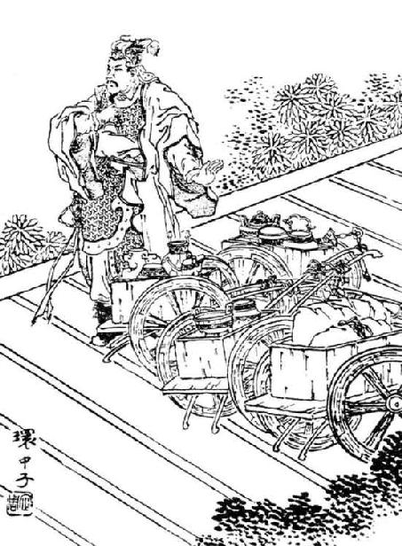

卷七十六 平原君虞卿列传第十六
杨慎：“言在浊世为佳公子，清世则否矣，褒贬在言外，所以称为雄深。平原之人未睹，大体可断。‘虞卿非穷愁不能著书以自见于后世’，韩子《柳子厚墓志》用此意。”
平原君赵胜者，赵之诸公子也。诸子中胜最贤，喜宾客，宾客盖至者数千人。平原君相赵惠文王及孝成王，三去相，三复位，封于东武城。
平原君家楼临【临：俯视。】 民家。民家有躄bì【躄：跛，腿瘸。】 者，盘散【盘散：通“蹒跚”，走路不稳。】 行汲。平原君美人居楼上，临见，大笑之。明日，躄者至平原君门，请曰：“臣闻君之喜士，士不远千里而至者，以君能贵士而贱妾也。臣不幸有罢癃【罢癃：指残疾。罢，通“疲”。】 之病，而君之后宫临而笑臣，臣愿得笑臣者头。”平原君笑应曰：“诺。”躄者去，平原君笑曰：“观此竖子【竖子：小子，对人的鄙称。】 ，乃欲以一笑之故杀吾美人，不亦甚乎！”终不杀。居岁余，宾客门下舍人稍稍引去者过半。平原君怪之，曰：“胜所以待诸君者未尝敢失礼，而去者何多也？”门下一人前对曰：“以君之不杀笑躄者，以君为爱色而贱士，士即去耳。”于是平原君乃斩笑躄者美人头，自造门进躄者，因谢【谢：道歉。】 焉。其后门下乃复稍稍来。是时齐有孟尝，魏有信陵，楚有春申，故争相倾【倾：倒，使之归己。】 以待士。
平原君赵胜这个人，是赵国王室的一位公子。在众多的公子当中，以赵胜最为贤能。他喜欢延揽宾客，前来投奔他的宾客大约有几千人。平原君辅佐了赵惠文王和赵孝成王，曾三次被免去相位，又三次恢复相位，他的封地在东武城。
平原君家里的楼房正对着平民的家。有户平民家里有个瘸腿的人，走路一瘸一拐地去井边打水。侍奉平原君的一个美女站在楼上，在高处看到这一幕，就大声嘲笑那个人。第二天，那个瘸腿的人走到平原君家门前，向他请求说：“我听别人说您喜爱士人，有的士人不远千里来到您这里，就是由于您能够重视士人，而看轻自己的侍妾。我不幸得了驼背腿瘸的残疾，可是您后宫里的一个美人在楼上看到后嘲笑我，我想得到嘲笑我的那个人的人头。”平原君笑着回答那个人说道：“我答应你。”瘸腿的人走了后，平原君笑着对别人说道：“看看这个小子，竟然由于受到嘲笑的缘故而想让我杀掉宠爱的美人，这不是太过分了吗！”最终也没有杀掉美人。过了一年多的时间，平原君的宾客以及门下的食客渐渐地走了超过一半的人。平原君对此觉得非常奇怪，就问手下还没有离开的宾客：“我赵胜用来招待各位贤人的各方面的礼节，从来都不曾有过失误的地方，为什么离开的人这么多呢？”门下的一位宾客走上前回答平原君说：“因为您没有杀掉嘲笑瘸子的那个美女，所以人们都认为您喜好女色而不重视士人，士人就离开了。”在听了这些话之后，平原君于是砍掉嘲笑瘸子的美人的头颅，亲自敲门拜访瘸子，把人头进献给他，并趁这个机会向他表达歉意。之后平原君门下的宾客才逐渐回来。此时齐国有位孟尝君，魏国有位信陵君，楚国有位春申君，他们争相招揽贤士。
秦之围邯郸，赵使平原君求救，合从于楚，约与食客门下有勇力文武备具者二十人偕。平原君曰：“使文能取胜，则善矣。文不能取胜，则歃血于华屋之下，必得定从而还。士不外索，取于食客门下足矣。”得十九人，余无可取者，无以满二十人。门下有毛遂者，前，自赞【赞：自我推荐。】 于平原君曰：“遂闻君将合从于楚，约与食客门下二十人偕，不外索。今少一人，愿君即以遂备员而行矣。”平原君曰：“先生处胜之门下几年于此矣？”毛遂曰：“三年于此矣。”平原君曰：“夫贤士之处世也，譬若锥之处囊中，其末立见。今先生处胜之门下三年于此矣，左右未有所称诵，胜未有所闻，是先生无所有也。先生不能，先生留。”毛遂曰：“臣乃今日请处囊中耳。使遂蚤【蚤：通“早”。】 得处囊中，乃颖脱而出，非特其末见而已。”平原君竟与毛遂偕。十九人相与目笑之而未废也。
平原君，选自《东周列国志》。
秦国军队包围了邯郸，赵王派平原君突围向别的国家求救，想跟楚国制定“合纵”策略，共同对付秦国。平原君决定带着门下食客中有勇力、文武兼备的二十个人一起去楚国。平原君说：“假使凭借和平方式能够完成任务，那是最好不过了。若不然，那只能在华丽的宫殿中胁迫楚王歃血为盟，一定要定下合纵盟约才能返回。贤能之士用不着到外面寻求，从我门下的食客中挑选就足够了。”选出十九个人之后，剩下的都不足取，不能凑满二十人。门下有个名叫毛遂的食客，走上前来，当着平原君的面称赞自己道：“我听别人说您想要与楚国合纵，一起抗拒秦国，决定带着手下的食客二十人一起到楚国去，不在外面寻找。既然如今少一个人，那请求您就把我当成后备人员一起同行吧。”平原君对毛遂说：“先生从来到我赵胜的门下到如今有几年的时间了？”毛遂说：“到如今有三年的时间了。”平原君说：“贤士生活在这个世上，就如同尖锐的锥子放在布口袋中，锥子的尖头会立刻透出来。如今先生您投到赵胜的门下已经三年了，我身边的人没有一个称赞您的，我赵胜也没有听到过什么关于先生的事迹，这是先生没有可以展现的才能。先生还是别去了，留下来吧。”毛遂说道：“我到今天才被放进布口袋里。假使毛遂早一天能够被放进布口袋里，那么整个锥子的锋利就会全部露出，不会只是锥子的尖显露出来而已。”平原君最终决定带着毛遂一起到楚国去。其余的十九个人相互用眼神交流笑话毛遂，但没有阻止平原君带他去。
毛遂比至楚，与十九人论议，十九人皆服。平原君与楚合从，言其利害，日出而言之，日中不决。十九人谓毛遂曰：“先生上。”毛遂按剑历阶【历阶：古代礼制，登阶时，每上一层台阶，双脚都要落在台阶上，然后上第二层。如果一只脚踏上第一层，另一只脚跨上第二层，就叫“历阶”。】 而上，谓平原君曰：“从之利害，两言而决耳。今日出而言从，日中不决，何也？”楚王谓平原君曰：“客何为者也？”平原君曰：“是胜之舍人也。”楚王叱曰：“胡不下！吾乃与而君言，汝何为者也！”毛遂按剑而前曰：“王之所以叱遂者，以楚国之众也。今十步之内，王不得恃楚国之众也，王之命县【县：同“悬”。】 于遂手。吾君在前，叱者何也？且遂闻汤以七十里之地王天下，文王以百里之壤而臣诸侯，岂其士卒众多哉，诚能据其势而奋其威。今楚地方五千里，持戟百万，此霸王之资也。以楚之强，天下弗能当。白起，小竖子耳，率数万之众，兴师以与楚战，一战而举鄢郢，再战而烧夷陵，三战而辱王之先人。此百世之怨而赵之所羞，而王弗知恶焉。合从者为楚，非为赵也。吾君在前，叱者何也？”楚王曰：“唯唯【唯唯：连声答应。】 ，诚若先生之言，谨奉社稷而以从。”毛遂曰：“从定乎？”楚王曰：“定矣。”毛遂谓楚王之左右曰：“取鸡狗马之血来。”毛遂奉铜盘而跪进之楚王曰：“王当歃血而定从，次者吾君，次者遂。”遂定从于殿上。毛遂左手持盘血而右手招十九人曰：“公相与歃此血于堂下。公等录录【录录：通“碌碌”。】 ，所谓因人成事者也。”
平原君已定从而归，归至于赵，曰：“胜不敢复相士。胜相士多者千人，寡者百数，自以为不失天下之士，今乃于毛先生而失之也。毛先生一至楚，而使赵重于九鼎大吕。毛先生以三寸之舌，强于百万之师。胜不敢复相士。”遂以为上客。
毛遂等跟着平原君到了楚国以后，跟十九个人一起商议讨论，这十九个人对他都服气。平原君和楚国商议合纵抗秦的事情，言明了利害关系，但是从太阳刚出来的时候一直谈到太阳位于中天都没有定论。那十九个人就对毛遂说道：“毛先生上前去说吧。”毛遂就握着剑柄急促地十阶而上，对平原君说道：“合纵抗秦的益处，两句话就可以说清楚，进而决定下来。现在从太阳一出来就开始谈论合纵的问题，到太阳位于中天都没有决定下来，这是什么原因？”楚王对平原君说道：“客人是来做什么的？”平原君对楚王说道：“他是我的门客。”楚王大声斥责道：“还不退下！我在跟你的主人交谈，你到这里来干什么！”毛遂按着剑柄走上前说道：“大王之所以斥责我，凭借的是楚国人多势众。现在我跟大王的距离在十步以内，大王不能凭借楚国威势，大王的性命掌握在我的手里。我主人就在眼前，你为什么要斥责我呢？而且我听说创建商朝的汤凭借方圆七十里的土地而成为天下的帝王，周文王凭借方圆百里的土地就能够令诸侯臣服，哪里是因为手下士兵众多，实际是因为他们能把握住令自己处于有利地位的形势进而展现他们的威风。现在楚国的土地方圆有五千里，手持长戟的士兵有一百多万，这都是楚国在天下称霸称王的资本。凭借楚国如此强大的力量，天下没有哪个诸侯国可以抵挡。白起，只不过是个令人蔑视的小子而已，他带领几万人的军队，出兵来与楚国作战，一战就攻占了楚国的鄢、郢两地，第二战就火烧夷陵，第三战就使大王的祖先受到了侮辱。这些都是楚国人百代都难以忘记的仇恨，连赵国都为此感到羞耻，但大王您却不觉得羞耻。制定合纵抗秦的盟约是为了帮助楚国雪耻，并不是为了赵国。我主人就在您的眼前，为什么要斥责我呢？”楚王听完，说道：“是是，确实如同先生说的那样，我愿意恭恭敬敬地拿出全国的力量来与赵国合纵抗秦。”毛遂说道：“签订合纵盟约之事确定了吗？”楚王说：“确定了。”毛遂对楚王左右两边的人说道：“把鸡、狗、马的血取来。”毛遂手里捧着用铜制成的盘子，跪在地上将它进献到楚王面前说道：“大王您应该以歃血的仪式来表明合纵的盟约已经确定，然后便是我的主人，再后面就是我。”于是合纵的盟约在楚国的宫殿堂上确定下来了。毛遂用左手拿着装着血的铜盘，用右手叫那十九个人说道：“诸公依次在殿堂下面歃血盟誓吧。你们这些人庸庸碌碌，无所作为，正是所谓的依靠别人成就事业的人。”
平原君在跟楚国签订了合纵抗秦的盟约之后就返回，到了赵国，说：“我再也不敢察看、判断士人了。被我察看、判断过的士人，往多说有一千人，往少说也有几百人，我自己觉得不会错失天下的贤士，今天从毛先生这件事来看，是我错看他了。毛先生到了楚国，就让赵国的地位比楚国的九鼎和大吕还要尊贵、重要。毛先生凭借三寸长的舌头的威力，强过百万军队的威力。我从此再也不敢查看、判断贤士了。”于是就把毛遂当作上宾。
平原君既返赵，楚使春申君将兵赴救赵，魏信陵君亦矫【矫：假借别的名义。】 夺晋鄙军往救赵，皆未至。秦急围邯郸，邯郸急，且降，平原君甚患之。邯郸传舍【传舍：古时官府设立的供过往路人住宿的房舍。】 吏子李同说平原君曰：“君不忧赵亡邪？”平原君曰：“赵亡则胜为虏，何为不忧乎？”李同曰：“邯郸之民，炊骨易子而食，可谓急矣，而君之后宫以百数，婢妾被【被：通“披”，穿。】 绮縠【绮縠：高级丝织品。】 ，余粱肉，而民褐衣不完，糟糠【糟糠：恶劣的食物。】 不厌【厌：饱。】 。民困兵尽，或剡木为矛矢，而君器物钟磬自若。使秦破赵，君安得有此？使赵得全，君何患无有？今君诚能令夫人以下编于士卒之间，分功而作，家之所有尽散以飨士，士方其危苦之时，易德耳。”于是平原君从之，得敢死之士三千人。李同遂与三千人赴秦军，秦军为之却三十里。亦会楚、魏救至，秦兵遂罢，邯郸复存。李同战死，封其父为李侯。
平原君返回赵国后，楚王派春申君率领军队赶赴赵国救援，魏国的信陵君也假借魏王的命令夺过了晋鄙的军队，去救援赵国，都还没有到达。秦国军队更加急切地包围邯郸，邯郸的形势十分危急，即将投降，平原君极为担忧。邯郸一个名叫李同的传舍小官的儿子对平原君进行游说：“您不为赵国即将灭亡感到担忧吗？”平原君说：“赵国如果灭亡，我就会成为秦国的俘虏，为什么说我不担心呢？”李同说：“邯郸城里的平民百姓用已经枯朽的人骨当柴烧，交换子女当作食物来吃，可以说现在的情况已经很紧急了，但是居住在您的后宫中的美丽女子有几百人，奴婢和侍妾身上穿的都是绫罗绸缎，有剩余的粮食和鱼肉，而普通的百姓身上的粗布衣服却是不完整的，就算是糟糠都无法吃饱。百姓的生活陷入困境，武器用尽，有的人就把树枝削尖来当作长矛和箭，但您日常所使用的物品、乐器都像平常那么多。假如秦国灭亡了赵国，您到哪里去享受这些东西呢？假如令赵国得到保全，您又何必担心不能获得这些东西呢？假如您确实能够把位在夫人之下的人都编入士兵的行列，分担一些工作，将家中一切财物拿出来，用来犒劳士卒，士卒们此时正处于艰难困苦之际，很容易记住您的恩德。”于是平原君听从了李同的意见，得到愿意效死的士卒三千人。李同于是就率领这三千人朝秦国军队发起冲锋，秦国军队因此撤退了三十里。恰好此时楚、魏两国的救兵也赶到了，秦国军队于是撤兵回国了，邯郸又得以保存。李同在战斗的时候死了，于是封他父亲为李侯。
虞卿欲以信陵君之存邯郸为平原君请封。公孙龙闻之，夜驾见平原君曰：“龙闻虞卿欲以信陵君之存邯郸为君请封，有之乎？”平原君曰：“然。”龙曰：“此甚不可。且王举君而相赵者，非以君之智能为赵国无有也。割东武城而封君者，非以君为有功也，而以国人无勋，乃以君为亲戚故也。君受相印不辞无能，割地不言无功者，亦自以为亲戚故也。今信陵君存邯郸而请封，是亲戚受城而国人计功也。此甚不可。且虞卿操其两权，事成，操右券【右券：古代刻木为契，双方分别执左右两半，作为凭信。左半叫左券，右半叫右券。】 以责；事不成，以虚名德君。君必勿听也。”平原君遂不听虞卿。
平原君以赵孝成王十五年卒。子孙代，后竟与赵俱亡。
平原君厚待公孙龙。公孙龙善为坚白之辩，及邹衍过赵言至道，乃绌公孙龙。
信陵君保住了邯郸，是平原君请求信陵君的结果，虞卿因此请求为平原君增加封地。公孙龙听说这件事之后，连夜驾驶马车去见平原君说：“我听说虞卿想要以信陵君保全邯郸的理由来向大王请求增加您的封地，有这回事吗？”平原君说：“是的。”公孙龙说：“千万不能这么做。大王提拔您做了赵国的国相，并不是由于您的智慧和才能在赵国是无人能及的。割出东武城赏赐给您的原因，并非是因为您对国家有功，百姓对国家没有功劳，而是因为您是大王的亲戚的缘故。您在接受相国的印信时没有推辞自己能力不足，接受分割的封地时没有说自己没有创建功勋，也是由于您觉得自己是大王的亲戚的缘故。如今因为信陵君保全了邯郸而为您请求增加封地，这是凭借大王亲戚的关系来接受封地，但也是凭借国民身份评定功劳而接受赏赐。这就很不应该了。而且虞卿抓住了这件事情成与不成的两个主动权：事情办成了，虞卿就会像拿着债券的债主一样向您索取报酬；事情没有成功，他会借着为您着想的虚名来让您记住他的恩德。您一定不要听取他的建议。”平原君于是没有听取虞卿的意见。
平原君在赵孝成王十五年（前251年）去世。他的子孙代替他继承了封地和爵位，直到最后赵国灭亡，他们的封地和爵位才失去。
平原君曾给予公孙龙优厚的待遇。公孙龙善于石头坚、白的辩论，等到邹衍途经赵国讲述至道之后，平原君才罢黜了公孙龙。
虞卿者，游说之士也。蹑蹻檐簦【蹑蹻檐簦：指穿着草鞋，背着斗笠。比喻远行跋涉。蹑，踩，此处指脚上穿着。蹻，草鞋。檐，通“担”，背负。簦，斗笠。】 说赵孝成王。一见，赐黄金百镒，白璧一双；再见，为赵上卿，故号为虞卿。
秦赵战于长平，赵不胜，亡一都尉。赵王召楼昌与虞卿曰：“军战不胜，尉复死，寡人使束甲【束甲：卷起甲衣。比喻轻装疾进。】 而趋之，何如？”楼昌曰：“无益也，不如发重使为媾【媾：讲和。】 。”虞卿曰：“昌言媾者，以为不媾军必破也。而制媾者在秦。且王之论秦也，欲破赵之军乎，不邪？”王曰：“秦不遗余力矣，必且欲破赵军。”虞卿曰：“王听臣，发使出重宝以附楚、魏，楚、魏欲得王之重宝，必内【内：通“纳”。】 吾使。赵使入楚、魏，秦必疑天下之合从，且必恐。如此，则媾乃可为也。”赵王不听，与平阳君为媾，发郑朱入秦。秦内之。赵王召虞卿曰：“寡人使平阳君为媾于秦，秦已内郑朱矣，卿以为傒如？”虞卿对曰：“王不得媾，军必破矣。天下贺战胜者皆在秦矣。郑朱，贵人也，入秦，秦王与应侯必显重以示天下。楚、魏以赵为媾，必不救王。秦知天下不救王，则媾不可得成也。”应侯果显郑朱以示天下贺战胜者，终不肯媾。长平大败，遂围邯郸，为天下笑。
虞卿这个人，是一位善于游说的有才之士。他脚穿草鞋，背着斗笠，从远方赶来游说赵孝成王。初次会见之后，赵孝成王就赏赐给他黄金一百镒，白璧一对；第二次会见之后，就做了赵国的上卿，因此被称为虞卿。
秦、赵两国在长平进行战斗，赵国没有取胜，还死了一位都尉。赵孝成王召唤楼昌和虞卿前来，对他们说道：“军队交战却没有取胜，都尉又死了，我想让军队轻装疾进，尽力追赶敌军，怎么样？”楼昌说：“没有用啊，不如派一位地位尊贵的使臣与秦军讲和。”虞卿说道：“楼昌说要与对方讲和的原因，是觉得如果不跟对方讲和，我军就必然被打败。可是是否讲和的决定权掌握在秦人手中。况且我想问大王认为秦国的目的是要打败赵军呢？还是不想打败呢？”赵孝成王说道：“秦国没有留下一点余力，一定是想打败赵军了。”虞卿说：“大王您听我的，就派遣使者带贵重的宝物去亲附楚、魏两国，这两个国家想着得到大王您贵重的宝物，肯定愿意接纳我们的使者。赵国使者到了楚、魏两国，秦国必然会怀疑天下诸侯将要合纵抗秦，而且必然会恐惧。像这样的话，就可以与秦国讲和了。”赵王没有听虞卿的意见，跟平阳君商量与秦国讲和的事情，派遣郑朱出使秦国。秦国接纳他进入国内。赵孝成王召见虞卿，对他说道：“寡人让平阳君主持与秦国讲和的事情，秦国已经接纳了郑朱，您觉得如何？”虞卿回答道：“大王达不到讲和的目的，赵军必然会被打败。天下诸侯庆贺秦国取得战争胜利的人都到秦国去了，郑朱在赵国是尊贵的人，进入秦国以后，秦王和应侯必然会尊重他，并且昭示给天下人。楚、魏两国由于赵国与秦国讲和的原因，必然不会来救援大王。秦国要是知道天下诸侯不去救援大王的话，您想讲和，也不可能成功了。”应侯果然像虞卿所说的那样尊重郑朱，并向天下诸侯派去秦国祝贺战争胜利的人昭示，最终也不肯讲和。长平之战赵军惨败，秦国就继续进兵包围邯郸，赵国受到天下人的耻笑。
秦既解邯郸围，而赵王入朝，使赵郝shì约事于秦，割六县而媾。虞卿谓赵王曰：“秦之攻王也，倦而归乎？王以其力尚能进，爱王而弗攻乎？”王曰：“秦之攻我也，不遗余力矣，必以倦而归也。”虞卿曰：“秦以其力攻其所不能取，倦而归，王又以其力之所不能取以送之，是助秦自攻也。来年秦复攻王，王无救矣。”王以虞卿之言告赵郝。赵郝曰：“虞卿诚能尽秦力之所至乎？诚知秦力之所不能进，此弹丸之地弗予，令秦来年复攻王，王得无割其内而媾乎？”王曰：“请听子割矣，子能必使来年秦之不复攻我乎？”赵郝对曰：“此非臣之所敢任也。他日三晋之交于秦，相善也。今秦善韩、魏而攻王，王之所以事秦必不如韩、魏也。今臣为足下解负亲之攻，开关通币【通币：致送钱财。】 ，齐交韩、魏，至来年而王独取攻于秦，此王之所以事秦必在韩、魏之后也。此非臣之所敢任也。”
秦军已经解除了对邯郸的包围，赵王上朝，派赵郝到秦国去签订合约，割让六个县给秦国，同秦国讲和。虞卿对赵王说：“秦国军队攻打大王，是由于士卒疲累才撤兵的吗？大王觉得秦军的实力尚且可以进攻，但由于爱惜大王才没有进攻吗？”赵王说：“秦军在攻打我们赵国时，已经没有任何多余的力量了，所以必然是由于疲惫不堪才撤兵的。”虞卿说：“秦国军队凭借自身力量来攻打他无法夺取的地方，由于士卒疲惫才撤兵，大王还将秦国用全力都无法夺取的土地送给对方，这就是在帮着秦军打自己啊。明年秦国军队还来攻打大王的话，大王就没救了。”赵王把虞卿所说的话说给赵郝听。赵郝说道：“虞卿确实完全知晓秦国兵力所能达到的极限吗？如果确实知道秦国的兵力是无法持续下去，那么这像弹丸一样小的地方就不给秦国，秦军明年还来进攻大王的话，大王能不割让土地来求和吗？”赵王说：“我愿意听您的意见，割地讲和，可是您能够让秦国在明年必然不会再次进攻我们吗？”赵郝回答赵王说：“这件事不是我敢担保的。以前韩、赵、魏三个国家与秦国交往，大家都很友善。如今秦国与韩国、魏国友善却进攻大王，原因是大王侍奉秦国必然有不如韩、魏两国的地方。现在我为您解除由于不与秦国亲善而招致的进攻，打开边境的关口，致送钱财，用与韩国、魏国齐平的态度与秦国交往，到第二年，假如只有大王被秦国攻打的话，这就肯定是因为大王在侍奉秦国方面落在韩国、魏国之后。这个责任不是我敢担当的。”
王以告虞卿。虞卿对曰：“郝言：‘不媾，来年秦复攻王，王得无割其内而媾乎？’今媾，郝又以不能必秦之不复攻也。今虽割六城，何益！来年复攻，又割其力之所不能取而媾，此自尽之术也，不如无媾。秦虽善攻，不能取六县；赵虽不能守，终不失六城。秦倦而归，兵必罢。我以六城收天下以攻罢秦，是我失之于天下而取偿于秦也。吾国尚利，孰与坐而割地，自弱以强秦哉？今郝曰‘秦善韩、魏而攻赵者，必王之事秦不如韩、魏也’，是使王岁以六城事秦也，即坐而城尽。来年秦复求割地，王将与之乎？弗与，是弃前功而挑秦祸也；与之，则无地而给之。语曰‘强者善攻，弱者不能守’。今坐而听秦，秦兵不弊而多得地，是强秦而弱赵也。以益强之秦而割愈弱之赵，其计故不止矣。且王之地有尽而秦之求无已，以有尽之地而给无已之求，其势必无赵矣。”
赵王将赵郝所说的话告诉了虞卿。虞卿回答道：“赵郝对您说：‘如果不讲和的话，假如秦军明年还来进攻大王的话，大王不是还要割让土地来求和吗？’现在讲和的话，赵郝又用不能保证不让秦国再来进攻赵国的话来回答您。现在即使割让六座城给秦国，又有什么益处呢！如果明年秦国再来攻打赵国，那就要割让秦国兵力无法夺取的土地来讲和，这是自己令自己灭亡的方法，还不如不与秦国讲和呢。秦国军队虽然善于进攻，也不可能夺取六座城；赵国虽然不善于防守，最终也不至于失去六座城。秦军因为觉得疲惫不堪而撤兵，士兵肯定疲敝。如果我们能够用六座城的代价聚集天下诸侯来进攻已经感到疲惫不堪的秦国，那我们失去六个县落在天下诸侯手里，也可以从秦国那里获得报偿。我国还可以得到利益，这与坐等割地，使自己削弱而让秦国的实力增强相比较，哪个更有好处呢？现在赵郝对您说‘秦国与韩、魏两国友善却进攻赵国，必然是由于大王侍奉秦国有不如韩、魏两国的地方’，如果像这样每年都让大王用六座城来侍奉秦国，那就只能坐在那里眼看着赵国的城邑全都割让给秦国。如果明年秦国还要您割地，大王打算给它吗？如果不给，那就舍弃了之前功劳而惹来秦兵攻打的灾祸；如果给它，那最终将没有土地可以割让给它。古话说‘强大的人擅长进攻，弱小的人却不能防守’。如果坐在那里听从秦国的要求，秦国军队不至于疲劳，就能得到更多的土地，这是使秦国变得更强而使赵国变得更弱。由越发强大的秦国来宰割越发弱小的赵国，秦国侵略赵国的野心因此更加不会停止了。况且大王可以割让的土地总会有穷尽的时候，而秦国的贪欲却没有满足的时候，用有限的土地来应付无止境的贪求，最终赵国必然灭亡。”
赵王计未定，楼缓从秦来，赵王与楼缓计之，曰：“予秦地如毋予，孰吉？”缓辞让曰：“此非臣之所能知也。”王曰：“虽然，试言公之私。”楼缓对曰：“王亦闻夫公甫文伯母乎？公甫文伯仕于鲁，病死，女子为自杀于房中者二人。其母闻之，弗哭也。其相室【相室：古代替卿大夫管理家务的人。男称家老，女称傅母，通称家臣。】 曰：‘焉有子死而弗哭者乎？’其母曰：‘孔子，贤人也，逐于鲁，而是人不随也。今死而妇人为之自杀者二人，若是者必其于长者薄而于妇人厚也。’故从母言之，是为贤母；从妻言之，是必不免为妒妻。故其言一也，言者异则人心变矣。今臣新从秦来而言勿予，则非计也；言予之，恐王以臣为为秦也：故不敢对。使臣得为大王计，不如予之。”王曰：“诺。”
虞卿闻之，入见王曰：“此饰说也，王昚【昚：同“慎”，谨慎。】 勿予！”楼缓闻之，往见王。王又以虞卿之言告楼缓。楼缓对曰：“不然。虞卿得其一，不得其二。夫秦赵构难而天下皆说，何也？曰‘吾且因强而乘弱矣’。今赵兵困于秦，天下之贺战胜者则必尽在于秦矣。故不如亟jí割地为和，以疑天下而慰秦之心。不然，天下将因秦之怒，乘赵之弊，瓜分之。赵且亡，何秦之图乎？故曰虞卿得其一，不得其二。愿王以此决之，勿复计也。”
赵王的计谋还没有确定，楼缓从秦国回来了，赵王和楼缓商量此事，说：“给秦国土地还是不给秦国土地，哪个更好？”楼缓向赵王推辞说：“这不是我能知道的。”赵王说：“即便是这样，还是希望您说出个人意见。”楼缓答道：“大王也听说过那位公甫文伯的母亲吗？公甫文伯在鲁国出仕当官，他病死的时候，有两个妻妾在房间里自杀。公甫文伯的母亲听说儿子病死之后，没有哭泣。他们家的保姆说：‘怎么会有儿子死了母亲却不哭的道理呢？’公甫文伯的母亲说道：‘孔子，是贤人啊，他被鲁国国君驱逐，但我儿子没有跟着孔子一起离开。现在他死后为他自杀的妻妾有两个，一定是因为他对长辈刻薄，而厚爱妻妾。’就他的母亲的来说，他的母亲是贤德的；就他妻妾的来说，一定是位嫉妒的妻子。因此虽然人们所说的话是一样的，但因为说话者的身份不同，人们心里所想的也就不同了。如今我刚刚从秦国归来，假如说不割让土地给秦国，就不算什么办法；假如说把土地给秦国吧，恐怕大王会觉得我是在帮助秦国：因此我不敢回答你的问题。假如我必须要替大王考虑的话，我觉得不如把土地给它。”赵王说：“好的。”
虞卿听说之后，入宫求见赵王说道：“楼缓说的都是用来装饰的漂亮话，大王要谨慎，别把土地割让给秦国！”楼缓听说虞卿去见赵王，也入宫求见赵王。赵王又将虞卿所说的告诉了楼缓。楼缓回答道：“不是这样的。虞卿只知道事情的一方面，不知道事情的另一方面。秦、赵两国制造了战争的灾难，但天下诸侯都很高兴，什么原因呢？因为他们会想‘我将要依靠强国来欺负弱国了’。现在赵国的军队受到秦军的围困，天下诸侯一定会派遣使者前往秦国祝贺赢得战争胜利。因此不如赶紧割让土地，与秦军讲和，从而使天下诸侯疑惑，而且能够安慰秦国。如果不这样做，天下诸侯就会趁着强大的秦国发怒、赵国处于弱势的机会，像切瓜一样分割赵国。赵国都要灭亡了，还怎么图谋抵抗秦国呢？因此说虞卿只知道事情的一方面，不知道事情的另一方面。请大王据此作出决定，别再考虑了。”
虞卿闻之，往见王曰：“危哉楼子之所以为秦者！是愈疑天下，而何慰秦之心哉？独不言其示天下弱乎？且臣言勿予者，非固勿予而已也。秦索六城于王，而王以六城赂齐。齐，秦之深仇也，得王之六城，并力西击秦，齐之听王，不待辞之毕也。则是王失之于齐而取偿于秦也。而齐、赵之深仇可以报矣，而示天下有能为也。王以此发声，兵未窥于境，臣见秦之重赂至赵而反媾于王也。从秦为媾，韩、魏闻之，必尽重王；重王，必出重宝以先于王。则是王一举而结三国之亲，而与秦易道也。”赵王曰：“善。”则使虞卿东见齐王，与之谋秦。虞卿未返，秦使者已在赵矣。楼缓闻之，亡去。赵于是封虞卿以一城。
虞卿听说以后，赶到赵王那里说道：“楼先生用来帮助秦国的这个计谋实在是太危险了！这样做只能让天下的诸侯更加疑惑，怎么能够安慰秦国呢？为什么他唯独没说这样做将赵国的弱点全都展示在天下人面前了呢？而且我主张不割让土地的原因，不只是不割地而已。秦国向赵国索要六座城池，但大王却把六座城送给齐国。齐国，是秦国最大的仇敌，得到大王的六座城池，就会与赵国联合起来向西攻打秦国，齐王听到您的意见，等不到您把话说完就会从命的。这便是大王在齐国那里失去六座城池，但又能在秦国那儿得到报偿。齐国、赵国的仇恨都可以报了，而且还能向天下展示赵国是能够有所作为的。大王您把这件事情宣扬出去，军队还没有窥探到边境，我就能看到秦国的使者带着贵重礼物赶到赵国，反而会向大王请求讲和。大王顺从秦国的意思与他讲和，韩、魏两国听说以后，必然全都敬重大王；敬重大王，必然会拿出贵重的财宝争先恐后地献给大王。如果是这样的话，大王一下子就可以跟齐、韩、魏三个国家结为亲善之国，从而赵、秦两国之间的情势也发生改变。”赵王说：“好。”于是派虞卿为使者到东方去拜见齐王，和齐王谋划抗拒秦国的计策。虞卿还没有从齐国返回，秦国派来送礼物的使者已经到了赵国。楼缓听到这件事，就从赵国逃走了。赵王因此赐给虞卿一座城邑。
居顷之，而魏请为从。赵孝成王召虞卿谋。过【过：拜访。】 平原君，平原君曰：“愿卿之论从也。”虞卿入见王。王曰：“魏请为从。”对曰：“魏过。”王曰：“寡人固未之许。”对曰：“王过。”王曰：“魏请从，卿曰魏过，寡人未之许，又曰寡人过，然则从终不可乎？”对曰：“臣闻小国之与大国从事也，有利则大国受其福，有败则小国受其祸。今魏以小国请其祸，而王以大国辞其福，臣故曰王过，魏亦过。窃以为从便。”王曰：“善。”乃合魏为从。
虞卿既以魏齐之故，不重万户侯卿相之印，与魏齐间行，卒去赵，困于梁。魏齐已死，不得意，乃著书，上采《春秋》，下观近世，曰《节义》《称号》《揣摩》《政谋》，凡八篇。以刺讥【刺讥：嘲笑讽刺。】 国家得失，世传之曰《虞氏春秋》。
没过多久，魏国就派人来请求跟赵国合纵抗秦。赵孝成王召来虞卿谋划。虞卿先去拜访了平原君，平原君说：“希望您多说说合纵的好处。”虞卿入朝拜见赵王。赵王说：“魏国向我发出合纵抗秦的请求。”虞卿的回答是：“魏国犯了过错。”赵王说道：“我本来也没想答应他。”虞卿的回答是：“大王您也犯了过错。”赵王说道：“魏国向寡人请求合纵抗秦，您说魏国犯了过错，我不答应魏国的请求，您又说我犯了过错。既然这样，那么合纵的盟约最终可不可以签订呢？”虞卿回答赵王说：“我听说小国在跟大国签订合纵盟约之后，如果获得胜利，大国就能得到它带来的好处；如果失败，小国就要遭受它带来的灾难。现在魏国愿意以小国的身份接受遭受灾难的危险，大王却想以大国的身份来推却它带来的好处，所以我说大王有过错，魏国也有过错。但我私下里觉得合纵对赵国更加有利。”赵王说道：说得太好了。”于是就和魏国签订了合纵的盟约。
后来虞卿由于魏齐的原因，不看重封邑万户的侯爵和卿相的高位，与魏齐从小路逃走，最终离开了赵国，但却在魏国受困。魏齐死了以后，虞卿不得志，于是就写书，他从前代的《春秋》中采集史实，又考察近代的历史，写成了《节义》《称号》《揣摩》《政谋》，共八篇。文章中讽刺国家政治措施的成功与失败之处，这本书世代流传，后人称它为《虞氏春秋》。
太史公曰：平原君，翩翩浊世之佳公子也，然未睹大体。鄙语曰“利令智昏”，平原君贪冯亭邪说，使赵陷长平兵四十余万众，邯郸几亡。虞卿料事揣情，为赵画策，何其工也！及不忍魏齐，卒困于大梁，庸夫且知其不可，况贤人乎？然虞卿非穷愁，亦不能著书以自见于后世云。
太史公说：平原君这个人，可以说是那个混乱的时代里的一位洒脱、贤能的公子，但他却不能识大体。民间俚俗之语说“利益让聪明的头脑发昏”，平原君相信冯亭的邪说，令赵国在长平一战中损失四十多万人，邯郸几乎沦陷。虞卿预计事态和情势的发展，为赵国出谋划策，多么巧妙啊！等到不忍看到魏齐被杀死，最终被困在了大梁，一般人都明白虞卿这样做是行不通的，何况贤能的人呢？但若不是虞卿处于穷困愁苦的地步，也不会因为写书而使自己名垂后世。
卷七十七 魏公子列传第十七
李白：“大梁贵公子，气盖苍梧云。救赵复存魏，英威天下闻。”
王世贞：“三公之好士也，以自张也；信陵君之好士也，以存魏也。”
魏公子无忌者，魏昭王少子而魏安厘王异母弟也。昭王薨hōng，安厘王即位，封公子为信陵君。是时范睢亡魏相秦，以怨魏齐故，秦兵围大梁，破魏华阳下军，走芒卯。魏王及公子患之。
公子为人仁而下士，士无贤不肖皆谦而礼交之，不敢以其富贵骄士。士以此方数千里争往归之，致食客三千人。当是时，诸侯以公子贤，多客，不敢加兵谋魏十余年。
公子与魏王博【博：古代的一种棋戏。】 ，而北境传举烽【举烽：点燃报警烽火。】 ，言“赵寇至，且入界”。魏王释博，欲召大臣谋。公子止王曰：“赵王田猎耳，非为寇也。”复博如故。王恐，心不在博。居顷，复从北方来传言曰：“赵王猎耳，非为寇也。”魏王大惊，曰：“公子何以知之？”公子曰：“臣之客有能深得赵王阴事者，赵王所为，客辄以报臣，臣以此知之。”是后魏王畏公子之贤能，不敢任公子以国政。
魏公子名叫无忌，是魏昭王的小儿子，魏安厘王同父异母的弟弟。魏昭王去世，魏安厘王即位做了国君，封公子无忌为信陵君。这个时候范睢从魏国逃走，到秦国做了宰相，因为怀恨魏齐的原因，所以派秦国的军队围攻大梁，打败了魏国驻扎在华阳的军队，魏军主将芒卯逃走。魏王和公子无忌非常担心。
公子无忌做人仁德，能够委屈自己结交贤士，士人无论是贤能的还是不贤能的，他都会恭谦有礼地同他们交往，从来不敢因为自己富有、尊贵而轻视那些士人。士人们因为这个缘故，争相从数千里远的地方赶来归附他，招纳在门下的食客有三千人。在这个时候，诸侯因为公子无忌贤能、手下宾客众多的缘故，在十几年的时间里不敢出兵图谋魏国。
公子无忌正在和魏王下棋，北方边境传来了烽火被点燃的消息，说“赵国进犯的军队到了，将要进入魏国的边界”。魏王放下棋子，想要召集大臣们一起商量对策。公子无忌阻止魏王说道：“赵王是在打猎，并不是要侵犯魏国。”又像之前那样下棋。魏王很惊慌，心思没有放在下棋上。过了一会儿，又从北方传来了消息说：“赵王只是打猎罢了，不是要侵犯魏国。”魏王非常吃惊，说：“您凭借什么知道这件事的。”公子无忌说：“我的门客中有能潜入赵国探听赵王秘密的人，赵王有什么行动，那门客就会报告给我，我因此知道这件事。”这件事情之后，魏王忌惮公子无忌的贤能，不敢把魏国的政事交给公子无忌来处理。
魏有隐士曰侯嬴，年七十，家贫，为大梁夷门监者。公子闻之，往请，欲厚遗之。不肯受，曰：“臣修身洁行数十年，终不以监门困故而受公子财。”公子于是乃置酒大会宾客。坐定，公子从车骑，虚左【虚左：古代以左为尊。】 ，自迎夷门侯生。侯生摄【摄：整理。】 敝衣冠，直上载公子上坐，不让，欲以观公子。公子执辔愈恭。侯生又谓公子曰：“臣有客在市屠中，愿枉车骑过之。”公子引车入市，侯生下见其客朱亥，俾倪【俾倪：同“睥睨”，歇着眼睛侧目而视，有高傲之意。】 ，故久立与其客语，微察公子。公子颜色愈和。当是时，魏将相宗室宾客满堂，待公子举酒。市人皆观公子执辔。从骑皆窃骂侯生。侯生视公子色终不变，乃谢客就车。至家，公子引侯生坐上坐，遍赞宾客，宾客皆惊。酒酣，公子起，为寿侯生前。侯生因谓公子曰：“今日嬴之为公子亦足矣。嬴乃夷门抱关【抱关：守门。】 者也，而公子亲枉车骑，自迎嬴于众人广坐之中，不宜有所过，今公子故过之。然嬴欲就公子之名，故久立公子车骑市中，过客以观公子，公子愈恭。市人皆以嬴为小人，而以公子为长者能下士也。”于是罢酒，侯生遂为上客。
魏国有位隐士名叫侯嬴，已经七十岁了，家里非常贫穷，是大梁的东城门的守门小吏。公子无忌听说后，前往聘请，想要送给他丰厚的礼物。侯嬴不肯接受礼物，对公子无忌说：“我修养身心、洁净品行已经几十年了，终究不会因为看守城门生活贫困而接受您的财物。”公子无忌于是置办酒席，请宾客聚会。众人都坐好之后，公子无忌就带着随从和车马，空出马车左边的座位，亲自到东城门去迎请侯生。侯生整理了一下破旧的衣服和帽子，直接就登上马车坐在了公子无忌空出来的尊位上，没有谦让的表现，想要借此观察公子无忌的神色。公子无忌手里拉着马缰绳，神色更加恭敬。侯生又对公子无忌说道：“我有个好朋友在集市上的屠宰场，希望您的马车能够绕道，让我去拜访他。”公子无忌驾着马车进入了集市，侯生下车去看他的朋友朱亥，侯生一边斜着眼睛看公子无忌，一边故意长时间地站着跟他的朋友说话，暗地里观察公子无忌的表现。公子无忌脸上的神色更加谦和。在这个时候，魏国的大将、卿相，与魏王同宗、同室的人，在公子无忌家的厅堂里都坐满了，等待公子无忌劝酒。而集市上的人都在观看公子无忌在那里手拿缰绳等待侯生。骑马随从公子无忌的人都暗地里骂侯生。侯生见公子无忌的脸色始终都没有改变，于是告别朋友上了马车。到了公子无忌的家里，公子领着侯生坐到了尊贵的座位上，并且当着每一个宾客的面赞扬了侯生，宾客全都感到惊讶。酒喝到高兴的时候，公子无忌站起来，端着酒杯来到侯生面前为他祝寿。侯生于是对公子无忌说：“今天我为您所做的事情也足够了。我是看守城门的人，但是您亲自屈尊驾着马车，在大庭广众之中来迎接我，这时我不该再去拜访自己的朋友，现在您却能特意为我去拜访朋友。然而我也想成就公子的名声，所以长久地让您和车马、仆从站在集市中，拜访朋友来观察您，而您的态度更加恭敬、谦和。集市上的人都认为我是小人，但却认为您是一位高尚的、甘愿委屈自己来结交士人的长者。”公子无忌在听了侯嬴的话之后，就撤去了酒宴，侯生成了公子无忌的上宾。
侯生谓公子曰：“臣所过屠者朱亥，此子贤者，世莫能知，故隐屠间耳。”公子往数请之，朱亥故不复谢，公子怪之。
魏安厘王二十年，秦昭王已破赵长平军，又进兵围邯郸。公子姊为赵惠文王弟平原君夫人，数遗魏王及公子书，请救于魏。魏王使将军晋鄙将十万众救赵。秦王使使者告魏王曰：“吾攻赵旦暮且下，而诸侯敢救者，已拔赵，必移兵先击之。”魏王恐，使人止晋鄙，留军壁邺，名为救赵，实持两端以观望。平原君使者冠盖相属【冠盖相属：形容使节或官员在路上往来不绝。冠盖，古代官吏的冠服和车盖，代指官吏。】 于魏，让魏公子曰：“胜所以自附为婚姻者，以公子之高义，为能急人之困。今邯郸旦暮降秦而魏救不至，安在公子能急人之困也！且公子纵轻胜，弃之降秦，独不怜公子姊邪？”公子患之，数请魏王，及宾客辩士说王万端。魏王畏秦，终不听公子。公子自度终不能得之于王，计不独生而令赵亡，乃请宾客，约车骑百余乘，欲以客往赴秦军，与赵俱死。
侯生对公子无忌说：“我所拜访的那位屠户朱亥，他是一个贤能的人，世上没有了解他的人，所以他才隐藏在屠宰场里。”公子无忌到屠宰场多次邀请朱亥，朱亥故意不回答也不表示感谢，公子无忌觉得非常奇怪。
魏安厘王二十年（前257年），秦昭王打败了赵国驻扎在长平的军队，继续派兵围攻邯郸。公子无忌的姐姐是赵惠文王的弟弟平原君的夫人，多次给魏王和公子无忌送去书信，请求魏国出兵相救。魏王派大将晋鄙率领十万人去救援赵国。秦王派使者对魏王说道：“我攻打赵国，早晚之间就能攻下来，如果诸侯中有人敢救援赵国，等我消灭赵国之后，一定先派兵攻打他。”魏王害怕，派人阻止晋鄙，在邺县安营驻扎军队，表面上是救援赵国，实际上，采取首鼠两端的态度来观望形势的变化。平原君派往魏国的使者在路上连续不绝，信中责备公子无忌说：“我之所以要亲附魏国，与魏国联姻，是因为公子品行高尚而有义气，能把别人的困难当成自己的急事来办。现在邯郸早晚之间就会投降秦国，但是魏国却不救援，您那种把别人困难当作自己急事来办的精神在哪里呢！况且您纵然轻视我，要抛弃我，不管我是否投降秦国，难道也不怜惜您的姐姐吗？”公子无忌非常担心这件事，多次请求魏王，而且让手下的宾客、善于辩论的人士想方设法地劝说魏王。但因为魏王畏惧秦国，终究不听公子无忌的意见。公子无忌揣度自己的意见最终不会得到魏王的同意，认为自己不能独活于世而让赵国灭亡，就请来自己的宾客，约集了一百多辆车马，打算率领门客到赵国去与秦国军队决一死战，跟赵国一起灭亡。
行过夷门，见侯生，具告所以欲死秦军状。辞决而行，侯生曰：“公子勉之矣，老臣不能从。”公子行数里，心不快，曰：“吾所以待侯生者备矣，天下莫不闻，今吾且死而侯生曾无一言半辞送我，我岂有所失哉？”复引车还，问侯生。侯生笑曰：“臣固知公子之还也。”曰：“公子喜士，名闻天下。今有难，无他端而欲赴秦军，譬若以肉投馁虎【馁虎：饿虎。】 ，何功之有哉？尚安事客？然公子遇臣厚，公子往而臣不送，以是知公子恨之复返也。”公子再拜，因问。侯生乃屏人间语【间语：小声说话。】 ，曰：“嬴闻晋鄙之兵符常在王卧内，而如姬最幸，出入王卧内，力能窃之。嬴闻如姬父为人所杀，如姬资之三年，自王以下欲求报其父仇，莫能得。如姬为公子泣，公子使客斩其仇头，敬进如姬。如姬之欲为公子死，无所辞，顾未有路耳。公子诚一开口请如姬，如姬必许诺，则得虎符夺晋鄙军，北救赵而西却秦，此五霸之伐也。”公子从其计，请如姬。如姬果盗晋鄙兵符与公子。
他们从东门经过的时候，看到了侯生，公子无忌详细地告诉侯生自己如何与秦军拼死决战的情况。告辞诀别之后，公子无忌就要继续赶路，侯生说：“公子努力吧，老臣不能跟您一起去。”公子无忌走了几里路，心里不高兴，说：“我那么周到地对待侯生，天下没有人不知道，现在我将要死了，而侯生却连一句半句有用的话都没有对我说，难道是因为我有什么失礼的地方吗？”公子无忌于是又驾着马车回来，询问侯生。侯生笑着说：“我本来就知道您会回来。”侯生接着说：“您喜欢结交贤能的人，名声传遍天下。现在有了困难，没有别的办法却要去跟秦国军队拼命，就如同把肉投给饥饿的老虎一样，有什么用呢？还要我们这些宾客有什么用呢？但是您厚待我，您离开这里，我却不为您送行，我因此知道您肯定会觉得遗憾而返回。”公子无忌向侯生拜了两次，借机向侯生请教。侯生于是屏退旁边的人，与公子无忌小声说话，侯生说：“我听说调动晋鄙兵马的虎符常常放在魏王的卧室里面，而如姬是最受大王宠幸的妃子，经常进出大王的卧室，如果尽力，一定能够偷到手。我听说如姬的父亲被人杀害，如姬重金悬赏了三年，从大王以下，都想帮着她为父亲报仇，却没有一个人能够成功。如姬向您哭泣，您就派遣手下的宾客砍掉了她的仇人的脑袋，恭敬地献给如姬，如姬愿意为您去死，不会有什么推辞，只是没有报答您的途径。公子如果开口向如姬请求帮忙，如姬一定会答应，那么就可以得到虎符，夺取晋鄙手下的军队，向北可以救援赵国，向西可以抗拒秦国，这就是春秋时期五位霸主所进行的正义的战争那样。”公子无忌听从了侯生的计策，请求如姬帮忙。如姬果然偷出调动晋鄙军队的兵符，交给公子无忌。
公子行，侯生曰：“将在外，主令有所不受，以便国家。公子即合符，而晋鄙不授公子兵而复请之，事必危矣。臣客屠者朱亥可与俱，此人力士。晋鄙听，大善；不听，可使击之。”于是公子泣。侯生曰：“公子畏死邪？何泣也？”公子曰：“晋鄙嚄huò唶zé【嚄唶：雄武刚健的样子。】 宿将，往恐不听，必当杀之，是以泣耳，岂畏死哉？”于是公子请朱亥。朱亥笑曰：“臣乃市井鼓刀屠者，而公子亲数存【存：恤问。】 之，所以不报谢者，以为小礼无所用。今公子有急，此乃臣效命之秋也。”遂与公子俱。公子过谢侯生。侯生曰：“臣宜从，老不能。请数公子行日，以至晋鄙军之日，北向自刭，以送公子。”公子遂行。
至邺，矫魏王令代晋鄙。晋鄙合符，疑之，举手视公子曰：“今吾拥十万之众，屯于境上，国之重任，今单车来代之，何如哉？”欲无听。朱亥袖四十斤铁椎，椎杀晋鄙，公子遂将晋鄙军。勒兵下令军中曰：“父子俱在军中，父归；兄弟俱在军中，兄归；独子无兄弟，归养。”得选兵八万人，进兵击秦军。秦军解去，遂救邯郸，存赵。赵王及平原君自迎公子于界，平原君负韊lán【韊：盛弩箭的皮革袋子。】 矢为公子先引。赵王再拜曰：“自古贤人未有及公子者也。”当此之时，平原君不敢自比于人。公子与侯生决，至军，侯生果北乡自刭。
公子将要出发，侯生对他说：“大将在外领兵征战，君主的号令有时可以不必接受，这样才有益于国家。即便您手中兵符与晋鄙手中的兵符相合，但晋鄙也可能不把军队的指挥权交给您，而是再次向魏王请示，那么事情就危险了。我的朋友屠夫朱亥可以和您一起去，这个人是大力士。如果晋鄙听从您的号令，那就太好了；如果他不听从您的号令，可以让朱亥击杀他。”公子无忌在听到侯生的话之后就哭了。侯生说：“公子您是怕死吗？为什么要哭泣呢？”公子无忌说：“晋鄙是魏国一位勇勐善战的老将，到了那里之后恐怕他不会听从我，必然要杀掉他，所以哭泣，难道我会怕死吗？”公子无忌就去请求朱亥帮忙。朱亥笑着说：“我只是集市上的一个操刀的屠夫，而您多次亲自登门拜访我，之所以没有报答感谢您，是因为我认为小的礼节不用拘守。现在您遇到危急情况，正是我为您效力的时候。”于是和公子无忌同行。公子无忌拜访侯生并向他辞行，侯生说：“我理应跟您一起去，但因为年老而不能成行。请让我计算公子的行进的日期，在您到达晋鄙军营之日，我会面向北方自刎而死，就算是为公子送行了。”公子无忌于是出发了。
到了邺县，公子无忌假传魏王的命令要代替晋鄙，晋鄙见兵符相合，心里却怀疑，就抬起手来盯着公子无忌说道：“现在我统领十万人兵马，驻扎在边境，担负着守卫国家的重大责任，现在您乘着一辆马车来到这里，想要接替军队的指挥权，这是什么道理呢？”想要不听公子无忌的命令。朱亥在袖子里藏着一只四十斤的铁锤，就锤死了晋鄙，公子于是成了晋鄙军队的统领。整顿军队时，公子发布命令说：“父亲和儿子都在军队里的，父亲回家；兄长和弟弟都在军队里的，哥哥回家；是家中唯一的儿子的，回家去奉养双亲。”得到精选出来的士兵八万人，公子无忌率领这些士兵攻打秦国的军队。秦国军队解除了对赵国的包围，于是邯郸得救，赵国也得以保存。赵王和平原君亲自到邯郸城的郊外迎接公子无忌，平原君身上背着装满箭的箭囊为公子无忌带路。赵王对着公子无忌拜了两次，说道：“自古以来的贤德之人，没有能赶得上您的。”在这个时候，平原君不敢拿自己跟公子无忌相比。公子无忌和侯生诀别之后，在他到达晋鄙军营的那一天，侯生果然面向北方自刎而死。
魏王怒公子之盗其兵符，矫杀晋鄙，公子亦自知也。已却秦存赵，使将将其军归魏，而公子独与客留赵。赵孝成王德公子之矫夺晋鄙兵而存赵，乃与平原君计，以五城封公子。公子闻之，意骄矜而有自功【自功：自认为有功绩。】 之色。客有说公子曰：“物有不可忘，或有不可不忘。夫人有德于公子，公子不可忘也；公子有德于人，愿公子忘之也。且矫魏王令，夺晋鄙兵以救赵，于赵则有功矣，于魏则未为忠臣也。公子乃自骄而功之，窃为公子不取也。”于是公子立自责，似若无所容者。赵王扫除自迎，执主人之礼，引公子就西阶【西阶：指堂西台阶。示尊礼之位。】 。公子侧行辞让，从东阶上。自言罪过，以负于魏，无功于赵。赵王侍酒至暮，口不忍献五城，以公子退让也。公子竟留赵。赵王以鄗为公子汤沐邑，魏亦复以信陵奉公子。公子留赵。
魏王对公子无忌偷他的兵符、假传王命杀死晋鄙的行为非常生气，公子无忌自己也知道，等到打退秦军保全赵国之后，便派将领率领魏国军队回到了魏国，他自己则与宾客留在了赵国。赵孝成王对公子假传王命杀晋鄙、救援赵国的恩德非常感激，于是和平原君商量，想把五座城池封给公子无忌。公子听说之后，心中有了骄傲自满的意思，脸上也带有一种认为自己功劳很大的神色。宾客中有人劝说公子说：“事情有的不可以忘记，也有的不可以不忘掉。如果是别人对公子有恩德，那么公子您是不能忘掉的；如果是公子对别人有恩德，那么希望公子能够忘掉。况且假传魏王的命令，夺取晋鄙手下军队来救援赵国，对赵国来说是功劳，对魏王来说却不是忠臣。公子您竟然为自己感到骄傲，并且觉得功劳很大，我私下里认为公子不应当这样。”公子无忌听了这些话以后立刻责备自己，好像没有地方可以让他容身一样。赵王亲自打扫宫殿，依照主人迎接贵宾的礼节，带着公子无忌走西边的台阶。公子无忌侧着身子，一再地推辞谦让，走东边的台阶。他说自己有罪，犯了过错，因为辜负了魏国，对赵国也没有功劳。赵王陪着公子无忌喝酒，直到天黑，始终没有开口说要给公子无忌五座城池做封邑的事情，因为公子无忌一直都在谦让、责备自己。公子无忌最终留在了赵国。赵王把鄗地封赏给公子无忌，作为汤沐邑，魏王又把信陵封给了公子无忌。公子无忌还是留在了赵国。
公子闻赵有处士毛公藏于博徒，薛公藏于卖浆家，公子欲见两人，两人自匿不肯见公子。公子闻所在，乃间步往从此两人游，甚欢。平原君闻之，谓其夫人曰：“始吾闻夫人弟公子天下无双，今吾闻之，乃妄从博徒卖浆者游，公子妄人耳。”夫人以告公子。公子乃谢夫人去，曰：“始吾闻平原君贤，故负魏王而救赵，以称平原君。平原君之游，徒豪举【豪举：豪侠之人互相称赞，借此炫耀。】 耳，不求士也。无忌自在大梁时，常闻此两人贤，至赵，恐不得见。以无忌从之游，尚恐其不我欲也，今平原君乃以为羞，其不足从游【从游：与之相游处，即交往。】 。”乃装为去。夫人具以语平原君。平原君乃免冠谢，固留公子。平原君门下闻之，半去平原君归公子，天下士复往归公子，公子倾平原君客。
苏辙：“无忌之名废于侯生，而全于毛薛。侯生之奇，毛薛之正，废一不可，而正之所全者多矣。”凌约言：“不可忘者，以德报德也；不可不忘者，庶乎无施劳矣。四豪之客若唐睢者，其言之近理者欤？而公子能听之，至使赵王不忍献五城，亦庶乎改过不吝者。”
公子无忌听说赵国有贤能的隐士毛公隐藏在了赌徒之中，薛公隐藏在了卖酒的地方，公子无忌想要拜见这两个人，但这两个人却自己藏起来不愿意见公子无忌。公子听说这两个人的住处之后，就偷偷地步行去与这两个人交往，非常亲近。平原君听说之后，对他的夫人说道：“以前我听说您的弟弟，是天下独一无二的人物，现在我听说他竟然胡乱地跟赌徒、卖酒的人交往，不过是一个胡作非为的人。”平原君的夫人把这话告诉了公子无忌。公子于是向平原君夫人辞别，想要离开赵国，说：“以前我听说平原君贤能，所以宁可辜负魏王也要救援赵国，借此来满足平原君的要求。平原君与士人的交游，只不过是豪侠之人互相称赞罢了，并不是为了求得贤士。我还在大梁的时候，就经常听说这两个人贤能，到了赵国后，恐怕不能见到他们。以我的品德跟他们交往，尚且害怕他们不愿意跟我交往，现在平原君竟然认为这是羞耻的事情，可见他不值得交往。”于是收十行装准备离开。夫人把公子无忌的话详尽地告诉了平原君。平原君于是摘掉帽子，向公子无忌谢罪，坚持要让公子留下。平原君的门客听说这件事之后，有一半离开平原君而归附了公子无忌，天下各国的士人也纷纷来归附公子无忌，公子无忌让平原君的门客感到倾慕。
公子留赵十年不归。秦闻公子在赵，日夜出兵东伐魏。魏王患之，使使往请公子。公子恐其怒之，乃诫门下：“有敢为魏王使通者，死。”宾客皆背魏之赵，莫敢劝公子归。毛公、薛公两人往见公子曰：“公子所以重于赵，名闻诸侯者，徒以有魏也。今秦攻魏，魏急而公子不恤，使秦破大梁而夷先王之宗庙，公子当何面目立天下乎？”语未及卒，公子立变色，告车趣驾【趣驾：驾驭车马速行。】 归救魏。
魏王见公子，相与泣，而以上将军印授公子，公子遂将。魏安厘王三十年，公子使使遍告诸侯。诸侯闻公子将，各遣将将兵救魏。公子率五国之兵破秦军于河外，走蒙骜。遂乘胜逐秦军至函谷关，抑秦兵，秦兵不敢出。当是时，公子威振天下，诸侯之客进兵法，公子皆名之，故世俗称《魏公子兵法》。
秦王患之，乃行金【行金：行贿。】 万斤于魏，求晋鄙客，令毁公子于魏王曰：“公子亡在外十年矣，今为魏将，诸侯将皆属，诸侯徒闻魏公子，不闻魏王。公子亦欲因此时定南面而王，诸侯畏公子之威，方欲共立之。”秦数使反间，伪贺公子得立为魏王未也。魏王日闻其毁，不能不信，后果使人代公子将。公子自知再以毁废，乃谢病不朝，与宾客为长夜饮，饮醇酒，多近妇女。日夜为乐饮者四岁，竟病酒而卒。其岁，魏安厘王亦薨。
秦闻公子死，使蒙骜攻魏，拔二十城，初置东郡。其后秦稍蚕食魏，十八岁而虏魏王，屠大梁。
高祖始微少时，数闻公子贤。及即天子位，每过大梁，常祠公子。高祖十二年，从击黥布还，为公子置守冢五家，世世岁以四时奉祠公子。
公子无忌留在赵国，十年没有回魏国。秦国听说公子无忌在赵国，日夜不停地向东方派兵攻打魏国。魏王十分担心，派使者到赵国去请公子无忌。公子怕魏王生气怪罪自己，就告诫门下的宾客说：“如果有人敢为魏王的使者通报，就杀死他。”宾客们都是背弃魏国来到赵国的，没有人敢劝说公子无忌返回魏国。毛公和薛公两个人到公子无忌那里去拜见说：“公子之所以受到赵国的尊重，名声传遍了诸侯的原因，只是因为还有魏国存在啊。现在秦国攻打魏国，魏国形势危急而公子却不体恤，假如秦国攻破大梁而踏平先王的宗庙，公子您还有什么脸面立足于天下呢？”话还没有说完，公子马上就变了脸色，命人赶紧准备好马车回去救援魏国。
魏王看到公子无忌回国，与他面对面地互相哭了起来，把上将军的印信授予了公子无忌，公子无忌于是就当上了魏国的主将。魏安厘王三十年（前247年），公子无忌派遣使者通告所有诸侯。诸侯听说公子无忌成了魏国军队的主将，各自派遣将领带领军队救援魏国。公子无忌统率五个国家的军队在黄河以南地区打败了秦国的军队，击退秦军主将蒙骜。于是借着胜利的势头追击秦国军队到了函谷关，把秦军压制在关内，使他们不敢再出函谷关。在这个时候，公子无忌的威名震动了天下，诸侯的门客纷纷向公子无忌献上兵法，公子无忌把它们合在一起署上自己的名字，所以世上的人俗称这本书为《魏公子兵法》。
秦王为此感到担心，于是拿出大量钱财到魏国去行贿，他们找到晋鄙原来的门客，让他们在魏王面前诽谤公子无忌说：“公子无忌在外国流亡了十年，现在做了魏国的主将，诸侯派来的将领都听他的号令，诸侯们也只是知道魏国有个公子无忌，而不知道有魏王。公子无忌也会想着借这样的机会南面称王，诸侯们畏惧公子的威名，现在也正打算拥立公子做魏王。”秦国多次派人到魏国使用反间计，假装不知情，向人打听公子无忌是否已经做了魏王。魏王每天都听到诽谤公子的言论，不由得不相信，后来果然派人取代公子无忌统率军队。公子知道自己再次因为受到谗言陷害而被废黜，于是就说自己有病，再也不上朝，跟自己的宾客整夜整夜地饮酒，而且喝的都是浓厚的酒，经常亲近美女。不分昼夜饮酒作乐的生活持续了四年，他最终因为长期酗酒而得病去世。这一年，魏安厘王也死了。
秦国听说公子无忌死了，派蒙骜带军队攻打魏国，攻占了二十座城池，开始设置东郡。后来秦国逐渐地像蚕吃桑叶一样侵占魏国的土地，十八年之后俘虏了魏王，屠杀了大梁的百姓。
汉高祖刘邦最初身份低微的时候，多次听说公子无忌贤明。等到登上天子之位以后，每次路过大梁，经常要祭祀公子无忌。高祖十二年（前195年），从击败黥布的前线回来，路过大梁，为公子无忌的坟墓专门安排了五户看守的人家，世世代代每年在春夏秋冬四个季节按时祭祀公子无忌。
茅坤：“信陵是太史公胸中得意人，故本传亦太史得意文。”陈仁锡：“四君传，信陵篇为最，一篇中凡言‘公子’者一百四十七，大奇大奇！”
太史公曰：吾过大梁之墟，求问其所谓夷门。夷门者，城之东门也。天下诸公子亦有喜士者矣，然信陵君之接岩穴隐者，不耻下交，有以也。名冠诸侯，不虚耳。高祖每过之而令民奉祠不绝也。
太史公说：我从大梁的废墟路过时，曾经向别人打听所谓的那座夷门。夷门，就是城池的东门。天下诸侯的公子也有喜欢供养食客的，但是只有信陵君能够与那些隐居在山林洞穴中的人交往，不认为降低身份与他们结交为耻辱，也是有原因的。信陵君的名气远远地超过了诸侯，的确不是虚假的。高祖每次经过大梁命令百姓祭祀信陵君，至今没有断绝。
卷七十八 春申君列传第十八
春申君者，楚人也，名歇，姓黄氏。游学博闻，事楚顷襄王。顷襄王以歇为辩，使于秦。秦昭王使白起攻韩、魏，败之于华阳，禽【禽：通“擒”。】 魏将芒卯，韩、魏服而事秦。秦昭王方令白起与韩、魏共伐楚，未行，而楚使黄歇适至于秦，闻秦之计。当是之时，秦已前使白起攻楚，取巫、黔中之郡，拔鄢yān郢，东至竟陵，楚顷襄王东徙治于陈县。黄歇见楚怀王之为秦所诱而入朝，遂见欺，留死于秦。顷襄王，其子也，秦轻之，恐壹【壹：同“一”。】 举兵而灭楚。
春申君，是楚国人，名叫歇，姓黄氏。他四处游历学习，拥有广博的见闻，事奉楚顷襄王。顷襄王觉得黄歇善于辩论，就派他出使秦国。秦昭王命令白起率领军队攻打韩、魏两国，在华阳打败韩、魏两国，并且俘虏了魏国主将芒卯，韩、魏两国臣服并且事奉秦国。秦昭王正向白起发布与韩、魏两国共同攻打楚国的命令，秦军还没有起程，作为楚国使者的黄歇就正好到了秦国，听说了秦国攻打楚国的计谋。在这个时候，秦国因为之前就已经派白起攻打楚国，占领了巫郡、黔中郡，攻克了鄢城、郢都，一直向东攻到了竟陵。楚顷襄王只好把国都向东迁到了陈县。黄歇见到了楚怀王受到秦国引诱而到秦国的朝堂去商谈，于是受到欺骗，被秦国扣留并且死在了那里。顷襄王，是楚怀王的儿子，秦国看不起他，黄歇忧虑秦国一旦发动战争就会灭亡楚国。
歇乃上书说秦昭王曰：
天下莫强于秦、楚。今闻大王欲伐楚，此犹两虎相与斗。两虎相与斗而驽犬受其弊，不如善楚。臣请言其说：臣闻物至则反，冬夏是也；致至则危，累棋是也。今大国之地，遍天下有其二垂【二垂：指西方与北方边界。垂，通“陲”，边境。】 ，此从生民已来【已：通“以”。】 ，万乘之地未尝有也。先帝文王、庄王之身【文王、庄王之身：文王指惠文王，庄王应为武王，身指当今秦王，即昭王。】 ，三世不妄【妄：通“忘”。】 接地于齐，以绝从亲之要。今王使盛桥守事【守事：奉行公务。】 于韩，盛桥以其地入秦，是王不用甲，不信【信：通“伸”，伸展，伸张。】 威，而得百里之地。王可谓能矣。王又举甲而攻魏，杜大梁之门，举河内，拔燕、酸枣、虚、桃，入邢，魏之兵云翔而不敢救【救：同“救”。】 。王之功亦多矣。王休甲息众，二年而后复之；又并蒲、衍、首、垣yuán，以临仁、平丘，黄、济阳婴城而魏氏服；王又割濮磿之北，注【注：打通，贯通。】 齐秦之要，绝楚赵之嵴，天下五合六聚而不敢救。王之威亦单【单：通“殚”，尽的意思。】 矣。
王若能持功守威，绌【绌：减损，排除。】 攻取之心而肥仁义之地，使无后患，三王不足四，五伯不足六也。王若负【负：依恃，凭借。】 人徒之众，仗兵革之强，乘毁魏之威，而欲以力臣天下之主，臣恐其有后患也。《诗》曰：“靡不有初，鲜克有终。”《易》曰：“狐涉水，濡rú其尾。”此言始之易，终之难也。何以知其然也？昔智氏见伐赵之利而不知榆次之祸，吴见伐齐之便而不知干隧之败。此二国者，非无大功也，没利于前而易患于后也。吴之信越也，从而伐齐，既胜齐人于艾陵，还为越王禽三渚之浦。智氏之信韩、魏也，从而伐赵，攻晋阳城，胜有日矣，韩、魏叛之，杀智伯瑶于凿台之下。今王妒楚之不毁也，而忘毁楚之强韩、魏也，臣为王虑而不取也。
黄歇于是就写信劝阻秦昭王说：
天下没有一个国家能比秦、楚两国更强大。现在我听说大王想要发兵攻打楚国，这就如同两只老虎互相争斗，双方都因此弊弱，而让低劣的狗获得利益，因此不如善待楚国。我请求分析其中的道理：我听说事情一旦发展到极致就必然会朝相反的方向发展，冬、夏两个季节的变化就是这个样子的；凡事到了极致就会变得危险，把棋子一颗一颗的摞起来就是如此。现在秦国所拥有的土地，已经遍及天下西北二边界，如此广阔的土地，是自从人类产生以来，一个拥有万辆兵车的国家所不曾拥有的。先帝惠文王、武王和大王自身，三代君主都没有忘了要让秦国的土地与齐国的土地接壤，来阻断函谷关东面的各个国家合纵结盟的要害地方。如今大王派遣盛桥留在韩国奉行公务，盛桥就将他在韩国所管辖的土地并入秦国的疆界，大王不动用军队，不宣扬威力，就得到方圆百里的土地。大王可以说很有能力了。大王又派出军队进攻魏国，秦军堵塞魏国都城大梁的城门，占领了河内，攻占了燕、酸枣、虚、桃等地，一直攻打到邢地，魏国军队像云被风吹散一样不敢与秦军对敌。大王创建的功勋也算很多了。大王退兵停战，让士兵得到休养，两年以后又一次出兵；又把蒲、衍、首、垣等地并入秦国版图，又向仁地和平丘逼近，黄、济阳两城的军队退入城内，魏国降服；大王又割占了濮磿以北的土地，令军队进入了齐国和秦国之间的交通要道，切断了楚国和赵国的联系信道，天下诸侯五次联合六个国家的兵马，却不敢救援。大王的威风也算到达顶点了。
大王若是能够维持自己已经取得的功绩，守住自己已经取得的威名，去除攻城略地的欲望，广泛地实行仁政义举，让自己不用担心以后会出现祸患，那么三王就不愁没有第四位，五霸不愁没有第六位。但大王若是因为自己手下士卒众多而自负，想依仗强大的军队，借着灭亡魏国的威势，打算靠武力让天下人臣服，成为天下的主宰，我恐怕以后会有祸患产生。《诗》中说：“最初的开端没有不好的，但很少能够有个好的终结。”《易》中说：“狐狸蹚水过河，会沾湿自己的尾巴。”这都是在说开始的时候容易，但要想有个好的结果却很难。如何知道这一点的呢？昔日智氏看到了进攻赵国所带来的好处，却不知道榆次的灾祸，吴国看到了攻打齐国带来的好处，却不知道后来会在干隧被越国打败。智氏和吴国这两个国家，不是没有创建巨大的功业，因为被眼前利益所蒙蔽，换来了后面的祸患。吴国因为相信越国，就去攻打齐国，在艾陵打败了齐人之后，却在返回时被越王句践在三渚河边俘虏。智氏因为相信韩、魏两国会帮助自己，就去进攻赵国，攻打晋阳，眼看就要胜利了，韩、魏两国却背叛了他，在凿台这个地方杀死了智瑶。如今大王您忌恨楚国没有被秦国灭亡，却忘了楚国灭亡之后，韩、魏两国就强大了，我出于对大王您的担心，劝您不要采取灭亡楚国的策略。
《诗》曰：“大武远宅而不涉。”从此观之，楚国，援也；邻国，敌也。《诗》云：“趯yuè趯【趯趯：跳跃的样子。】 毚chán兔【毚兔：狡兔。】 ，遇犬获之。他人有心，余忖度之。”今王中道而信韩、魏之善王也，此正吴之信越也。臣闻之，敌不可假，时不可失。臣恐韩、魏卑辞除患而实欲欺大国也。何则？王无重世之德于韩、魏，而有累世之怨焉。夫韩、魏父子兄弟接踵而死于秦者将十世矣。本国残，社稷坏，宗庙毁。刳kū腹绝肠，折颈折zhé颐，首身分离，暴骸骨于草泽，头颅僵仆，相望于境，父子老弱系脰dòu【脰：脖子。】 束手为群虏者相及于路。鬼神孤伤，无所血食【血食：接受祭祀。古时杀牲取血，用以祭祀。】 。人民不聊生，族类离散，流亡为仆妾者，盈满海内矣。故韩、魏之不亡，秦社稷之忧也，今王资之与攻楚，不亦过乎！
且王攻楚将恶【恶：怎么，怎样。】 出兵？王将借路于仇仇之韩、魏乎？兵出之日而王忧其不返也，是王以兵资于仇仇之韩、魏也。王若不借路于仇仇之韩、魏，必攻随水右壤。随水右壤，此皆广川大水，山林谿谷，不食之地也，王虽有之，不为得地。是王有毁楚之名而无得地之实也。
《诗》中说：“大军不远离自己的家园长途跋涉。”从这句诗来看，楚国，是秦国的援军；邻国，才是大王的敌人。《诗》中还说：“狡猾的兔子蹦蹦跳跳，一遇到猎狗就会被抓住。别人心里想什么，我可以揣摩得到。”如今大王相信位于秦国和楚国之间的韩、魏两国会对大王亲善，这正像吴国轻易相信越国那样。我听说，对待敌人不能够给他们空闲的时间，时机不可以失去。我恐怕韩、魏两国用谦卑的语言消除自己的祸患，而实际上想要欺骗强大的秦国。这是为什么呢？大王对韩、魏两国没有累世的恩德，而有累世的仇恨。那韩、魏两个国家的父子、兄弟接连不断地被秦军杀死的，到现在即将有十代人了。他们自己国家的土地残缺不全，国家社稷受到损害，王室的宗庙被毁坏。两国的人民被剖开腹部，割断肠子，脖子被折断、面容被毁坏，身体和头颅分开，尸体骸骨暴露在荒郊野外，头颅僵扑在地上，在两国国境之内随处都可以见到。两个国家里的父亲和儿子、老人和体弱之人被捆住了脖子和双手，成为俘虏，连续不断地走在路上。死去的鬼魂孤单哀伤，不能接受祭祀。韩、魏两个国家的百姓无法生存，同一个宗族的人都离别分散，流亡到外地成了别人的奴仆和侍妾，这样的人布满天下。因此韩、魏梁国只要还没有灭亡，就是威胁秦国江山社稷的隐患，如今大王为他们提供帮助并且跟他们共同攻打楚国，不也是一种过错吗！
况且大王在攻打楚国的时候会怎样出兵呢？大王是不是会从仇人韩、魏两个国家借道呢？那从秦军出发的那天起，大王就要忧虑他们能不能回到秦国了，这就是大王您在用军队帮助自己的仇人韩国、魏国啊。大王若是不从自己的仇人韩、魏两国那里借路，就一定要进攻随水右边的土地。可是随水右边的土地，全都是广袤的大山大河，山峰、密林、小溪、深谷，这都是无法种植粮食的地方，大王即使占有这些地方，也算不上是获得了土地。这样做的话，大王虽然有灭亡楚国的名声，实际上并没有得到楚国的土地。
且王攻楚之日，四国必悉起兵以应王。秦、楚之兵构而不离，魏氏将出而攻留、方与、铚zhì、湖陵、砀dàng、萧、相，故宋必尽。齐人南面攻楚，泗上必举。此皆平原四达，膏腴之地，而使独攻。王破楚以肥韩、魏于中国而劲齐。韩、魏之强，足以校【校：对抗。】 于秦。齐南以泗水为境，东负海，北倚河，而无后患，天下之国莫强于齐、魏，齐、魏得地葆bǎo【葆：通“保”。保护，保持。】 利而详事下吏，一年之后，为帝未能，其于禁王之为帝有余矣。
夫以王壤土之博，人徒之众，兵革之强，壹举事而树怨于楚，迟【迟：乃。】 令韩、魏归帝重于齐，是王失计也。臣为王虑，莫若善楚。秦、楚合而为一以临韩，韩必敛手。王施以东山之险，带以曲河之利，韩必为关内之侯。若是而王以十万戍郑，梁氏寒心，许、鄢陵婴城，而上蔡、召陵不往来也，如此而魏亦关内侯矣。王壹善楚，而关内两万乘之主注地于齐，齐右壤可拱手而取也。王之地一经两海，要约天下，是燕、赵无齐、楚，齐、楚无燕、赵也。然后危动燕、赵，直摇齐、楚，此四国者不待痛【痛：急攻。】 而服矣。
昭王曰：“善。”于是乃止白起而谢韩、魏。发使赂楚，约为与国。
况且大王出兵攻打楚国的那一天，赵、韩、魏、齐四个国家必然全都会出兵响应大王。秦国和楚国的军队一旦交战就没有休止，魏国就会趁机出兵攻打留、方与、铚、湖陵、砀、萧、相这些地方，以前宋国境内的所有土地就会被魏占领。齐国的军队向南攻打楚国，泗上的土地必然会被齐国占领。这一带全都是平原，四通八达，这样肥沃的土地，却让齐国和魏国各自攻取。大王打败楚国，却让韩、魏两国在中原地区变得更加强大，又使齐国更加强劲。韩、魏两国变得强大，就有足够的力量与秦国对抗。齐国的南方把泗水当作边界，东面靠着大海，北面凭借黄河，后方没有忧患，那么天下诸侯的国家没有比齐、魏两国更加强大的了，齐、魏两国得到土地之后保持既得利益，进而让下级官吏谨慎治理，一年以后，就算不能称帝，他们阻拦大王称帝的实力还是有富余的。
凭借大王国土的广阔，人口的众多，军队的强大，一旦起兵跟楚国结下了仇怨，会让韩、魏两国把帝王的重位归于齐国，这是大王计谋的失误啊。我为大王考虑，没有比善待楚国更好的办法了。秦、楚两国联合起来，合为一股力量进逼韩国，韩国必然会收敛手脚。大王凭借东山的险要地势进行布置，利用黄河环绕的有利条件，韩国必定成为秦国的臣属。若是这样的话，大王用十万军队去把守郑地，魏国就会心惊胆颤，许、鄢陵两地就会因为害怕而固守城内，而上蔡、召陵两地也就不会再有来往了，若是这样的话，魏国必定成为秦国的臣属。大王一旦善待楚国，那么函谷关以内韩、赵这两个拥有万辆兵车的大国的国君就会向齐国割取土地，那么齐国西部的土地可以拱手得到了。大王所拥有的土地一旦横贯东、西两面的大海，控制、约束天下所有的诸侯，这样燕国和赵国就无法得到齐国和楚国的援助，齐国和楚国也无法得到燕国和赵国的援助。这之后大王用危亡震慑燕、赵两国，直接动摇齐、楚两国，那么这四个国家不用等到勐力攻击就会向秦国臣服。
秦昭王听了春申君的话以后说道：“好。”在这以后就命令白起停止攻打楚国，辞谢韩、魏两国。派使者送了丰厚的礼物给楚国，约定与楚国结成友好国家。
黄歇受约归楚，楚使歇与太子完入质于秦，秦留之数年。楚顷襄王病，太子不得归。而楚太子与秦相应侯善，于是黄歇乃说应侯曰：“相国诚善楚太子乎？”应侯曰：“然。”歇曰：“今楚王恐不起疾，秦不如归其太子。太子得立，其事秦必重而德相国无穷，是亲与国而得储万乘也。若不归，则咸阳一布衣耳；楚更立太子，必不事秦。夫失与国而绝万乘之和，非计也。愿相国孰【孰：同“熟”。仔细，周密。】 虑之。”应侯以闻秦王。秦王曰：“令楚太子之傅【傅：教导、辅佐太子的人。】 先往问楚王之疾，返而后图之。”黄歇为楚太子计曰：“秦之留太子也，欲以求利也。今太子力未能有以利秦也，歇忧之甚。而阳文君子二人在中，王若卒大命，太子不在，阳文君子必立为后，太子不得奉宗庙矣。不如亡秦，与使者俱出；臣请止，以死当之。”楚太子因变衣服为楚使者御以出关，而黄歇守舍，常为谢病。度太子已远，秦不能追，歇乃自言秦昭王曰：“楚太子已归，出远矣。歇当死，愿赐死。”昭王大怒，欲听其自杀也。应侯曰：“歇为人臣，出身【出身：献身。】 以徇【徇：通“殉”。】 其主，太子立，必用歇，故不如无罪而归之，以亲楚。”秦因遣黄歇。
黄歇拿到秦国与楚国的条约之后就回到了楚国，楚王派遣黄歇和太子完去秦国当人质，秦王把他们扣留在秦国好几年了。楚顷襄王得了病，太子完却无法回到楚国。因为楚国太子完跟秦国的相国应侯范睢交情很好，于是黄歇就游说应侯范睢：“相国您确实对楚国的太子很好吗？”应侯范睢说：“是这样的。”黄歇就说：“如今楚王得的病恐怕是无法治好的，秦国不如让楚王的太子回到国内。如果太子得以被立为国王，他对秦国的侍奉一定厚重，而对相国您的感激将永远不会穷尽，这样做既可以让楚国更加亲近秦国，也可以为秦国保存一个拥有万辆兵车的大国作为盟友。若是不让太子完回到楚国，他只不过是咸阳城里的一个平民而已；楚王如果另立太子，那么日后必然不会再侍奉秦国。失去一个友好国家的信任，又断绝一个拥有万辆兵车的大国的盟友，这不是好的谋略。希望相国您能仔细考虑这件事情。”应侯范睢把黄歇的意思告诉给秦王。秦王说：“那就让楚国太子的老师先回楚国去探望楚王的病情到底怎么样了，等他回来以后再讨论这件事。”黄歇给楚国太子完献计谋说：“秦国扣留您的目的，是想要追求利益。如今太子您的能力还不足以让秦国得到的好处，我很为您担忧啊。而且阳文君所生的两个儿子都在楚国国内，大王若是不幸去世的话，太子您不在楚国国内，阳文君的儿子一定会被拥立为王，那么您就不能享有国家了。不如逃出秦国，与使臣一起出城；我愿意留在秦国，拿我的性命来承担这件事的后果。”楚国的太子完于是就改变了自己的装束，假扮为楚国使臣的车夫，得以出了函谷关，黄歇在馆舍留守，总是以生病为借口谢绝会客。黄歇揣度太子已经离开秦国很远了，秦国不能追上他的时候，就主动向秦昭王报告：“楚国的太子已经回到了楚国，他出了函谷关，现在已经走得非常远了。我应当以死谢罪，愿意让您赐我死罪。”秦昭王非常恼怒，想要听任他自杀。应侯范睢说：“黄歇是楚国的臣子，为了主人甘愿献出自己的生命，太子完继位为楚王之后，必然会重用黄歇，因此不如不治他的罪，让他回到楚国，来对楚国表示亲善。”秦国于是派人把黄歇送回楚国。
苏辙：“黄歇相楚王，患王无子，而以己子盗其后，虽使听朱英杀李园终擅楚国，亦将不免大咎。何以言之？楚秦立国近千岁矣，无功于民，而获罪于天，天以不韦、歇阴乱其嗣，而与之俱毙，岂区区朱英所能为哉？不然，以黄歇之智，而朱英之言独无概于中乎？”
歇至楚三月，楚顷襄王卒，太子完立，是为考烈王。考烈王元年，以黄歇为相【相：楚相称令尹。】 ，封为春申君，赐淮北地十二县。后十五岁，黄歇言之楚王曰：“淮北地边齐【边齐：靠近齐国。】 ，其事急，请以为郡便。”因并献淮北十二县，请封于江东。考烈王许之。春申君因城故吴墟【吴墟：指吴国旧都。】 ，以自为都邑。
春申君既相楚，是时齐有孟尝君，赵有平原君，魏有信陵君，方争下士，招致宾客，以相倾夺，辅国持权。
春申君为楚相四年，秦破赵之长平军四十余万。五年，围邯郸。邯郸告急于楚，楚使春申君将兵往救之，秦兵亦去，春申君归。春申君相楚八年，为楚北伐灭鲁，以荀卿为兰陵令。当是时，楚复强。
黄歇回到楚国三个月，楚顷襄王就去世了，太子完被立为楚王，就是楚考烈王。考烈王元年（前262年），任命黄歇为相国，封为春申君，赐予他淮河以北的十二个县作为封邑。十五年后，黄歇向楚王进言说道：“淮河以北的地区是齐国的边界，现在那里的军事状况紧急，请把那里设置为一个郡，方便治理。”顺势一并献出了楚王赏赐给他的在淮河以北的十二个县，请求把自己的封在江东地区。考烈王准许了。春申君于是就在吴国的故都修建城池，当作自己的都邑。
春申君做了楚国的相国，这时齐国有一位孟尝君，赵国有一位平原君，魏国有一位信陵君，他们全都争相降低自己的身份去结交贤士，招纳宾客，互相争夺贤士，辅佐国君掌管政权。
春申君担任楚国相国的第四年，秦国大败赵国驻扎在长平的四十多万士卒。第五年，秦国出兵包围了邯郸。邯郸向楚国报告危急，请求援助，楚国派春申君带领军队前往赵国援救，秦军也解围退兵，春申君于是率领军队回到楚国。春申君担任楚国宰相的第八年，为楚国率兵向北进攻灭掉鲁国，任命荀卿为兰陵县令。在这个时候，楚国再次变得强大。
钟惺：“春申君楚功臣也，上书秦昭王全楚，护楚太子归国立为王，其功在社稷。然皆从富贵起念，所以不能烛李园之奸。所谓富贵到手，器满智昏也。”凌稚隆：“按此传前叙春申君以智能安楚，而就封于吴，后叙春申君以奸谋盗楚，而身死棘门，为天下笑。模写情事，春申君殆两截人。”
赵平原君使人于春申君，春申君舍【舍：安置住宿。】 之于上舍。赵使欲夸楚，为玳dài瑁mào簪，刀剑室【室：指刀剑的鞘。】 以珠玉饰之，请命【命：招来会见。】 春申君客。春申君客三千余人，其上客皆蹑珠履以见赵使，赵使大惭。
春申君相十四年，秦庄襄王立，以吕不韦为相，封为文信侯。取东周。
春申君相二十二年，诸侯患秦攻伐无已时，乃相与合从，西伐秦，而楚王为从长【从长：六国盟约之长。】 ，春申君用事。至函谷关，秦出兵攻，诸侯兵皆败走。楚考烈王以咎春申君，春申君以此益疏。
客有观津人朱英，谓春申君曰：“人皆以楚为强而君用之弱，其于英不然。先君时善秦二十年而不攻楚，何也？秦逾黾隘之塞而攻楚，不便；假道于两周，背韩、魏而攻楚，不可。今则不然，魏旦暮亡，不能爱许、鄢陵，其许魏割以与秦。秦兵去陈百六十里，臣之所观者，见秦、楚之日斗也。”楚于是去陈徙寿春；而秦徙卫野王，作置东郡。春申君由此就封于吴，行相事。
赵国的平原君派遣使者拜访春申君，春申君把这些使者安排在上等馆舍。赵国使者想要在楚国人的面前炫耀一下，就用玳瑁做成的头簪簪头发，用珍珠和美玉装饰刀鞘、剑鞘上，请求招来春申君的门客会面。春申君的门客有三千多人，其中尊贵的门客全都在脚上穿着用珍珠装饰的鞋来会见赵国使者，赵国使者十分惭愧。
春申君担任楚国相国的第十四年，秦国的庄襄王即位，把吕不韦任命为秦国的国相，封他为文信侯。这一年，秦国夺取了东周。
春申君担任楚国相国的第二十二年，各个诸侯国担忧秦国对天下诸侯的攻打没有休止，就互相签订了合纵盟约，共同向西方出兵攻打秦国，楚王被推举为合纵国的首领，让春申君当权主事。联军来到函谷关，秦国派兵攻打，诸侯联军全都被秦军打败、逃跑了。楚考烈王认为这是春申君的罪过，春申君也因此渐渐被疏远。
春申君手下的门客里有位从观津来的名叫朱英的，对春申君说道：“人们全都觉得楚国是个强大的国家，但您受到重用以来却让楚国变弱了，这在我看来是不正确的。先王在位时与秦国友善，因此秦国在二十年的时间里都没有攻打楚国，什么原因呢？秦国想要跨越黾隘这个要塞来进攻楚国，是不便利的；想要从东周、西周借道，背对韩、魏两国来攻打楚国，也不可行。如今的形势却不是这样的，魏国在很短的时间内就会被秦国灭亡，不能吝惜许地和鄢陵了，会割让这两个地方给秦国。那样，秦军距离楚国都城陈地就只有一百六十里了，我所看到的未来，是秦国和楚国日益激烈的争斗场面。”楚国就将都城从陈地迁到了寿春；而秦国将附属于自己的卫国的都城从濮阳迁到了野王，设置东郡。春申君从这时开始来到了自己的封地吴地，代行相国职事。
楚考烈王无子，春申君患之，求妇人宜子者进之，甚众，卒无子。赵人李园持其女弟【女弟：妹妹。】 ，欲进之楚王，闻其不宜子，恐久毋宠。李园求事春申君为舍人【舍人：王公贵族的侍从宾客，亲近左右。】 ，已而谒归，故失期。还谒，春申君问之状，对曰：“齐王使使求臣之女弟，与其使者饮，故失期。”春申君曰：“娉【娉：通“聘”。】 入乎？”对曰：“未也。”春申君曰：“可得见乎？”曰：“可。”于是李园乃进其女弟，即幸于春申君。知其有身，李园乃与其女弟谋。园女弟承【承：通“乘”。趁着。】 间以说春申君曰：“楚王之贵幸君，虽兄弟不如也。今君相楚二十余年，而王无子，即百岁后将更立兄弟，则楚更立君后，亦各贵其故所亲，君又安得长有宠乎？非徒然也，君贵用事久，多失礼于王兄弟，兄弟诚立，祸且及身，何以保相印江东之封乎？今妾自知有身矣，而人莫知。妾幸君未久，诚以君之重而进妾于楚王，王必幸妾；妾赖天有子男，则是君之子为王也，楚国尽可得，孰与身临不测之罪乎？”春申君大然之，乃出李园女弟，谨舍而言之楚王。楚王召入幸之，遂生子男【子男：儿子。】 ，立为太子，以李园女弟为王后。楚王贵李园，园用事。
李园既入其女弟，立为王后，子为太子，恐春申君语泄而益骄，阴养死士，欲杀春申君以灭口，而国人颇有知之者。
楚国的考烈王没有儿子，春申君非常担心这件事，寻找女子中宜于生育的献给考烈王，进献的女子很多，但考烈王最终还是没有儿子。赵国人李园带来了自己的妹妹，想要献给楚王，听说楚王很难生养儿子，害怕时间一长他的妹妹不能得到宠幸。李园便寻找机会做了春申君的侍从，没过多久便请假回家，但是故意不按规定的时间返回。回来以后去拜见春申君，春申君向他询问延期的原因，李园答道：“齐王派使者求娶我妹妹，我跟齐国使者一块饮酒，因此延误了期限。”春申君对李园说：“齐王送订婚的聘礼给你了吗？”李园答道：“没有。”春申君说：“可不可以让我见见你妹妹？”李园说道：“可以。”于是李园把妹妹献给春申君，立即就受到春申君的宠幸。李园知道妹妹怀了孕，就跟她商量计策。李园的妹妹趁机劝说春申君道：“楚王器重、宠爱您，就算是楚王的亲兄弟，也不如您在楚王心里的位置重要。如今您担任楚国相国已经二十多年了，但楚王却没有儿子继承王位，等到楚王去世之后就只能改立他的兄弟，楚国改换了君主，也会像现在的楚王一样重用自己以前所亲近的人，您又怎能长时间受到宠爱呢？不光是这样，由于您身份尊贵，长时间掌握楚国朝政大权，对楚王的兄弟多有失礼之处，楚王的兄弟果真继承王位，那么灾祸就会降临到您的身上，您凭借什么来保住自己相国的大印和江东的封地呢？如今我已经知道自己怀孕了，但别人却没有知道的。我被您宠幸的时间还不是很长，假如确实能够凭借您尊贵的身份将已经怀孕的我进献给楚王，楚王必然会宠幸我；如果我依赖上天的保佑能够生下一个儿子的话，那就是您的儿子当了楚王，楚国全都被您得到了，这与您遭遇难以预测的灾祸相比，哪样更好一些呢？”春申君认为这番话非常正确，就把李园的妹妹送出去，仔细地安排她的住处，并且向楚王称说要进献李园的妹妹。楚王把李园的妹妹召入王宫，宠幸了她，后来就生了个男孩，把他立为太子，把李园的妹妹封为王后。楚王器重李园，李园于是参与朝政。
凌稚隆：“按此传前叙春申君以智能安楚，而就封于吴，后叙春申君以奸谋盗楚，而身死棘门，为天下笑。模写情事，春申君殆两截人。”
李园送自己的妹妹进入楚国王宫以后，他的妹妹被册封为皇后，妹妹所生的儿子也被册立为太子，他恐怕春申君会说出这个秘密，于是变得越来越骄横，并且暗地里豢养了一批死士，想要杀死春申君灭口，但是国都中知道这件事的人也不少。
春申君相二十五年，楚考烈王病。朱英谓春申君曰：“世有毋望【毋望：不期而至，非常。】 之福，又有毋望之祸。今君处毋望之世，事毋望之主，安可以无毋望之人乎？”春申君曰：“何谓毋望之福？”曰：“君相楚二十余年矣，虽名相国，实楚王也。今楚王病，旦暮且卒，而君相少主，因而代立当国，如伊尹、周公，王长而反政，不即遂南面称孤而有楚国？此所谓毋望之福也。”春申君曰：“何谓毋望之祸？”曰：“李园不治国而君之仇也，不为兵而养死士之日久矣，楚王卒，李园必先入据权而杀君以灭口。此所谓毋望之祸也。”春申君曰：“何谓毋望之人？”对曰：“君置臣郎中，楚王卒，李园必先入，臣为君杀李园。此所谓毋望之人也。”春申君曰：“足下置之，李园，弱人也，仆又善之，且又何至此！”朱英知言不用，恐祸及身，乃亡去。
后十七日，楚考烈王卒，李园果先入，伏死士于棘jí门之内。春申君入棘门，园死士侠【侠：通“夹”。】 刺春申君，斩其头，投之棘门外。于是遂使吏尽灭春申君之家。而李园女弟初幸春申君有身而入之王所生子者遂立，是为楚幽王。
是岁也，秦始皇帝立九年矣。嫪lào毐ǎi亦为乱于秦，觉，夷其三族，而吕不韦废。
春申君担任楚国相国的第二十五年，楚考烈王得了重病。朱英对春申君说道：“世上存在着难以预料的福气，也存在难以预料的祸患，如今您生活在这样一个难以预料的世界，侍奉一位难以揣摩心意的君主，又怎能不遇到难以预料的人呢？”春申君问朱英说：“难以预料的福气是什么呢？”朱英说道：“您担任楚国的相国已经二十多年了，虽然名义上是相国，但实际上跟楚王没什么区别。如今楚王得了重病，旦夕之间就会去世，您辅佐年轻的君主，便可以顺势替代他主持国家大事，就像商代的伊尹、周代的周公那样，等到君王成年以后再把政权交还给他，不就是您南面称王而据有楚国吗？这就是我所说的难以预料的福气。”春申君又问：“那么你所说的难以预料的祸患是说什么的呢？”朱英说：“李园不执掌国政便是您的仇人，他没有兵权却豢养死士已经很久了，楚王如果去世，李园必然要抢先进入王宫夺权，而且还要杀您灭口。这就是我所说的难以预料的灾祸。”春申君说道：“那么您所说的难以预料的人是谁呢？”朱英回答说：“您把我安置到了郎中的职位上，楚王去世之后，李园必然要抢先进入王宫，我替您杀掉李园。这就是我所说的难以预料的人。”春申君说：“您放弃这种想法吧。李园这个人，软弱无能，我对待他也很友善，况且又怎么能到这种地步！”朱英明白自己的话不会被采用，害怕祸患落在自己身上，就逃走了。
十七天之后，楚考烈王病死，李园果然抢先进入了王宫，在棘门埋伏死士。春申君一进入棘门，就被李园手下的死士从两边窜出来夹攻后刺杀，砍下了他的头，扔到棘门外面。李园同时派军官带着士兵杀光了春申君家人。而李园的妹妹最初因为受到春申君的宠幸而怀孕，后来又被进献给楚考烈王，生下了一个儿子，这个儿子继承了王位，这就是楚幽王。
这一年，秦朝的始皇帝已经成为秦王九年了，嫪毐也在秦国因为跟太后淫乱，被秦王发觉，秦王灭了嫪毐的三族，秦国的相国吕不韦也被废黜。
太史公曰：吾适楚，观春申君故城，宫室盛矣哉！初，春申君之说秦昭王，及出身遣楚太子归，何其智之明也！后制于李园，旄【旄：通“耄”，昏聩。】 矣。语曰：“当断不断，反受其乱。”春申君失朱英之谓邪？
太史公说：我到了原来楚国的土地，见到了春申君受封的城邑，宫室的规模可以说是非常宏大！最初，春申君游说秦昭王，以及挺身而出把楚国的太子完送回楚国，所表现出来的智慧是多么高明！后来受到李园的制约，又是多么昏庸煳涂。俗话说：“应当作出决断的时候却不做出决断，反过就要遭受它带来的祸乱。”不就是在说春申君不采纳朱英的意见而错失击杀李园的机会吗？
卷七十九 范睢蔡泽列传第十九
范睢者，魏人也，字叔。游说诸侯，欲事魏王，家贫无以自资，乃先事魏中大夫须贾。
须贾为魏昭王使于齐，范睢从。留数月，未得报。齐襄王闻睢辩口，乃使人赐睢金十斤及牛酒，睢辞谢不敢受。须贾知之，大怒，以为睢持魏国阴事告齐，故得此馈，令睢受其牛酒，还其金。既归，心怒睢，以告魏相。魏相，魏之诸公子，曰魏齐。魏齐大怒，使舍人笞击睢，折胁折【折：击毁。】 齿。睢详【详：通“佯”，假装。】 死，即卷以箦【箦：席子。】 ，置厕中。宾客饮者醉，更溺睢，故僇辱以惩后，令无妄言者。睢从箦中谓守者曰：“公能出我，我必厚谢公。”守者乃请出弃箦中死人。魏齐醉，曰：“可矣。”范睢得出。后魏齐悔，复召求之。魏人郑安平闻之，乃遂操范睢亡，伏匿，更名姓曰张禄。
当此时，秦昭王使谒者王稽于魏。郑安平诈为卒，侍王稽。王稽问：“魏有贤人可与俱西游者乎？”郑安平曰：“臣里中有张禄先生，欲见君，言天下事。其人有仇，不敢昼见。”王稽曰：“夜与俱来。”郑安平夜与张禄见王稽。语未究，王稽知范睢贤，谓曰：“先生待我于三亭之南。”与私约而去。
范睢是魏国人，字叔。他游说诸侯，想侍奉魏王，可是家里非常贫穷，没有办法筹集资金，于是就先去侍奉魏国中大夫须贾。
须贾作为魏昭王的使者到齐国去，范睢也跟着须贾一同前往。在齐国住了几个月，都无法完成任务。齐襄王听说范睢善于辩论，就命人赏赐给他十斤黄金以及牛肉、美酒，范睢推辞谦让，不敢接受这些礼物。须贾知道这件事以后，非常生气，认为范睢把自己所知道的关于魏国的机密全都告诉了齐国人，因此才得到这些礼物，他命令范睢收纳了齐王赐给的牛肉、美酒，但退还了那些黄金。回到魏国之后，须贾仍然对范睢十分愤怒，于是就把此事报告魏国的相国。魏国的相国是魏国宗室的公子，名字叫魏齐。魏齐听说这件事之后十分生气，命令门客狠狠地鞭打范睢，打断了范睢的肋骨和牙齿。范睢假装被打死了，魏齐就让人用席子把他的身体卷起来，抛进了厕所里。宾客中有喝醉了的，就轮流朝范睢身上撒尿，故意用这种方式来侮辱他，借此警告人们不得泄漏国家机密。范睢在席子里对看守着他的人说：“您若是能够把我救出去，我必然会重重地酬谢您。”看守他的人就向魏齐请求说要把裹在席子里的死人扔出去。魏齐这时已经喝醉了，就说：“可以。”范睢因此得以逃出。后来魏齐后悔了，又派人搜查他的下落。魏国人郑安平听说这件事以后，就带着范睢逃走了，隐藏起来，范睢便更名为张禄。
归有光：“秦王所患太后、穰侯甚轻，而患泾阳君得国为最重。患其弟而思去之，不得不并去其母。不去母，穰侯与弟终不可废。范睢深中其欲，故说发口而计遂行。”
这个时候，秦昭王派使者王稽到魏国拜谒魏王。郑安平把自己伪装成差役，侍奉王稽。王稽对郑安平说：“魏国是否有贤人可以跟我一同到西方的秦国去游历？”郑安平说道：“我的同乡里有位先生名叫张禄，他想要求见您，与您一起谈论天下的大事。但是他有仇人，不敢在白天出来与您相见。”王稽说：“晚上您和他一起来。”郑安平在夜里带着张禄去拜见王稽。两个人的话还没有谈完，王稽就知道范睢的确是个贤能的人，就对范睢说：“先生请您在三亭冈的南面等着我。”范睢和王稽私下约好见面的时间，然后就离开了。
王稽辞魏去，过载范睢入秦。至湖，望见车骑从西来。范睢曰：“彼来者为谁？”王稽曰：“秦相穰侯东行县邑。”范睢曰：“吾闻穰侯专秦权，恶内【内：同“纳”。收容。】 诸侯客，此恐辱我，我宁且匿车中。”有顷，穰侯果至，劳【劳：慰问。】 王稽，因立车而语曰：“关东有何变？”曰：“无有。”又谓王稽曰：“谒君得无与诸侯客子俱来乎？无益，徒乱人国耳。”王稽曰：“不敢。”即别去。范睢曰：“吾闻穰侯智士也，其见事迟，乡者【乡者：刚才。乡，同“向”。】 疑车中有人，忘索之。”于是范睢下车走，曰：“此必悔之。”行十余里，果使骑还索车中，无客，乃已。王稽遂与范睢入咸阳。
已报使，因言曰：“魏有张禄先生，天下辩士也。曰：‘秦王之国危于累卵，得臣则安。然不可以书传也。’臣故载来。”秦王弗信，使舍食草具【草具：粗劣的饭食。】 。待命岁余。
当是时，昭王已立三十六年。南拔楚之鄢郢，楚怀王幽死于秦。秦东破齐。愍王尝称帝，后去之。数困三晋。厌天下辩士，无所信。
王稽向魏国辞行以后就走了，经过约好的地点时，用车载着范睢回到了秦国。他们走到湖地，远远地看到有车辆和马匹从西边走过来。范睢说：“那边来的人是谁啊？”王稽说：“是秦国的相国穰侯向东巡查各县邑的情况。”范睢说：“我听人说穰侯一个人把持着秦国的大权，他讨厌诸侯的说客来到秦国游说，如此我恐怕会遭受羞辱，我宁愿暂时匿藏马车里面。”很快，穰侯的车马就到了近前，先慰劳了王稽几句，然后停车问道：“函谷关以东发生了什么变化？”王稽回答说：“没有什么变化。”又问王稽说：“先生不会是带着诸侯的说客一同来到秦国的吧？他们对秦国没有好处，只是使别的国家陷入混乱罢了。”王稽对穰侯说道：“我不敢与说客一同前来。”随即两个人就分别了。范睢对王稽说道：“我听人说穰侯是个聪明的人，他只是在处理事情时多有疑惑罢了，之前他怀疑马车中藏着人，却忘了搜查。”于是范睢从马车上下来，徒步赶路，说：“他一定会后悔没有派人搜查马车。”走了十几里之后，穰侯果然派人骑着马赶回来搜查马车，看到车里没人，才罢休。王稽于是跟范睢一起进入了咸阳城。
王稽报告完了出使魏国的情况之后，就趁机对秦昭王说道：“魏国有位先生名叫张禄，是天下难得的善于辩论的人。他说：‘秦王的国家处境危险，就好比把鸡蛋一个一个地叠起来，如果秦王能够得到并重用我，那么就可以让国家安全。这却不可以用书面的形式传达清楚’。我于是就用马车带着他回到了秦国。”秦王不信范睢所说的话，就让他住在客舍，让他吃粗糙劣等的饭菜。范睢等候秦王的接见，一等就是一年多的时间。
在这时，秦昭王已在位三十六年了。秦军向南攻克了楚国的鄢城和郢都，楚怀王被幽禁在秦国，最后死在了秦国。秦军向东又攻破了齐国。此前齐愍王曾称帝，但后来便取消了帝号。秦国还多次令韩、赵、魏三国陷入困境。秦昭王讨厌天下那些能言善辩的说客，对他们所说的任何话都不相信。
穰侯、华阳君，昭王母宣太后之弟也；而泾阳君、高陵君皆昭王同母弟也。穰侯相，三人者更将【更将：轮番担任将领。】 ，有封邑，以太后故，私家富重于王室。及穰侯为秦将，且欲越韩、魏而伐齐纲寿，欲以广其陶封。范睢乃上书曰：
臣闻明主立政【立政：推行政事。】 ，有功者不得不赏，有能者不得不官，劳大者其禄厚，功多者其爵尊，能治众者其官大。故无能者不敢当职焉，有能者亦不得蔽隐。使以臣之言为可，愿行而益利其道；以臣之言为不可，久留臣无为也。语曰：“庸主赏所爱而罚所恶；明主则不然，赏必加于有功，而刑必断于有罪。”今臣之胸不足以当椹zhēn质【椹质：古代的刑具。腰斩时垫在身体下面的砧板。】 ，而要【要：同“腰”。】 不足以待斧钺，岂敢以疑事尝试于王哉！虽以臣为贱人而轻辱，独不重任臣者之无反复于王邪？
穰侯、华阳君，是秦昭王的母亲宣太后的弟弟，而泾阳君、高陵君都是秦昭王一母同胞的弟弟。穰侯是秦国的相国，另外三个人轮番统率军队，他们都有自己的封地，因为有太后做后盾，他们私人的财富甚至超过了国家。等到穰侯做秦国主将时，就想着越过韩、魏两个国家去攻打齐国的纲邑、寿邑，想借这个机会扩大他在陶邑的封地。范睢于是向秦昭王上书说：
我听说明智的君主处理政事，立了功的人不能不进行赏赐，有能力的人不能不让他做官，功劳大的人俸禄就优厚，战功多的人爵位就尊贵，有能力管理众人的人官职大。因此能力不足的人是不敢担当官职的，有能力的人也不会被埋没。假如大王觉得我所说的话可以接受，希望您能施行并让它对您的国家产生帮助；假如您觉得我所说的话不可以接受，那么长时间地留我在秦国也没有什么意义。有人曾经说过：“昏庸无能的国君根据自己的喜好和厌恶来赏赐和惩罚别人；英明睿智的国君就不会这样做，奖赏必然施给立了功的人，刑罚必然判给有罪的人。”现在我的胸膛无法承受砧板，我的腰也不能承受斧钺的砍斫，我怎么敢拿疑惑不定的主张来试探大王呢？就算大王认为我是个身份卑微的人而对我轻慢、侮辱，难道就不重视把我推荐给您的人对大王绝没有反复的态度吗？
且臣闻周有砥砨，宋有结绿，梁有县藜lí，楚有和朴，此四宝者，土之所生，良工之所失【失：指失于鉴别。】 也，而为天下名器。然则圣王之所弃者，独不足以厚国家乎？
臣闻善厚家者取之于国，善厚国者取之于诸侯。天下有明主则诸侯不得擅厚者，何也？为其割荣也。良医知病人之死生，而圣主明于成败之事，利则行之，害则舍之，疑则少尝之，虽舜禹复生，弗能改已。语之至者，臣不敢载之于书，其浅者又不足听也。意者臣愚而不概于王心邪？亡其言臣者贱而不可用乎？自非然者，臣愿得少赐游观之间，望见颜色。一语无效，请伏斧质。
于是秦昭王大说，乃谢王稽，使以传车召范睢。
于是范睢乃得见于离宫，详为不知永巷【永巷：通往内宫的道路。】 而入其中。王来而宦者怒，逐之，曰“王至！”范睢缪【缪：通“谬”。】 为曰：“秦安得王？秦独有太后、穰侯耳。”欲以感怒昭王。昭王至，闻其与宦者争言，遂延迎，谢曰：“寡人宜以身受命久矣，会义渠之事急，寡人旦暮自请太后；今义渠之事已，寡人乃得受命。窃闵然不敏，敬执宾主之礼。”范睢辞让。是日观范睢之见者，群臣莫不洒然【洒然：肃静而兼有恐惧貌。】 变色易容者。
况且我听人说周朝有砥砨，宋国有结绿，魏国有县藜，楚国有和朴，这四块宝玉，都是从地里生长出来的，又都被当时著名的玉匠所错过，但还是成了天下闻名的宝物。既然如此，那么被圣明君王抛弃的那些人，难道就真的不能使国家强大吗？
我听人说善于富家的大夫，都是从诸侯国中取利；善于富国的诸侯，都是从其他诸侯国取利。天下如果有一位英明睿智的君主，那么诸侯就无法独自富强，这是什么原因呢？因为他们富强之后就会分割权柄。好的医生能够看出病人最后能不能救活，而圣明的君主则明了事情最后能不能成功。如果觉得对国家有利就去实行，如果觉得对国家有害就把它抛弃，如果心存疑虑，就稍加试验，即使舜、禹这样的圣王再次活过来，也不能改变这种方略。话语中最深刻的那些，我不敢写出来，那些过于浅显的又不值得大王来听。想来是我太过愚笨而不符合大王的心意吧？又或者是大王认为那位向您提到我的人地位卑微而认为我不能重用呢？假如这两者都不是的话，我希望大王可以稍微赏赐给我一些游览观光的机会，让我拜见您。如果我所说的话没有效果，就让我伏罪受死。
在看完这封书信之后，秦昭王十分高兴，于是对王稽表达谢意，并让人用专门的马车召见范睢。
因此，范睢才得以去离宫拜见秦昭王，他装出不知道那条通往内宫的路，就往里走。秦昭王到来时，宦官正在生气地驱赶范睢，说道：“大王来了！”范睢故意说：“秦国哪里有大王？秦国只有太后、穰侯罢了。”范睢想借此令秦昭王发怒。秦昭王到了以后，听到范睢正在和宦官争辩，于是上前迎接他，并向他道歉说：“我本来早就应该向您请教，遇到义渠的事情非常紧急，我每天早晚都要亲自向太后请示；如今义渠的事情结束了，我才有机会向您请教。我私下里认为自己非常愚钝，让我先恭敬地对您执行宾主的礼节吧。”范睢也做了一番推辞谦让。这一天，见到范睢拜见秦王的文武百官，没有一个人不是内心恭敬、脸上改变神色的。
秦王屏左右，宫中虚无人。秦王跽【跽：古人席地跪坐，起身直腰就是跽。】 而请曰：“先生何以幸教寡人？”范睢曰：“唯【唯：表应答的声音，相当于“嗯”、“是”。】 唯。”有间，秦王复跽而请曰：“先生何以幸教寡人？”范睢曰：“唯唯。”若是者三。秦王跽曰：“先生卒不幸教寡人邪？”范睢曰：“非敢然也。臣闻昔者吕尚之遇文王也，身为渔父而钓于渭滨耳。若是者，交疏也。已说而立为太师，载与俱归者，其言深也。故文王遂收功于吕尚而卒王天下。乡使【乡使：假使先前。乡，通“向”，早先、以前。】 文王疏吕尚而不与深言，是周无天子之德，而文武无与成其王业也。今臣羁旅之臣也，交疏于王，而所愿陈者皆匡君之事，处人骨肉之间，愿效愚忠而未知王之心也。此所以王三问而不敢对者也。臣非有畏而不敢言也。臣知今日言之于前而明日伏诛于后，然臣不敢避也。大王信行臣之言，死不足以为臣患，亡不足以为臣忧，漆身为厉【漆身为厉：以漆涂身，使遍生癞疮。厉，同“癞”。】 被发为狂不足以为臣耻。且以五帝之圣焉而死，三王之仁焉而死，五伯之贤焉而死，乌获、任鄙之力焉而死，成荆、孟贲、王庆忌、夏育之勇焉而死。死者，人之所必不免也。处必然之势，可以少有补于秦，此臣之所大愿也，臣又何患哉！伍子胥橐tuó载而出昭关，夜行昼伏，至于陵水，无以煳其口，膝行蒲伏【膝行蒲伏：用手和膝在地上爬行。蒲伏，同“匍匐”。】 ，稽首肉袒，鼓腹吹篪【篪：古代竹管乐器，似笛。】 ，乞食于吴市，卒兴吴国，阖闾为伯。使臣得尽谋如伍子胥，加之以幽囚，终身不复见，是臣之说行也，臣又何忧？箕子、接舆漆身为厉，被发为狂，无益于主。假使臣得同行于箕子，可以有补于所贤之主，是臣之大荣也，臣有何耻？臣之所恐者，独恐臣死之后，天下见臣之尽忠而身死，因以是杜口裹足【杜口裹足：闭口不言，止步不前。杜，堵塞。】 ，莫肯乡秦耳。足下上畏太后之严，下惑于奸臣之态，居深宫之中，不离阿保之手，终身迷惑，无与昭奸。大者宗庙灭覆，小者身以孤危，此臣之所恐耳。若夫穷辱之事，死亡之患，臣不敢畏也。臣死而秦治，是臣死贤于生。”秦王跽曰：“先生是何言也！夫秦国辟远，寡人愚不肖，先生乃幸辱至于此，是天以寡人慁先生而存先王之宗庙也。寡人得受命于先生，是天所以幸先王，而不弃其孤也。先生奈何而言若是！事无小大，上及太后，下至大臣，愿先生悉以教寡人，无疑寡人也。”范睢拜，秦王亦拜。
秦王屏退了左右两边的大臣和侍从，宫殿里没有别的人。秦王长跪着向范睢请教说：“先生要如何教导我？”范睢说：“嗯嗯。”过了一会儿，秦王又一次长跪着向范睢问道：“先生要如何教导我？”范睢说：“嗯嗯。”像这样重复了三次。秦王长跪着对范睢说道：“先生终究不愿意教导我吗？”范睢说道：“我不敢这样做。我听人说以前吕尚与周文王相遇的时候，自己只是个在渭河边垂钓的渔翁而已。在那个时候，他们的交情还很疏远。等到周文王听完吕尚的话，就立刻把他封为太师，用马车拉着他一起返回，他们所谈的话就深切了。因此周文王就从吕尚那里得到了帮助，最终称王天下。假如周文王疏远吕尚，而且没有与吕尚深入交谈，那么周朝就不具备天子的德行，那么周文王、周武王也就没有人来辅佐他们成就大业了。现在我只是一个寄居在外地的人，跟大王的交情也很疏远，但我所想要对您陈说的都是匡扶国君的大事，处在大王与至亲骨肉的关系中来谈论大事，想要献出我对您的愚钝的忠诚，但却不了解大王内心的真实想法。这正是为什么大王三次询问我而我不敢回答的原因。我并不是因为畏惧什么而不敢说话。我知道今天在您面前说完话，明天就可能会被您下令杀掉，可是我却不敢回避这一点。假如大王能够信任并施行我所提出的建议，死亡不足以让我担心，流放不足以让我苦恼，用漆涂满全身长出了疮癞、披散头发变成疯子，都不足以让我觉得羞耻。况且像五帝那样圣明的帝王也会死掉，像三王那样仁德的君主也会死掉，像春秋五霸那样贤能的国君也会死掉，像乌获、任鄙那样拥有巨大力量的勇士也会死掉，像成荆、孟贲、王庆忌、夏育那样勇敢的人也会死掉。死亡，是人们无法避免的。处于必然的情况之下，能够对秦国稍微有一些补益，就是我最大的愿望，我又有什么可担忧的呢！当年伍子胥被装在口袋里逃出昭关，到了夜里才敢赶路，白天就隐藏起来，到了陵水后，没有可以用来充饥的食物，就用膝盖跪在地上匍匐着向前行走，裸露着上身对着别人磕头，鼓着肚子吹奏笛子，在吴国的集市上讨饭吃，但最终却能够令吴国兴盛，令吴王阖闾成了霸主。如果能让我像伍子胥那样可以尽情地施展智谋，就算是把我囚禁关押，到死不再与您相见，这样我的建议得到施行，我还有什么可担忧的呢？箕子、接舆把漆涂在身上，浑身长满疮癞，披散头发，假装疯子，但对自己的君主没有好处。假如让我跟箕子有同样的遭遇披发装疯，可是能对我所认为的贤明的君主有所补益，就是我最大的荣耀，我又有什么可以羞耻的呢？我所感到担心的，只是怕我被杀死以后，天下的人见我把忠诚全都献出来，最后却落个被杀的下场，因此闭上自己的嘴，裹住自己的双脚，不肯到秦国来而已。您对上害怕太后的威严，对下又受到奸臣的迷惑，您居住在这幽深的宫殿里，离不开左右近臣的把持，一生都受到迷惑，没有帮助您辨认奸邪的人。这样的结果，从大的方面说会导致国家灭亡，从小的方面说会使自己陷入孤立、危险的处境中，这是我感到恐惧的事情。像那受困被辱之类的事情，被杀死的灾祸，我是从不害怕的。如果我的死能够让秦国获得大治，这是我死掉比活着更有意义。”秦王长跪着对范睢说道：“先生这是说什么呢！秦国的位置偏僻而且远离中原，寡人我又愚钝又没有出息，竟然有幸能够让先生屈尊来到秦国，这是上天保佑我烦劳先生来保存先王的宗庙。我能得到先生的教导，这正是上天保佑先王，没有抛弃他遗留下来的后代。先生为什么要说出那样的话来呢！事情无论大小，上到太后，下到大臣，希望先生毫无保留地教导我，不要再怀疑我了。”范睢下拜，秦王也回拜。
范睢曰：“大王之国，四塞以为固，北有甘泉、谷口，南带泾、渭，右陇、蜀，左关、坂，奋击【奋击：奋力击敌的勇士。】 百万，战车千乘，利则出攻，不利则入守，此王者之地也。民怯于私斗而勇于公战，此王者之民也。王并此二者而有之。夫以秦卒之勇，车骑之众，以治诸侯，譬若施韩卢【韩卢：韩国的壮犬名。】 而搏蹇jiǎn兔也，霸王之业可致也，而群臣莫当其位。至今闭关十五年，不敢窥兵于山东者，是穰侯为秦谋不忠，而大王之计有所失也。”秦王跽曰：“寡人愿闻失计。”
范睢说：“大王所拥有的国家，四面的边界都是牢固的要塞，北面有甘泉、谷口，南面环绕着的泾河、渭水，右面有陇、蜀两座大山，左面有函谷关、商坂，有奋勇击敌的士卒一百万人，战车一千辆，对秦国有利就出兵攻打敌人，对秦国不利就撤兵防守，这是用来创建王业的好地方。老百姓对私斗的行为感到胆怯，却在与敌国交战时表现得非常勇敢，这是据以创建王业的好百姓。大王同时拥有这两方面的优势。依靠秦国战士的英勇，战车和战马的众多，来跟诸侯交战，这就好像是驱赶勐犬韩卢去捕捉瘸了腿的兔子，创建霸业的功业是可以成为现实的，可是群臣之中没有一个称职的。到如今秦国封锁函谷关已经十五年了，之所以不敢伺机向崤山以东的各个国家用兵，是由于穰侯为秦国出谋划策的时候不肯竭尽忠心，而大王的计策也有很多失误。”秦王长跪着说：“我想听听我的失误。”
然左右多窃听者，范睢恐，未敢言内，先言外事，以观秦王之俯仰【俯仰：低头和抬头。这里喻指动向、态度。】 。因进曰：“夫穰侯越韩、魏而攻齐纲、寿，非计也。少出师则不足以伤齐，多出师则害于秦。臣意王之计，欲少出师而悉韩、魏之兵也，则不义矣。今见与国之不亲也，越人之国而攻，可乎？其于计疏矣。且昔齐愍王南攻楚，破军杀将，再辟地千里，而齐尺寸之地无得焉者，岂不欲得地哉，形势不能有也。诸侯见齐之罢弊，君臣之不和也，兴兵而伐齐，大破之。士辱兵顿，皆咎其王，曰：‘谁为此计者乎？’王曰：‘文子【文子：即孟尝君田文。】 为之。’大臣作乱，文子出走。故齐所以大破者，以其伐楚而肥韩、魏也。此所谓借贼兵而赍盗粮者也。王不如远交而近攻，得寸则王之寸也，得尺亦王之尺也。今释此而远攻，不亦缪乎！且昔者中山之国地方五百里，赵独吞之，功成名立而利附焉，天下莫之能害也。今夫韩、魏，中国之处而天下之枢也，王其欲霸，必亲中国以为天下枢，以威楚、赵。楚强则附赵，赵强则附楚，楚、赵皆附，齐必惧矣。齐惧，必卑辞重币以事秦。齐附而韩、魏因可虏【虏：收服。】 也。”昭王曰：“吾欲亲魏久矣，而魏多变之国也，寡人不能亲。请问亲魏奈何？”对曰：“王卑词重币以事之；不可，则割地而赂之；不可，因举兵而伐之。”王曰：“寡人敬闻命矣。”乃拜范睢为客卿，谋兵事。卒听范睢谋，使五大夫绾伐魏，拔怀。后二岁，拔邢丘。
可是范睢发现附近有很多人正在偷听他们谈话，心中惶恐不安，不敢说秦国内部的事，就先说起了国外的事情，借此来观察秦王对他的态度。他于是上前对秦王说道：“穰侯越过韩、魏两国去进攻齐国的纲邑和寿邑这两个地方，不是好的计策。派出的军队少就无法对齐国造成打击，派出的军队太多就会对秦国产生危害。我猜测大王心里的打算是，想要让秦国派出少量军队，而韩、魏两国的士兵则全部派出，这也是不合理的。现在可以看出韩、魏两国对秦国并不是真正亲善，而您却要越过他们的国境去进攻齐国，可行吗？这样做在谋略上实在是不够周密。况且昔日齐愍王向南进攻楚国，打败楚国军队，杀了楚国的大将，又拓展了一千里的国土，可是齐国最后连一尺一寸的土地也没有得到，难道是因为齐国没有得到土地的想法吗？是因为当时的形势让它无法占有那些土地。诸侯们看到齐国已经处于疲劳和困顿的状态，国君和大臣也不和，于是都起兵讨伐齐国，一下就打败了它。齐国的谋士受到侮辱，士兵困顿，他们全都指责齐王说道：‘攻打楚国是谁出的主意？’齐王说道：‘是文子出的主意。’大臣们于是发动了叛乱，文子逃出了齐国。因此齐国被打得大败的原因，是它在进攻楚国的同时让韩、魏两国有利可图。这就是通常所说的把兵器借给伤害别人的人，把粮食送给偷东西的人。大王不如与远方的国家友好交往，转而进攻近处的邻国，这样攻取一寸土地就成为大王的一寸土地，攻取一尺土地就称为大王的一尺土地。现在放开邻近的国家不去攻打，却要攻打远处的国家，不也是一种荒谬的行为吗？况且，以前中山国的土地方圆有五百里，赵国独自吞并了它，功业完成、威名树立之后，好处随之而来，天下诸侯没有一个能侵害到它。如今韩、魏两国正好地处中原，可以说是通往天下四方的枢纽，大王想要称霸天下，一定与位于中原地区的国家亲近，使它们成为秦国称霸天下的枢纽，这样就可以用来威胁楚国、赵国。楚国如果强大起来，秦国就多和赵国亲近；赵国变得强大，秦国就多和楚国亲近。楚国、赵国全都与秦国友好，那么齐国必然会害怕。齐国一旦觉得害怕，就一定会用谦恭的话语、丰厚的礼物来事奉秦国。齐国亲附秦国，那么韩国和魏国就可以借机收服。”秦昭王说：“我早就想和魏国亲近了，可是魏国变化无常，我没有办法去亲近它。我想问您应该如何去亲近魏国？”范睢回答说：“大王可以用谦恭的语言、丰厚的礼物来事奉它；如果这样还不行，就割让一部分土地送给它；如果还是不行，那就派军队攻打它。”秦王说：“我恭敬地听取您的意见。”于是任命范睢当了客卿，负责谋划军事方面的事情。秦昭王最终听从了范睢的谋略，派五大夫绾攻打魏国，占领了怀城。过了两年，又占领了邢丘。
客卿范睢复说昭王曰：“秦韩之地形，相错如绣【绣：各种色彩丝线交织的刺绣。】 。秦之有韩也，譬如木之有蠹也，人之有心腹之病也。天下无变则已，天下有变，其为秦患者孰大于韩乎？王不如收韩。”昭王曰：“吾固欲收韩，韩不听，为之奈何？”对曰：“韩安得无听乎？王下兵而攻荥阳，则巩、成皋之道不通；北断太行之道，则上党之师不下。王一兴兵而攻荥阳，则其国断而为三。夫韩见必亡，安得不听乎？若韩听，而霸事因可虑矣。”王曰：“善。”且欲发使于韩。
客卿范睢又一次劝说秦昭王道：“秦国和韩国的地形就像交织的刺绣一样互相交错。秦国由于韩国的存在，就如同树里面生了蛀虫，人的心脏、肚子得了疾病一样。天下如果不发生变化也就算了，天下要是有什么变化，给秦国带来祸患的诸侯国还有谁能比韩国更大呢？大王不如把韩国收拢住。”秦昭王说：“我原本就想要收拢韩国，可是韩国却不听从，对它应该怎么办才好呢？”范睢答道：“韩国怎么会不听从大王呢？只要大王发兵进攻荥阳，那么从巩邑通往成皋的道路就被阻断了；再向北断绝通往太行山的道路，那么驻守在上党的韩军就无法南下救援。大王一旦发兵攻打荥阳，那么韩国就会被分割成三部分。韩国眼看着自己必然灭亡了，哪里会不听从您的号令呢？若是韩国服从您，就可以顺势考虑称霸诸侯的事业了。”秦昭王说：“太好了。”于是就想着派使者到韩国去。
范睢日益亲，复说用数年矣，因请间说曰：“臣居山东时，闻齐之有田文，不闻其有王也；闻秦之有太后、穰侯、华阳、高陵、泾阳，不闻其有王也。夫擅国【擅国：独揽国家政权。】 之谓王，能利害【利害：兴利除害。】 之谓王，制杀生之威之谓王。今太后擅行不顾，穰侯出使不报，华阳、泾阳等击断无讳，高陵进退【进退：指任用和罢免官吏。】 不请。四贵备而国不危者，未之有也。为此四贵者下，乃所谓无王也。然则权安得不倾，令安得从王出乎？臣闻善治国者，乃内固其威而外重其权。穰侯使者操王之重，决制于诸侯，剖符【剖符：古代帝王调动军队的凭证。这里指持符使臣。】 于天下，政【政：通“征”。】 适【适：通“敌”。】 伐国，莫敢不听。战胜攻取则利归于陶，国弊御于诸侯；战败则结怨于百姓，而祸归于社稷。《诗》曰：‘木实【木实：树木的果实。】 繁者披其枝，披其枝者伤其心；大其都者危其国，尊其臣者卑其主。’崔杼、淖zhuō齿管齐，射王股，擢王筋，县【县：通“悬”。】 之于庙梁，宿昔而死。李兑管赵，囚主父于沙丘，百日而饿死。今臣闻秦太后、穰侯用事，高陵、华阳、泾阳佐之，卒无秦王，此亦淖齿、李兑之类也。且夫三代所以亡国者，君专授政，纵酒驰骋弋猎【弋猎：射猎。弋，用带绳子的箭射鸟。】 ，不听政事。其所授者，妒贤嫉能，御下蔽上，以成其私，不为主计，而主不觉悟，故失其国。今自有秩以上至诸大吏，下及王左右，无非相国之人者。见王独立于朝，臣窃为王恐，万世之后，有秦国者非王子孙也。”昭王闻之大惧，曰：“善。”于是废太后，逐穰侯、高陵、华阳、泾阳君于关外。秦王乃拜范睢为相。收穰侯之印，使归陶，因使县官【县官：指朝廷。】 给车牛以徙，千乘有余。到关，关阅其宝器，宝器珍怪多于王室。
秦封范睢以应，号为应侯。当是时，秦昭王四十一年也。
范睢一天比一天得到秦王的亲信，反复进言，被任用了好几年，就找机会对秦王说道：“我居住在山东的时候，听说齐国有位孟尝君田文，却没有听说过齐国有位齐王；又听说秦国只有太后、穰侯、华阳君、高陵君、泾阳君，却没听说过秦国有位秦王。独掌国家大权的称为王，能兴利除弊的称为王，能够控制生杀权威的称为王。现在太后专横行事而不考虑后果，穰侯出使外国从来都不向大王报告，华阳君、泾阳君等人在判罚案件时随心所欲，高陵君提拔和罢黜官员的时候从来都不向大王请示。这四种特权全都出现，但国家却没有出现危险的，从来都不曾有过。秦国处在这四种特权的统治下，就是我所说的秦国不曾听说有国王。既然出现了这样的情况，那么朝廷的大权又怎么能不落在旁人手里，政策命令又怎么能从大王那里发布呢？我听说善于治理国家的君主，在内要巩固自己的权威，在外要加重自己的权力。穰侯出使国外时经常操持大王的重权，对各个诸侯发布命令，他又派人手拿符节与各个诸侯签订盟约，征讨与秦国为敌的国家，没有一个诸侯敢不听从他的号令。打了胜仗，攻占了城池，所得到的利益全都送到了穰侯的封邑陶地，国家一旦遭到困厄他便可在诸侯国中用事；如果打了败仗就会让百姓怨恨国君，而把祸患归于国家。《诗》中说：‘树上的果实结得太多就要把枝条压折，树木的枝条压折了，就会伤到树木的主干；封地和都邑太大了就会危害到国都，臣子受到尊崇就会让国君受到轻视。’崔杼、淖齿掌握齐国大权的时候，崔杼用箭射伤了齐庄公的大腿并杀了他，淖齿抽掉了齐愍王的筋，然后把他吊在朝堂中的横梁上，过了一宿就死了。李兑在赵国专权，把赵武灵王囚禁于沙丘的宫殿中，过了一百天，把赵武灵王饿死了。如今我听到传言说秦国是太后和穰侯掌握朝廷大权，高陵君、华阳君和泾阳君帮助他们治理国家，最终秦王将不再存在，他们与淖齿、李兑是同一类人。况且夏朝、商朝、周朝三个朝代灭亡的原因，就是它们的君主把权力全都交给了自己宠爱的大臣，君王本人却放纵自己，喝酒作乐，骑着马来回奔跑打猎，不去处理朝廷大事。而他们所宠爱的人，嫉妒贤能的人才，在下属面前作威作福，蒙蔽君主，来谋取私利，不为君主考虑，而君主又没有察觉、醒悟，因此失去了他所掌控的国家。现在从开始有品级的小官到各位大臣，往下到大王身边的侍卫仆从，没有一个不是相国穰侯所亲信的人。看到大王一个人站在秦国的朝堂之上，我暗地里为大王感到害怕，等到您去世以后，拥有秦国的人恐怕不是大王的儿子、孙子了。”秦昭王听完范睢说的话以后非常害怕，说道：“先生说得太好了。”于是秦昭王废除了太后参与朝政的权力，又把穰侯、高陵君、华阳君和泾阳君赶到了函谷关以外的地方。秦王于是任命范睢为相国，从穰侯那里收回相国的官印，让穰侯回到自己的封地陶邑，由朝廷提供车辆和牛帮助穰侯搬家。装满财物的牛车有一千多辆。赶到函谷关关口时，把守关口的官吏检查他的宝物，其中珍贵奇异的宝物比秦王宫中的还要多。
秦昭王把应城作为范睢的封地，封号为应侯。这个时候，是秦昭王四十一年（前266年）。
范睢既相秦，秦号曰张禄，而魏不知，以为范睢已死久矣。魏闻秦且东伐韩、魏，魏使须贾于秦。范睢闻之，为微行【微行：隐蔽身份改装出行。】 ，敝衣间步之邸，见须贾。须贾见之而惊曰：“范叔固无恙乎！”范睢曰：“然。”须贾笑曰：“范叔有说于秦邪？”曰：“不也。睢前日得过【得过：得罪。】 于魏相，故亡逃至此，安敢说乎！”须贾曰：“今叔何事？”范睢曰“臣为人庸赁。”须贾意哀之，留与坐饮食，曰：“范叔一寒如此哉！”乃取其一绨tí袍【绨袍：粗丝袍。】 以赐之。须贾因问曰：“秦相张君，公知之乎？吾闻幸于王，天下之事皆决于相君。今吾事之去留在张君。孺子岂有客习于相君者哉？”范睢曰：“主人翁习知之。唯睢亦得谒，睢请为见君于张君。”须贾曰：“吾马病，车轴折，非大车驷马，吾固不出。”范睢曰：“愿为君借大车驷马于主人翁。”
范睢做了秦国的相国之后，秦国人叫他张禄，而魏国人对此毫不知情，认为范睢早就死了。魏王听说秦国就要派出军队向东进攻韩、魏两国，就命须贾出使秦国。范睢听说这件事之后，就隐藏了相国的身份改换服装出行，他穿上穿着破旧的衣服，从小路来到了须贾住宿的宾馆，见到了须贾。须贾看到范睢以后非常吃惊地说道：“范叔你原来没有遭遇灾难啊！”范睢说：“是这样的。”须贾笑着对范睢说：“范叔你来到秦国是要进行游说的吗？”范睢说：“不是这样的。我以前得罪了魏国的相国，所以才逃到了这里，哪里还敢游说呢！”须贾问道：“如今你在这里做些什么事呢？”范睢说：“我在别人的家里当雇工。”须贾从心里可怜范睢，就让他留下来跟自己一起吃饭喝酒，说：“范叔你竟然贫穷到了这种地步啊！”就取出了自己所穿的一件质地粗厚的袍子，送给了范睢。须贾借机问范睢：“秦国的相国张禄先生，您知道这个人吗？我听人说他很受秦王的宠爱，有关天下的大事都是由相国决定的。现在我要做的事情能否成功完全取决于张先生。你这个小子有没有朋友与相国张先生熟识的？”范睢说道：“我家那位主人就很熟悉他。就算是我也有拜见他，请让我把您引见给张先生。”须贾说：“我的马得了病，马车的车轴也折了，要是没有四匹马拉的那种大马车，我是不会出门的。”范睢说道：“我愿为您从我主人那里借一辆四匹马拉的大马车。”
范睢归取大车驷马，为须贾御之，入秦相府。府中望见，有识者皆避匿，须贾怪之。至相舍门，谓须贾曰：“待我，我为君先入通于相君。”须贾待门下，持车良久，问门下曰：“范叔不出，何也？”门下曰：“无范叔。”须贾曰：“向者与我载而入者。”门下曰：“乃吾相张君也。”须贾大惊，自知见卖，乃肉袒膝行，因门下人谢罪。于是范睢盛帷帐，侍者甚众，见之。须贾顿首言死罪，曰：“贾不意君能自致于青云之上，贾不敢复读天下之书，不敢复与天下之事。贾有汤镬【汤镬：古代的酷刑，用滚烫的水煮杀人。镬，无足之鼎，用作刑具。】 之罪，请自屏于胡貉之地，唯君死生之！”范睢曰：“汝罪有几？”曰：“擢zhuó贾之发以续贾之罪，尚未足。”范睢曰：“汝罪有三耳。昔者楚昭王时而申包胥为楚却吴军，楚王封之以荆五千户，包胥辞不受，为丘墓【丘墓：这里指祖坟。】 之寄于荆也。今睢之先人丘墓亦在魏，公前以睢为有外心于齐而恶睢于魏齐，公之罪一也。当魏齐辱我于厕中，公不止，罪二也。更醉而溺我，公其何忍乎？罪三矣。然公之所以得无死者，以绨袍恋恋，有故人之意，故释公。”乃谢罢。入言之昭王，罢归须贾。
范睢回到相府，赶了一辆四匹马拉的大马车，亲自为须贾驾驶马车，进了秦国的相国府。相府中的仆人看到范睢，认出他来的都回避躲藏起来了。须贾觉得非常奇怪。走到相国住处的门口，范睢就对须贾说道：“您在这里等我，我先进去替您对相国通报一声。”须贾就在门口那儿等着，拽着马缰绳等了很久，也没人出来，须贾就询问在门口守着的人说：“范叔进去这么久还没有出来，到底是为什么啊？”守门的人对他说道：“相府中没有叫范叔的人。”须贾说：“就是刚才跟我一起坐着马车进来的那个人。”守门人说道：“那个人是我们秦国的相国张先生。”须贾非常吃惊，他知道自己被范睢骗了，于是就脱下衣服袒露上身，用膝盖跪在地上行走，通过看门人向范睢谢罪求饶。范睢于是派人挂上盛大的帐幕，又叫来很多随从，才让须贾来见自己。须贾跪在地上给范睢磕头，称自己犯了死罪，说：“我没有想到您能够靠自己的努力而到达这样的高位，我不敢再去读天下的书，也不敢再去参与天下大事了。我所犯的罪过应该遭受烹煮的刑罚，请您把我一个人扔到荒凉的胡貉地区，让我与世隔绝，我活着还是死去，全听您的命令了！”范睢说：“你所犯下的罪行有多少啊？”须贾说：“把我的头发剪下来，一根一根地连在一起，也不足以衡量我的罪过。”范睢说：“你所犯下的罪行只不过三条而已。昔日楚昭王时，申包胥帮助楚国打退了吴国的军队，楚王把荆地的五千户人口赏赐给他，申包胥推辞，不愿意接受，因为他祖先的坟墓全都在楚地。如今我的祖先的坟墓也全都在魏国，你以前认为我有跟齐国私通的外心，所以就在魏齐的面前说了我很多坏话，这是你所犯下的第一条罪。当魏齐让我在厕所中受侮辱的时候，你没有阻止这种行为，这是你所犯的第二条罪。你又在喝醉以后在我的身上小便，你怎么能忍心这样做呢？这是你所犯的第三条罪。但是让你能够免于一死的原因，是你送给我的那件质地粗厚的袍子，这说明你对我还保留着老朋友的依恋之情，因此我放了你。”须贾于是向范睢道谢，然后离开了。范睢进入秦国的王宫把这件事报告了秦昭王，秦昭王于是下令让须贾回魏国去。
须贾辞于范睢，范睢大供具【大供具：大摆宴席。】 ，尽请诸侯使，与坐堂上，食饮甚设【甚设：指宴席丰盛。】 。而坐须贾于堂下，置莝cuò豆【莝豆：铡碎的草和豆子拌在一起的饲料。】 其前，令两黥徒夹而马食之。数曰：“为我告魏王，急持魏齐头来！不然者，我且屠大梁。”须贾归，以告魏齐。魏齐恐，亡走赵。匿平原君所。
范睢既相，王稽谓范睢曰：“事有不可知者三，有不可奈何者亦三。宫车一日晏驾【宫车一日晏驾：指帝王死去。】 ，是事之不可知者一也。君卒然【卒然：突然。卒，通“猝”。】 捐馆舍【捐馆舍：离弃住所，指死去。】 ，是事之不可知者二也。使臣卒然填沟壑【填沟壑：指死去。】 ，是事之不可知者三也。宫车一日晏驾，君虽恨于臣，无可奈何。君卒然捐馆舍，君虽恨于臣，亦无可奈何。使臣卒然填沟壑，君虽恨于臣，亦无可奈何。”范睢不怿，乃入言于王曰：“非王稽之忠，莫能内臣于函谷关；非大王之贤圣，莫能贵臣。今臣官至于相，爵在列侯，王稽之官尚止于谒者，非其内臣之意也。”昭王召王稽，拜为河东守，三岁不上计【上计：地方官在年终时将全年人口、钱粮、盗贼、狱讼等事报告朝廷称“上计”。】 。又任郑安平，昭王以为将军。范睢于是散家财物，尽以报所尝困厄者。一饭之德必偿，睚眦之怨必报。
范睢相秦二年，秦昭王之四十二年，东伐韩少曲、高平，拔之。
须贾在回魏国之前向范睢告辞，范睢准备了丰盛的酒席，把各诸侯国在秦国的使者全都请来，和他们共同坐在厅堂之上，吃的喝的都非常丰盛。但是范睢却让须贾在堂下坐着，把一槽掺着草豆的饲料放在他的面前，然后命令两个受过墨刑的罪犯把他夹在中间，像喂马那样地喂他吃饲料。范睢责令须贾说道：“回去把我的话告诉魏王，赶紧把魏齐的人头献到楚国来！不这样做的话，我就屠灭大梁。”须贾回到魏国之后，把范睢的话告诉了魏齐。魏齐害怕，就逃到了赵国，躲在了平原君赵胜的家里。
范睢做了秦国的相国之后，王稽对他说道：“无法预料的事情有三件，没有办法处理的事情也有三种。君王说不定哪一天死去，这是第一件无法预料的事情。您突然死去，这是第二件无法预料的事情。假使我突然去，这是第三件无法预料的事情。君王突然去世，您就算因我没有被君王重用感到遗憾，也没有办法。您突然去世，您即使为还没有报答我感到遗憾，也没有办法。假使我突然死掉，您即使因不曾及时推荐我而感到遗憾，也没有办法。”范睢听了以后觉得不高兴，就进王宫对秦昭王说道：“没有王稽对您的忠诚，就不会有人把我带进函谷关；没有大王这样贤能圣明的君主，就不能使我显贵。如今我的官做到了相国的位子，爵位也被封到了列侯，但王稽还只是一个为大王传达命令的谒者，这不是他把我接纳到秦国来的本意。”秦昭王于是召见了王稽，任命他做了河东郡的郡守，并向他许诺，三年之内不用到朝廷呈报郡内的赋税收入总目。范睢又举任郑安平，秦昭王让他做了将军。范睢于是拿出自己家中的钱财，全都用来报答那些在他遭受困难辛苦时帮助过他的人。即使对他有一顿饭那样的恩德的人也必然要报答，而对他有瞪过一眼那样的仇怨的人也必然会遭到报复。
范睢在秦国担任相国的第二年，也就是秦昭王四十二年（前265年），秦军向东进攻韩国的少曲、高平等地，占领了这两个地方。
秦昭王闻魏齐在平原君所，欲为范睢必报其仇，乃详为好书遗平原君曰：“寡人闻君之高义，愿与君为布衣之友，君幸过寡人，寡人愿与君为十日之饮。”平原君畏秦，且以为然，而入秦见昭王。昭王与平原君饮数日，昭王谓平原君曰：“昔周文王得吕尚以为太公，齐桓公得管夷吾以为仲父，今范君亦寡人之叔父也。范君之仇在君之家，愿使人归取其头来；不然，吾不出君于关。”平原君曰：“贵而为交者，为贱也；富而为交者，为贫也。夫魏齐者，胜之友也，在，固不出也，今又不在臣所。”昭王乃遗赵王书曰：“王之弟在秦，范君之仇魏齐在平原君之家。王使人疾持其头来；不然，吾举兵而伐赵，又不出王之弟于关。”赵孝成王乃发卒围平原君家，急，魏齐夜亡出，见赵相虞卿。虞卿度赵王终不可说，乃解其相印，与魏齐亡，间行【间行：潜行，从小路走。】 ，念诸侯莫可以急抵者，乃复走大梁，欲因信陵君以走楚。信陵君闻之，畏秦，犹豫未肯见，曰：“虞卿何如人也？”时侯嬴在旁，曰：“人固未易知，知人亦未易也。夫虞卿蹑屩檐簦【蹑屩檐簦：脚踏草鞋，肩搭雨伞。指长途跋涉。屩，草鞋；檐，通“担”，肩荷；簦，古代有柄的笠。】 ，一见赵王，赐白璧一双，黄金百镒；再见，拜为上卿；三见，卒受相印，封万户侯。当此之时，天下争知之。夫魏齐穷困过虞卿，虞卿不敢重爵禄之尊，解相印，捐万户侯而间行。急士之穷而归公子，公子曰‘何如人’。人固不易知，知人亦未易也！”信陵君大惭，驾如野迎之。魏齐闻信陵君之初难见之，怒而自刭。赵王闻之，卒取其头予秦。秦昭王乃出平原君归赵。
秦昭王听说魏齐躲在了赵国平原君赵胜的家里，就想着必须为范睢报仇，就假装友好地写了一封书信送给了平原君，信中说：“我听说您有高尚的道德和义气，愿意跟您结为平民一样的朋友，假如能够幸运地得到您的同意，到秦国来看望我，我希望能够跟您痛痛快快地喝十天酒。”平原君既对秦国心存畏惧，而且还认为秦王书信中所说的话是真的，就到秦国跟秦昭王见了面。秦昭王跟平原君一连喝了好几天的酒，就对平原君说道：“昔日周文王得到吕尚的辅佐，就尊称他为太公，齐桓公得到管仲的辅佐，就尊称他为仲父，如今范先生也可以说是我的叔父。范先生的仇人魏齐躲在您的家里，希望您能够派人回到赵国，把魏齐的人头拿到秦国来；不这样的话，我不会让您离开函谷关。”平原君对秦王说道：“身份尊贵之后与朋友交往，为的是将来低贱时好有个依靠；家庭富有之后与朋友交往，为的是将来贫穷时好有个地方投奔。那个魏齐，是我的朋友，就算真的躲在我的家里，我也绝对不会把他交给秦国，更何况如今他根本就不在我的家里。”秦昭王于是给赵王写了一封信说道：“大王的弟弟在秦国，范先生的仇人魏齐就藏在平原君的家里。大王赶紧派人把魏齐的人头拿来；如果不这样，我就会发兵攻打赵国，而且还不让大王的弟弟离开函谷关。”赵孝成王于是派兵包围了平原君的家，情况紧急，魏齐在夜里从平原君的家里逃了出来，见到了赵国的相国虞卿。虞卿推测赵王最终无法说服秦王，于是从腰里解下相国的印信，跟魏齐一起逃亡，他们一路走的都是小路，想到各个诸侯没有谁能在短时间内抵达，于是又回到了赵国的都城大梁，想要靠着信陵君的帮助逃到楚国去。信陵君听到这个消息，害怕秦国攻打魏国，一直犹豫，不肯接见他们，说：“虞卿是什么样的人啊？”当时侯嬴就在信陵君身旁，对信陵君说道：“一个人原本不容易被别人了解，但要想了解别人也是一件不容易的事情。虞卿长途跋涉而来，第一次见赵王，赵王就赏赐他一对白璧，一百镒黄金；第二次见赵王，就被任命为上卿；第三次见赵王，终于被任命为相国，得到了相国的印信，并被封为万户侯。在此时，天下人都争着去了解他的为人。魏齐在困窘时投奔虞卿，虞卿没有看重自己的爵位和俸禄，解下自己的相印，抛弃万户侯的爵位，跟魏齐逃走。虞卿能够把别人的困境当作自己急事来做，在这种情况下投奔公子，公子您却问他‘是个什么样的人’。一个人原本就不容易被别人了解，但要想了解别人也是一件不容易的事情！”信陵君听了以后觉得十分惭愧，于是驾着马车来到郊外迎接虞卿和魏齐。魏齐听说信陵君在开始的时候对见不见自己感到非常为难，一生气就自刎而死。赵王听说以后，最终把魏齐的人头割下来送给了秦国。秦昭王就让平原君离开秦国回到了赵国。
昭王四十三年，秦攻韩汾陉，拔之，因城【城：筑城。】 河上广武。
后五年，昭王用应侯谋，纵反间卖赵，赵以其故，令马服子【马服子：指马服君赵奢的儿子赵括。】 代廉颇将。秦大破赵于长平，遂围邯郸。已而与武安君白起有隙，言而杀之。任郑安平，使击赵。郑安平为赵所围，急，以兵二万人降赵。应侯席稿请罪【席稿请罪：跪在草垫上请求惩处。稿，用草编的垫子。】 。秦之法，任人而所任不善者，各以其罪罪之。于是应侯罪当收三族。秦昭王恐伤应侯之意，乃下令国中：“有敢言郑安平事者，以其罪罪之。”而加赐相国应侯食物日益厚，以顺适其意。后二岁，王稽为河东守，与诸侯通，坐法诛。而应侯日益以不怿。
昭王临朝叹息，应侯进曰：“臣闻‘主忧臣辱，主辱臣死’。今大王中朝而忧，臣敢请其罪。”昭王曰：“吾闻楚之铁剑利而倡优拙。夫铁剑利则士勇，倡优拙则思虑远。夫以远思虑而御勇士，吾恐楚之图秦也。夫物不素具，不可以应卒，今武安君既死，而郑安平等畔，内无良将而外多敌国，吾是以忧。”欲以激励应侯。应侯惧，不知所出。蔡泽闻之，往入秦也。
秦昭王四十三年（前264年），秦国派兵攻打韩国的汾陉，占领了这个地方，并沿着黄河边上的广武山修建了一座城池。
过了五年，秦昭王采纳了应侯的计策，施展反间计来让赵国受骗，赵国因此而让马服君赵奢的儿子赵括接替廉颇统率赵国的军队。秦军也因此得以在长平大败赵国军队，进而包围了邯郸。没过多久，应侯跟武安君白起结仇，就向秦昭王说白起的坏话，白起因此被迫自杀。秦昭王任用了郑安平，派他带兵进攻赵国。结果郑安平反而被赵军包围了，在情况危急的关头，郑安平带领两万秦国士兵投降了赵国。应侯听说以后跪在草垫上向秦昭王请罪。秦国的法律规定，推举别人做官但被推举的那个人却犯了罪，那么举荐人也同样按被举荐官员的罪名治罪。在这种情况下，应侯的罪行应该被判处逮捕三族的刑罚。但秦昭王恐怕这样做会让应侯伤心，就在整个都城咸阳发布命令说：“如果有人胆敢议论郑安平降敌之事的，就按照郑安平的罪名来处罚。”而且还赏赐给相国应侯的食物和器物日益丰厚，来让范睢心里能够平顺一些。过了两年，担任河东郡长官的王稽也因为跟诸侯私通，犯了秦国法律而被处死了。应侯因此一天比一天忧郁。
秦昭王在上朝的时候不住地叹气，应侯走上前去对秦昭王说：“我听人说‘君主有了忧愁就是臣子的耻辱，君主受到羞辱是臣子的死罪’。现在大王在处理朝政的时候感到忧愁，我请求大王治我的罪。”秦昭王说道：“我听人说楚国生产的铁剑非常锋利，而表演歌舞的倡优就非常笨拙。这个国家的铁剑锋利就说明它的士兵勇勐，倡优笨拙就说明国君的谋略非常深远。国君以深远的谋略来指挥勇勐的士兵，我恐怕楚国正在谋划如何攻打秦国。事情假如不在平常的时候作好万全的准备，就不可以用来应对突然发生的变化。如今武安君已经死了，而郑安平等人又背叛了秦国，秦国没有优秀的将领，外面又有很多敌对的国家，我因此感到忧虑。”秦昭王的本意是想用这些话来激励范睢。但范睢却感到恐惧，又想不出什么好的办法，蔡泽听到这件事之后，就来到了秦国。
蔡泽者，燕人也。游学干诸侯小大甚众，不遇。而从唐举相，曰：“吾闻先生相李兑，曰‘百日之内持国秉【持国秉：执掌国家的权柄。秉，通“柄”，权柄。】 ’，有之乎？”曰：“有之。”曰：“若臣者何如？”唐举孰视而笑曰：“先生曷鼻【曷鼻：鼻形如蝎虫，即仰鼻。】 ，巨肩【巨肩：肩膀高耸。】 ，魋chuí颜【魋颜：额头突出。】 ，蹙cú齃è【蹙齃：塌鼻梁。】 ，膝挛。吾闻圣人不相，殆先生乎？”蔡泽知唐举戏之，乃曰：“富贵吾所自有，吾所不知者寿也，愿闻之。”唐举曰：“先生之寿，从今以往者四十三岁。”蔡泽笑谢而去，谓其御者曰：“吾持粱刺齿肥【刺齿肥：刺齿二字当作“啮”，啮肥意为吃肥肉。】 ，跃马疾驱，怀黄金之印，结紫绶【紫绶：紫色丝带，系在官印上。】 于要【要：同“腰”。】 ，揖让人主之前，食肉富贵，四十三年足矣。”去之赵，见逐。之韩、魏，遇夺釜鬲lì【釜鬲：炊具。釜，锅；鬲，形状像鼎而足部中空的炊具。】 于涂。闻应侯任郑安平、王稽皆负重罪于秦，应侯内惭，蔡泽乃西入秦。
蔡泽，原本是燕国人。他游历各国，学到了才能，并向许多大小诸侯谋求官职，却不能得到重用。他找了一个名叫唐举的人给他相面，说：“我听人说先生您曾经给李兑相过面，说他‘一百天以内能够把持国家的大权’，有这样的事情吗？”唐举说：“有啊。”蔡泽又说道：“那么像我这样的相貌会怎么样呢？”唐举认真地观察了他的相貌以后，笑着对他说：“您的鼻子是向上翘着的，两肩高耸，额头突起，鼻梁凹陷，两腿是罗圈腿。听说圣人不注重相貌，这话大概就是在说您吧？”蔡泽明白唐举这是在跟他开玩笑，就对他说道：“富贵，我本来就已经有了，我不知道的是我的寿命，我希望从您那里听到我的寿命有多少岁。”唐举对蔡泽说道：“先生您的寿命，从现在往后算还应该有四十三年。”蔡泽笑着向唐举告辞，然后就离开了，在马车上，蔡泽对自己的车夫说道：“让我的手里端着盛满精米饭的碗，嘴里吃着肥肉，骑着马来回賓士，怀里揣着黄金铸成的印信，紫色的印绶系在腰间，在君主的面前受到礼貌的待遇，这种能够吃上肉、富有、尊贵的生活，能过上四十三年就足够了。”他离开燕国到了赵国，却被赶了出来。又要到韩、魏两国去，结果在途中遇到强盗，连做饭的炊具都被抢走了。蔡泽听说应侯向秦王推举的郑安平和王稽两个人都在秦国犯了很重的罪，应侯内心感到惭愧，蔡泽于是西行，进入秦国。
将见昭王，使人宣言以感怒应侯曰：“燕客蔡泽，天下雄俊【雄俊：才干出色之人。】 弘辩智士也。彼一见秦王，秦王必困君而夺君之位。”应侯闻，曰：“五帝三代之事，百家之说，吾既知之，众口之辩，吾皆摧之，是恶能困我而夺我位乎？”使人召蔡泽。蔡泽入，则揖应侯。应侯固不快，及见之，又倨，应侯因让之曰：“子尝宣言欲代我相秦，宁有之乎？”对曰：“然。”应侯曰：“请闻其说。”蔡泽曰：“吁，君何见之晚也！夫四时之序，成功者去。夫人生百体【百体：指人体的各部位。】 坚强，手足便利，耳目聪明而心圣智，岂非士之愿与？”应侯曰：“然。”蔡泽曰：“质仁秉义，行道施德，得志于天下，天下怀乐敬爱而尊慕之，皆愿以为君王，岂不辩智之期与？”应侯曰：“然。”蔡泽复曰：“富贵显荣，成理万物，使各得其所；性命寿长，终其天年而不夭伤；天下继其统，守其业，传之无穷；名实纯粹【名实纯粹：名声与实际都完美无缺。】 ，泽流千里，世世称之而无绝，与天地终始：岂道德之符而圣人所谓吉祥善事者与？”应侯曰：“然。”
蔡泽想要求见秦昭王，于是派人在应侯面前扬言一番来激怒应侯，说：“从燕国来到秦国的客人蔡泽，是天下间才干出色、能言善辩的明智之士。他一旦见到了秦王，秦王必然就会让您处于困境，并且剥夺您的相国之位。”应侯听说以后，说道：“上古时期的五位帝王，夏商周三个朝代，这期间所发生的事情，诸子百家的学说和主张，我全都已经通晓了，很多善于辩论的人，我都能反驳并让这些人折服，这个蔡泽又哪里能够让我陷入困境而把我的相国之位抢走呢？”范睢于是派人召来蔡泽。蔡泽进来以后，只是对着范睢拱了拱手。应侯原本心里就不痛快，等到看见他以后，看他是个傲慢的人，就责备他道：“您曾对外宣扬说要取代我成为秦国的相国，有没有这回事呢？”蔡泽回答说：“我是这样说的。”应侯说：“那就让我来听听您能说什么吧。”蔡泽说：“唉，您认识问题怎么这么迟钝啊！春夏秋冬四季轮流更替，完成自己的使命就会过去。一个人活着的时候身体各个部分都很强壮，两只手和两只脚都很方便灵活，耳朵听得清楚，眼睛看得明白，头脑聪明，这难道不是士人所盼望的事情吗？”应侯说：“对啊。”蔡泽又说道：“把仁德当成自己的本质，坚持正义的行为，施行正道和恩德，在全天下把自己的理想实现，天下所有人在心里怀着一种高兴、恭敬、爱护的心情来尊重和仰慕他，都希望让他来做君王，这难道不是善于辩论的明智的人所盼望的事情吗？”应侯说：“对啊。”蔡泽接着又说：“身份尊贵、地位显赫，治理天下间的所有事物，让它们都能待在适合自己的地方；寿命长久，让自己安安稳稳地结束自己的天然的寿命，不会中途夭折死去；天下人都来继承他的传统，坚守他的功业，使这些能够永远流传下去；传扬的名声和实际的作为是一致的，施与的恩泽在千里之外都能享受到，世世代代称赞他，没有休止，跟天和地一样长久：这难道不是推行正道和恩德所产生的效果，以及圣人所说的吉祥善事吗？”应侯说：“对啊。”
蔡泽曰：“若夫秦之商君，楚之吴起，越之大夫种，其卒然【卒然：指商鞅等的被杀结局。】 亦可愿与？”应侯知蔡泽之欲困己以说，复谬曰：“何为不可？夫公孙鞅之事孝公也，极身无贰虑，尽公而不顾私；设刀锯以禁奸邪，信赏罚以致治；披腹心，示情素，蒙怨咎，欺旧友，夺魏公子卬，安秦社稷，利百姓，卒为秦禽【禽：通“擒”，擒获。】 将破敌，攘地千里。吴起之事悼王也，使私不得害公，谗不得蔽忠，言不取苟合，行不取苟容，不为危易行，行义不辟难，然为霸主强国，不辞祸凶。大夫种之事越王也，主虽困辱，悉忠而不解，主虽绝亡，尽能而弗离，成功而弗矜，贵富而不骄怠。若此三子者，固义之至也，忠之节也。是故君子以义死难，视死如归；生而辱不如死而荣。士固有杀身以成名，唯义之所在，虽死无所恨。何为不可哉？”
蔡泽说：“至于秦国的商鞅，楚国的吴起，越国的大夫文种，他们最终的结果也值得羡慕吗？”应侯明白蔡泽这是要来堵自己的嘴，以便说服自己，就特意狡辩道：“为什么不可以这样呢？那公孙鞅在侍奉秦孝公的时候，到死都没有产生异心，一心为了公事却不顾及私人的利益；设立了刀锯的酷刑来防止奸佞邪恶的人做坏事，明确奖赏惩罚的措施来使国家达到安定；他把自己的胸膛剖开，展示自己的爱国情怀，遭受别人的怨恨和责骂，欺骗自己的老朋友，捉住魏国的公子卬，使秦国国家安定，老百姓都能得到好处，最终帮助秦国捉住了敌国的大将，打败了敌国的军队，为秦国开辟了千里的疆界。吴起在侍奉楚悼王的时候，使私人不能损害公家的利益，小人的谗言无法蒙蔽正直大臣的忠心，议论的时候从来都不随便附和别人，办事从来不苟且保身，不因为危险而改变自己的行动，也不会为了躲避困难而放弃坚持正义，这么做都是为了让楚王称霸天下，使国家变强盛，决不躲避灾祸和凶险。文种大夫在侍奉越王的时候，君主即使遭困受辱，他也竭尽自己的忠心而没有一丝懈怠，即使在君主面临断绝后代、国家灭亡的危险，也仍然竭尽全力挽救而没有离开，后来辅佐越王成功地消灭了吴国却不骄傲自夸，身处尊贵、富有的位置却不骄傲、轻慢。像这三位先生，本来就是道德大义的最高标准、忠诚而有节操的榜样。所以君子能够为了大义而牺牲自己的性命，都把死亡看成回家一样；在活着的时候遭受羞辱，那还不如死了光荣。士人本来就应该有敢于牺牲自己的性命来成全自己的名声和气节，只要是为了大义能够存在，就算是死了，也没有什么遗憾的。又有什么不可以的呢？”
蔡泽曰：“主圣臣贤，天下之盛福也；君明臣直，国之福也；父慈子孝，夫信妻贞，家之福也。故比干忠而不能存殷，子胥智而不能完【完：保全。】 吴，申生孝而晋国乱。是皆有忠臣孝子，而国家灭乱者，何也？无明君贤父以听之，故天下以其君父为僇辱而怜其臣子。今商君、吴起、大夫种之为人臣，是也；其君，非也。故世称三子致功而不见德【见德：受恩惠，得好报。】 ，岂慕不遇世死乎？夫待死而后可以立忠成名，是微子不足仁，孔子不足圣，管仲不足大也。夫人之立功，岂不期于成全邪？身与名俱全者，上也。名可法而身死者，其次也。名在僇辱而身全者，下也。”于是应侯称善。
蔡泽对范睢说：“君主圣明，大臣贤能，是天下人的大福气；国君明智，大臣正直，是一个国家的福气；做父亲的慈爱，做儿子的孝顺，做丈夫的诚实，做妻子的坚贞，是一个家庭的福气。所以比干虽然忠诚但没能保住殷朝的天下；子胥虽然明智却没能保住吴国的完整；申生孝顺却让晋国陷入动乱。我所说的这些人都可以说是忠臣孝子，但是他们的国家有的灭亡，有的动乱，为什么会这样呢？没有圣明的君主和贤良的父亲来听从他们的忠诚的意见，所以天下人都觉得这些人的君主、父亲是可耻的，转而同情这些不幸的大臣和儿子。现在我们所说到的商鞅先生、吴起、文种大夫，他们作为别人的臣下，是正确的；他们所侍奉的君王，则都犯了过错。因此世上的人都说他们三个虽然创建了功业却没有得到好的结果，难道相国羡慕这些人没有得到君主理解就死去的遭遇吗？如果要等到死后才可以树立忠诚的名声，这样说来微子就不足以被称为仁人，孔子也不足以被称为圣人，管仲也不足以被称为伟大的人物了。人们对于功业的想法，难道不想让功业创建之后性命还得以保全吗？生命和功业全都可以存在的，是最好的。功业值得后人效仿，但生命却不能保全的，就差一些了。名声受到了羞辱，但是性命得以保全的，就属于最差的了。”在听了蔡泽的话之后，应侯称赞他说得好。
蔡泽少得间，因曰：“夫商君、吴起、大夫种，其为人臣尽忠致功则可愿矣，闳夭事文王，周公辅成王也，岂不亦忠圣【忠圣：竭尽忠诚，极富圣明。】 乎？以君臣论之，商君、吴起、大夫种其可愿孰与闳夭、周公哉？”应侯曰：“商君、吴起、大夫种弗若也。”蔡泽曰：“然则君之主慈仁任忠，惇厚旧故【惇厚旧故：厚道诚实，不忘旧情。】 ，其贤智与有道之士为胶漆，义不倍功臣，孰与秦孝公、楚悼王、越王乎？”应侯曰：“未知何如也。”蔡泽曰：“今主亲忠臣，不过秦孝公、楚悼王、越王，君之设智，能为主安危修政，治乱强兵，批患折难，广地殖谷，富国足家，强主，尊社稷，显宗庙，天下莫敢欺犯其主，主之威盖震【盖震：压倒、震动。】 海内，功彰万里之外，声名光辉传于千世，君孰与商君、吴起、大夫种？”应侯曰：“不若。”蔡泽曰：“今主之亲忠臣不忘旧故不若孝公、悼王、句践，而君之功绩爱信亲幸又不若商君、吴起、大夫种，然而君之禄位贵盛，私家之富过于三子，而身不退者，恐患之甚于三子，窃为君危之。语曰‘日中则移，月满则亏’。物盛则衰，天地之常数也。进退盈缩，与时变化，圣人之常道也。故‘国有道则仕，国无道则隐’。圣人曰‘飞龙在天，利见大人’。‘不义而富且贵，于我如浮云’。
蔡泽稍微捕捉到一些机会，趁机说：“商鞅、吴起、文种，这几个人作为别人的大臣，对君主竭尽忠诚，也创建了很大的功业，这是值得人们羡慕的，但闳夭当初侍奉周文王，周公旦辅佐周成王，他们难道不是竭尽了忠诚充满了智慧的吗？从君主和大臣的关系角度来讨论，商鞅、吴起、文种，跟闳夭、周公旦比起来，哪一种人更值得羡慕呢？”应侯说道：“商鞅、吴起、文种不如闳夭、周公旦。”蔡泽说：“既然这样，那么您所侍奉的君主慈爱仁德，任用忠臣，以厚道诚实的态度对待以前的朋友，他的贤能和智慧使他可以跟那些有才能的人像胶和漆那样亲密，他对人情义深厚，不会抛弃为他立了功的大臣，这位秦昭王与秦孝公、楚悼王、越王比起来，谁更好呢？”应侯说：“没办法知道会是什么样。”蔡泽说：“现在您的君主亲近忠心的大臣，但也没有超过秦孝公、楚悼王、越王的程度，您施展自己的智慧，可以帮助君主解决危难，整治国家，平定叛乱，增强兵力，排除祸患，消除灾难，拓宽疆域，增种谷物，使国家富强，百姓富足，加强人主的权力，提高国家的地位，尊显王族高贵，天下诸侯没有敢于欺骗、侵犯您的君王，君主的威势可以震慑四海之内的任何诸侯，功业在万里之外的地方得到彰显，他的名声就像永远不灭的光辉一样流传到千秋万代以后，在这些方面您比起商鞅、吴起、大夫文种来怎么样？”应侯说：“我比不上。”蔡泽说：“如今君王在亲近忠臣，没有忘记原来的朋友这一方面不如秦孝公、楚悼王、越王句践，而您所创建的功劳以及从君主那里得到的宠爱、信任、亲近又不如商鞅、吴起、文种那么多，可是您所得到的俸禄很多，所处的职位也非常高贵，你个人的财产超过了商鞅、吴起、文种三个人，假如自己不知道主动退位，恐怕以后所招致的祸患会比那三个人更加严重，我暗地里觉得您已经非常危险了。俗话说‘太阳到了正中的位置就会逐渐偏斜，月亮变得圆满以后就要开始亏缺’。凡事到达鼎盛的阶段以后就会开始走向衰落，这是存在于天地之间的一条普遍规律。进退伸缩，随着时势的变化而变化，这就是古代那些圣人所坚持的常理。所以‘当国家处于政治清明的时候就出来做官，当国家处于政治黑暗的时候就隐居起来’。圣人说‘像龙一样腾飞到天空，更有利于见到德行高尚的人’。‘用不合乎道义的手段获得的财富和尊贵的地位，在我看来，就好像飘浮在天空中的云彩一样’。
“今君之怨已雠而德已报，意欲至矣，而无变计，窃为君不取也。且夫翠、鹄、犀、象，其处势非不远死也，而所以死者，惑于饵也。苏秦、智伯之智，非不足以辟辱远死也，而所以死者，惑于贪利不止也。是以圣人制礼节欲，取于民有度，使之以时，用之有止，故志不溢，行不骄，常与道俱而不失，故天下承而不绝。昔者齐桓公九合诸侯，一匡天下，至于葵丘之会，有骄矜之志，畔者九国。吴王夫差兵无敌于天下，勇强以轻诸侯，陵齐晋，故遂以杀身亡国。夏育、太史噭叱呼骇三军，然而身死于庸夫。此皆乘至盛而不返道理，不居卑退处俭约之患也。夫商君为秦孝公明法令，禁奸本，尊爵必赏，有罪必罚，平权【权：秤锤。】 衡【衡：秤杆。】 ，正度量，调轻重【轻重：指商品、货币流通等轻重关系。】 ，决裂阡陌，以静生民之业而一其俗，劝民耕农利土，一室无二事，力田稸【稸：同“蓄”。积蓄。】 积，习战陈之事，是以兵动而地广，兵休而国富，故秦无敌于天下，立威诸侯，成秦国之业。功已成矣，而遂以车裂。楚地方数千里，持戟百万，白起率数万之师以与楚战，一战举鄢郢以烧夷陵，再战南并蜀汉。
“如今您的仇已经报了，受的恩德也答谢完毕，心里所想的已经全都实现了，但是却没有应对变化的计策，我私下里觉得您很不明智。况且像翡翠、鸿鹄、犀牛、大象那样的动物，它们所处的位置可以说与意外死亡离得很远，它们死亡的原因，是由于受到了诱饵的迷惑。以苏秦、智伯这些人的智慧，足够可以用来使他们避免遭受侮辱，远离死亡，但他们还是受到侮辱、死亡的原因，是由于他们受到了利益的诱惑。正是由于这一点，古代的圣人才创制了礼法，来控制自己的欲望，有限度地向老百姓索取，根据季节来让老百姓服役，征收财物要有一定的节制，因此才能使自己的意志不自满，行为不骄傲，始终符合道义而不会失去道义，所以天下能够代代相传不断绝。昔日齐桓公九次与诸侯会盟，一下子就使天下归于正统，但等到葵丘会盟时，由于他的心里有了一种骄傲自满的意思，反对他的诸侯有九个。吴王夫差手下的士兵在全天下的诸侯国中都找不到对手，他依仗着自身的勇敢和强大看不起诸侯，欺凌齐、晋两个国家，因此就以自己被杀、吴国灭亡做了最后的结局。夏育和太史噭都是怒吼一声就能让三军吃惊害怕的人，但是最后却都死在了普通人的手里。这都是因为他们处在极为强大的地位以后，就不再顾忌常规的道义和事理，不再保持谦虚谨慎的态度，不能节俭、约束自己所招惹来的祸患。商鞅帮助秦孝公颁布了明确的法令，禁绝了产生奸邪的源头，尊荣的爵位必然是用来奖赏的，犯了罪的人也必然会受到惩罚，统一了重量、长度、容量的标准单位，调节了货物流通的轻重关系，铲平了田间纵横交错的田埂，使秦国百姓可以更加安定地从事生产，使老百姓的生活习俗也得到统一，鼓励老百姓积极从事农业生产，一个家庭如果有两个以上的成年男子就必须分居，人们努力地耕种田地，储存粮食，平时就操练军事战阵，因此军队出动就能扩张领土，军队休整就能使国家富足。所以秦国在天下诸侯中没有对手，在诸侯中树立了很高的威望，奠定了秦国伟大的功业。伟大的功业完成之后，商鞅最终却受到了车裂的刑罚。楚国的土地方圆有几千里那么广大，手拿长戟的士兵有一百多万，但是白起带着几万人的秦军跟楚国交战，一战就占领了楚国的鄢、郢两地，烧毁了夷陵，再战就向南方吞并了蜀国、汉中两地。
“又越韩、魏而攻强赵，北坑【坑：同“坑”。】 马服，诛屠四十余万之众，尽之于长平之下，流血成川，沸声若雷，遂入围邯郸，使秦有帝业。楚、赵天下之强国而秦之仇敌也，自是之后，楚、赵皆慑伏不敢攻秦者，白起之势也。身所服者七十余城，功已成矣，而遂赐剑死于杜邮。吴起为楚悼王立法，卑减大臣之威重，罢无能，废无用，损不急之官，塞私门【私门：指豪门贵族。】 之请，一楚国之俗，禁游客之民，精耕战之士，南收杨越，北并陈、蔡，破横散从【破横散从：指拆穿纵横机谋的辩说。从，同“纵”；横，又作“衡”。】 ，使驰说之士无所开其口，禁朋党以励百姓，定楚国之政，兵震天下，威服诸侯。功已成矣，而卒枝解【枝解：古代分割四肢的酷刑。】 。大夫种为越王深谋远计，免会稽之危，以亡为存，因辱为荣，垦草入邑，辟地殖谷，率四方之士，专上下之力，辅句践之贤，报夫差之仇，卒擒劲吴。令越成霸。功已彰而信矣，句践终负而杀之。此四子者，功成不去，祸至于此。此所谓信【信：通“伸”。】 而不能诎【诎：通“屈”。】 ，往而不能返者也。范蠡知之，超然辟世，长为陶朱公。君独不观夫博【博：博弈，赌博。】 者乎？或欲大投【大投：下大赌注。指可获全胜。】 ，或欲分功【分功：分次下小赌注。指逐次获胜。】 ，此皆君之所明知也。
“后来又越过韩、魏两国去攻打强大的赵国，在北方坑杀马服君的儿子，在长平屠杀了四十多万士兵，赵军的鲜血流成了河，血水流动的声音如同咆哮的雷声，于是进入赵国围攻邯郸，为秦国奠定成就帝业的基础。楚、赵是天下诸侯中的两大强国，也是秦国的仇人，自从战争结束之后，楚国和赵国之所以畏惧屈服而不敢进攻秦国，都是因为白起的威势。白起亲自率兵征服了七十多座城池，功业创建之后，最终却是被赐剑自杀，死在杜邮。吴起帮助楚悼王确立了法令，削弱大臣手中的过大权力，降低大臣过于尊贵的地位，罢黜没有能力的官员，废去没有任何用处的官员，裁撤秘要的官员，杜绝私人的请求，统一楚国的生活习俗，禁止有人在楚国不从事生产而四处游荡，奖赏耕作努力、打仗勇敢的百姓和士兵，向南收服了杨越，向北吞并了陈、蔡两国，点破合纵、连横政策的无用之处，让那些游说楚国的人没有可以开口的机会，禁止大臣们结成朋党，鼓励百姓从事生产，使楚国的政治稳定，军事实力震慑天下，威势令各个诸侯国臣服。功业完成之后，吴起却被肢解而死。文种为越王谋划了深远的策略，避免了会稽被困亡国在即的危急，使危亡的形势变成了继续存在下去，借君臣受到的耻辱来谋求复仇的光荣，开垦长满野草的荒地，招纳百姓进入城邑，开辟农田来种植粮食，使四面八方的人都归在越王的统率之下，使从上到下的力量合在一处，辅佐句践这样贤能的君主，最终报了吴王夫差灭越的仇恨，终于消灭了强劲有力的吴国，让越国成为一代霸主。文种的功劳已经如此彰显而确实了，可句践最终还是背弃道义杀害了他。我所说的这四位贤能的人，他们在功业创建以后没有离开，受到的灾祸就到了这种地步。这是所谓的能伸而不能屈、能进而不能退。范蠡懂得这个道理，于是超脱地躲避了世俗，长久地当着他的陶朱公。您难道没看到过那些赌博的人吗？有时要一次下注来获利，有时要分成几次来下注获利，这些都是您很清楚地知道的。
“今君相秦，计不下席，谋不出廊庙【廊庙：指朝廷。】 ，坐制诸侯，利施三川，以实宜阳，决羊肠之险，塞太行之道，又斩范、中行之途，六国不得合从，栈道千里，通于蜀汉，使天下皆畏秦，秦之欲得矣，君之功极矣，此亦秦之分功之时也。如是而不退，则商君、白公、吴起、大夫种是也。吾闻之，‘鉴于水者见面之容，鉴于人者知吉与凶’。《书》曰‘成功之下，不可久处’。四子之祸，君何居焉？君何不以此时归相印，让贤者而授之，退而岩居川观，必有伯夷之廉，长为应侯。世世称孤，而有许由、延陵季子之让，乔【乔：指周灵王的太子王乔。】 松【松：神农时的雨师赤松子。】 之寿，孰与以祸终哉？即君何居焉？忍不能自离，疑不能自决，必有四子之祸矣。《易》曰‘亢龙有悔’，此言上而不能下，信而不能诎，往而不能自返者也。愿君孰计之！”应侯曰：“善。吾闻‘欲而不知足，失其所以欲；有而不知止，失其所以有’。先生幸教，睢敬受命。’”于是乃延入坐，为上客。
“如今您担任秦国的相国，拿出计谋用不着离开座位，制定策略用不着走出朝堂，坐在座位上就能够控制、指挥各个诸侯，利益施加在三川地区，借此来增加宜阳的实力，截断通往羊肠坂的险要道路，堵塞了通往太行山的交通要道，又斩断了范氏、中行氏这些韩国、魏国领土的信道，使那六个国家无法实行合纵的政策，修建的栈道有一千里，直接通往蜀国和汉中地区，令天下诸侯都从心里害怕秦国，秦国的欲望得到了满足，您创建的功劳也到达了极点，这也就到了秦国分次进行下注来获利的时候了。假如您在这种情况下还不知道退隐，那您就会像商鞅、白起、文种那样了。我听说过这样的话，‘把水面当成镜子来照，可以看到自己的容颜，把别人当成镜子来照，能够知道自己的将来是吉还是凶’。《书》中说‘在功业已经完成的状态下，不可以长久地停留’。前面所说的四个人的灾祸已经是一面很好的镜子了，您为什么要去承受呢？您为什么不趁着这个机会交出相印，让位给贤能的人来做秦国的相国，自己退隐之后，可以居住青山之上，悠然地欣赏流水，必然可以得到伯夷那样廉洁的美名，长久地当着自己的应侯，子孙世世代代都可以称侯，而且还能得到许由、延陵季子那样主动辞让高位的美名，像王乔、赤松子一样寿命长久，这么做比起终遭灾祸来怎么样？那么您觉得处于哪一种状况要好些呢？假如不愿意自己主动离开，因为迟疑而无法自己做出决断，那么必然要招来前面所说四个人那样的灾祸。《易》中说‘龙飞到顶点要戒骄戒躁，否则会感到后悔’，这说的是能上不能下，能伸不能屈，能进不能退的情况。所以我希望您能够认真考虑这个问题！”应侯说道：“说得好。我听人说‘一个人的欲望如果永远不感到满足，就会最终失去他想要达到的目的；一个人已经拥有很多但不知道停下来，就会失去他现在已经拥有的东西’。有幸得到了先生的指教，我恭敬地接受您的意见。”于是请蔡泽坐在了席上，把他当成贵宾来招待。
陈仁锡：“范、蔡两人同传，其叙蔡语，是终范之结局也。《范蔡传》有苏、张之风，文字绝佳。范、蔡两人以口舌得相位。太史公叙范雎范睢曰‘天下辩士’，叙蔡泽曰‘天下雄俊弘辩智士’，见二人之辩同也。”
后数日，入朝，言于秦昭王曰：“客新有从山东来者曰蔡泽，其人辩士，明于三王之事，五伯之业，世俗之变，足以寄秦国之政。臣之见人甚众，莫及，臣不如也。臣敢以闻。”秦昭王召见，与语，大说之，拜为客卿。应侯因谢病请归相印。昭王强起应侯，应侯遂称病笃【病笃：病重。】 。范睢免相，昭王新说蔡泽计划，遂拜为秦相，东收周室。
蔡泽相秦数月，人或恶之，惧诛，乃谢病归相印，号为纲成君。居秦十余年，事昭王、孝文王、庄襄王。卒事始皇帝，为秦使于燕，三年而燕使太子丹入质于秦。
过了几天以后，范睢上朝，对秦昭王说道：“有位刚刚从崤山以东来到秦国的客人名叫蔡泽，是一位善于辩论的人，对三王的事迹、春秋五霸的功业，世俗的改变都非常明白，大王完全可以把秦国的政事交给他来处理。我见到的贤人多了，但没有一个比得上他，我也不如他。所以我才冒昧地让您听到这件事。”秦昭王召见了蔡泽，跟他谈话以后，对他非常满意，任命他当了客卿。应侯借这个机会说自己病了，请求把相印交出来。秦昭王竭力让应侯做相国，应侯就说病得太重，快要死了。最终范睢辞去了相国的官职，秦昭王正好对蔡泽的策略十分欣赏，就让他做了秦国的相国，向东灭亡了周朝。
蔡泽在秦国做了几个月的相国，有的人在秦昭王面前说他的坏话，他害怕被杀掉，就以生病为由归还相印，秦昭王封他做了纲成君。蔡泽留在秦国十几年，先后侍奉过昭王、孝文王、庄襄王。最后还侍奉了秦始皇，作为秦国的使者到了燕国，三年以后燕国派太子丹进入秦国做了人质。
太史公曰：韩子称“长袖善舞，多钱善贾【贾：做买卖。】 ”，信哉是言也！范睢、蔡泽世所谓一切辩士，然游说诸侯至白首无所遇者，非计策之拙，所为说力少也。及二人羁旅入秦，继踵取卿相，垂功于天下者，固强弱之势异也。然士亦有偶合，贤者多如此二子，不得尽意，岂可胜道哉！然二子不困厄，恶能激乎？
太史公说：韩非子说过“衣服的袖子长就有利于跳舞，钱财多就有利于做生意”，这话说得确实是有道理啊！范睢、蔡泽这些世人嘴里所说的能言善辩的人，他们中间那些去游说诸侯到头发白了都没能被君主赏识的原因，不是他们所献的计策和谋略有多么笨拙，而是他们为游说所付出的努力太少了。等到范睢、蔡泽两个人停留在秦国之后，就能相继得到卿相的地位，功业和名声流传天下，固然是因为国家强弱形势不同。不过游说的士人中也有偶尔能够遇到机会的，很多像范睢、蔡泽一样贤能的人，却没能让自己的心愿完全得到满足的，怎能说得完呢！不过这两个人假如没有遭受困境，又哪里能激发出他们的雄心壮志呢？
卷八十 乐毅列传第二十
黄道周：“予观古人尚哲简戆，因事蝉脱，如季札、蘧瑗、晏婴、乐毅之流，皆值祸难飘然，有以自立。”
乐毅者，其先祖曰乐羊。乐羊为魏文侯将，伐取中山，魏文侯封乐羊以灵寿。乐羊死，葬于灵寿，其后子孙因【因：于是。】 家焉。中山复国，至赵武灵王时复灭中山，而乐氏后有乐毅。
乐毅贤，好兵，赵人举之。及武灵王有沙丘之乱，乃去赵适魏。闻燕昭王以子之之乱而齐大败燕，燕昭王怨齐，未尝一日而忘报齐也。燕国小，辟【辟：同“僻”。偏僻。】 远，力不能制，于是屈身下士，先礼郭隗以招贤者。乐毅于是为魏昭王使于燕，燕王以客礼待之。乐毅辞让，遂委质【委质：臣下向君主敬献礼物，表示献身称“委质”。质，通“贽”。】 为臣，燕昭王以为亚卿，久之。
乐毅，他的祖先名叫乐羊。乐羊做过魏文侯的将军，曾经攻打占领了中山国，魏文侯把灵寿作为封地赐给了乐羊。乐羊死后，就安葬在灵寿，他的子孙就把家安在了灵寿。中山国后来复国，但是到赵武灵王时又一次灭了中山国，这时乐家的后代中就有了乐毅这个人。
乐毅是一个贤能的人，喜欢军事，赵国人推荐他出来做官。等到赵武灵王在沙丘的行宫被围困饿死以后，乐毅就离开赵国到了魏国。他听说燕昭王由于子之造成的动乱，燕国被齐国打得大败，燕昭王恨透了齐国，没有一天忘记报复齐国。燕国这个国家很小，地理位置偏僻，实力根本无法打败齐国，于是燕昭王就降低身份恭敬地招纳贤士，先用周到的礼仪来对待郭隗，借此来招揽更多贤人。正在这个时候，乐毅作为魏昭王的使者来到了燕国，燕王就用招待宾客礼节来招待他。乐毅先是推辞、谦让，后来就答应委身为臣，燕昭王让他当了亚卿，乐毅担任这个职务的时间很长。

乐毅济上劳军，选自《中国古代百将图说》。
当是时，齐愍王强，南败楚相唐眜于重丘，西摧三晋于观津，遂与三晋击秦，助赵灭中山，破宋，广地千余里。与秦昭王争重【争重：比高，夸权。】 为帝，已而复归之。诸侯皆欲背秦而服于齐。愍王自矜【自矜：自高自大。】 ，百姓弗堪。于是燕昭王问伐齐之事。乐毅对曰：“齐，霸国之余业也，地大人众，未易独攻也。王必欲伐之，莫如与赵及楚、魏。”于是使乐毅约赵惠文王，别使连楚、魏，令赵啖【啖：同“啖”，劝诱。】 说秦以伐齐之利。诸侯害【害：担心。】 齐愍王之骄暴，皆争合从与燕伐齐。乐毅还报，燕昭王悉起兵，使乐毅为上将军，赵惠文王以相国印授乐毅。乐毅于是并护赵、楚、韩、魏、燕之兵以伐齐，破之济西。诸侯兵罢归，而燕军乐毅独追，至于临菑。齐愍王之败济西，亡走，保于莒。乐毅独留徇【徇：攻占土地。】 齐，齐皆城守。乐毅攻入临菑，尽取齐宝财物祭器输之燕。燕昭王大说，亲至济上劳军，行赏飨士，封乐毅于昌国，号为昌国君。于是燕昭王收齐卤lǔ获【卤获：夺取缴获的战利品。卤，通“掳”，掠夺。】 以归，而使乐毅复以兵平齐城之不下者。
就在此时，齐愍王非常强悍，在南面的重丘打败了楚国相国唐眜，在西面的观津打垮了原来属于晋国的韩、赵、魏三国，接着又联合韩、赵、魏三国共同进攻秦国，还帮着赵国消灭了中山国，齐国又打败宋国，使齐国的领土增加了一千多里。齐愍王跟秦昭王争取帝号以自重，但没过多久又取消了帝号，仍旧称王。诸侯们都有抛弃秦国，归附齐国的想法。但是齐愍王骄傲自满，百姓们无法忍受。在这个时候，燕昭王向百官询问攻打齐国的事情。乐毅对燕昭王说道：“齐国，原来就是霸主，现在仍然保留霸国的余业，这个国家土地广阔，人口众多，单独攻打它非常困难。大王如果要攻打齐国，没有比联合赵国和楚、魏两国一起攻打它更好的办法了。”燕昭王于是派乐毅去与赵惠文王签订了盟约，另外派出使臣去联合楚、魏两国，让赵国用进攻齐国带来的好处去说服秦国。诸侯们认为齐愍王骄横残暴，对自己终究会有害，都争着参加合纵联盟，与燕国联合攻打齐国。乐毅回到齐国向燕昭王报告之后，燕昭王派出国内所有军队，任命乐毅担任上将军，赵惠文王把赵国相国的大印授予乐毅。乐毅于是一并统率赵、楚、韩、魏、燕五个国家的军队攻打齐国，在济水以西打败齐国的军队。其他各个国家的军队都停止攻击，回到本国，只有燕军在乐毅的统率下独自追击，一路打到临菑。齐愍王在济水以西打了败仗后，就逃到莒邑坚守自保。乐毅独自带领军队留在齐国巡查已经占领的齐国土地，齐国的军队全都进入城内进行防守。乐毅攻入临菑，把城里的宝物和财产器物以及祭祀用的礼器全都运到了燕国。燕昭王十分高兴，亲自来到济水的边上来慰劳军队，奖赏并用酒肉犒劳燕国的士卒，把昌国作为封给乐毅，封号就是昌国君。当时燕昭王把从齐国掳掠来的财物带回齐国，让乐毅再次带着军队去攻克那些还没有攻下的齐国城邑。
王夫之：“有良将而不用，赵黜廉颇而亡，燕疑乐毅而偾。”
乐毅留徇【徇：带兵巡行占领的地方。】 齐五岁，下齐七十余城，皆为郡县以属燕，唯独莒、即墨未服。会燕昭王死，子立为燕惠王。惠王自为太子时尝不快于乐毅，及即位，齐之田单闻之，乃纵反间于燕，曰：“齐城不下者两城耳。然所以不早拔者，闻乐毅与燕新王有隙，欲连兵且留齐，南面而王齐。齐之所患，唯恐他将之来。”于是燕惠王固已疑乐毅，得齐反间，乃使骑劫代将，而召乐毅。乐毅知燕惠王之不善代之，畏诛，遂西降赵。赵封乐毅于观津，号曰望诸君。尊宠乐毅以警动于燕、齐。
齐田单后与骑劫战，果设诈诳燕军，遂破骑劫于即墨下，而转战逐燕，北至河上，尽复得齐城，而迎襄王于莒，入于临菑。
乐毅留在齐国巡行作战五年，占领了齐国七十多座城池，燕昭王都把它们设置为郡县，归属燕国，只有莒邑、即墨这两个城池没有收服。恰好此时燕昭王去世，他的儿子继立，这便是燕惠王。燕惠王从当太子的时候就对乐毅有所不满，等到他做了国君，齐国的田单听说了这件事，就派人到燕国施展反间计，说：“齐国的城池没有被攻克的只有两座而已。而没有不早日攻克的原因，听说是乐毅跟燕国新即位的国君有仇怨，想要联合兵力，留在齐国，在齐国称王。齐国人最担心燕王会派别的将军来接替乐毅。”燕惠王本来就已经怀疑乐毅，又中了齐国的反间计，于是派骑劫代替乐毅统领燕国军队，而把乐毅召回燕国。乐毅明白燕惠王派人代替自己不是出于好意，害怕被燕惠王杀害，就逃向西方，投降了赵国。赵王把观津封给了乐毅，封号叫作望诸君。赵王十分尊重、宠信乐毅，目的是借此来震慑燕国和齐国。
齐国的主将田单后来和骑劫作战，果然设下计谋让燕军受骗，于是齐国军队在即墨城下打败了骑劫的军队，接着就辗转作战驱赶燕军，向北一直追到了黄河边，将齐国之前被燕国占领的城池全部收复，又从莒城迎接齐襄王，回到了国都临菑。
燕惠王后悔使骑劫代乐毅，以故破军亡将失齐；又怨乐毅之降赵，恐赵用乐毅而乘燕之弊以伐燕。燕惠王乃使人让乐毅，且谢之曰：“先王举国而委将军，将军为燕破齐，报先王之仇，天下莫不震动，寡人岂敢一日而忘将军之功哉！会先王弃群臣【弃群臣：抛下了群臣，是死亡的委婉说法。】 ，寡人新即位，左右误寡人。寡人之使骑劫代将军，为将军久暴露于外，故召将军且休，计事。将军过听【过听：误听。】 ，以与寡人有隙，遂捐燕归赵。将军自为计则可矣，而亦何以报先王之所以遇将军之意乎？”乐毅报遗燕惠王书曰：
臣不佞【不佞：没有才能。是自谦之辞。】 ，不能奉承王命，以顺左右之心，恐伤先王之明，有害足下之义，故遁逃走赵。今足下使人数之以罪，臣恐侍御者不察先王之所以畜幸臣之理，又不白臣之所以事先王之心，故敢以书对。
燕惠王后来悔恨派骑劫取代乐毅，导致燕国战败，大将阵亡，失去了已经到手的齐国；又对乐毅投降赵国的行为心存怨恨，害怕赵国重用乐毅并且乘着燕国兵败疲惫不堪时来攻打燕国。燕惠王就派人出使赵国指责乐毅，同时又向乐毅道歉说：“先王把整个国家委托给将军，将军您为燕国战败了齐国，为先王报了仇，天下没有人不对此感到震动，我怎么敢有一天忘掉将军所立下的功劳呢！恰好在先王刚刚去世，我刚刚即位，身边的人耽误了我。我派骑劫代替将军，是由于将军长期在野外遭受风吹日晒，所以想召将军回到燕国暂时休息一段时间，同时也可以共商朝政大计。不想将军误听了别人的谣言，因此跟我产生了隔阂，于是抛弃燕国，归附了赵国。将军如果光是为自己谋划出路是可以了，可是拿什么来报答先王对将军的知遇之恩呢？”乐毅在给燕惠王的书信中回复说：
我是个没有才能的人，没办法恭敬地接过大王的命令，顺从您身边人的心愿，我怕回到燕国发生有不测之事而损害先王的英明，对您的德行也有所损害，因此才从齐国逃跑投奔了赵国。如今您让人用我所犯下的过错来责备我，我怕您派来的侍从无法体察先王收留、宠信我的道理，又不理解我侍奉先王的诚心，因此壮着胆子冒昧地用书信来回答您的问题。
臣闻贤圣之君不以禄私亲，其功多者赏之，其能当者处之。故察能而授官者，成功之君也；论行而结交者，立名之士也。臣窃观先王之举也，见有高世主之心，故假节于魏，以身得察于燕。先王过举，厕之宾客之中，立之群臣之上，不谋父兄，以为亚卿。臣窃不自知，自以为奉令承教，可幸无罪，故受令而不辞。
先王命之曰：“我有积怨深怒于齐，不量轻弱，而欲以齐为事。”臣曰：“夫齐，霸国之余业而最胜【最胜：多次取胜。最，积聚。】 之遗事也。练于兵甲，习于战攻。王若欲伐之，必与天下图之。与天下图之，莫若结于赵。且又淮北、宋地，楚、魏之所欲也，赵若许而约四国攻之，齐可大破也。”先王以为然，具符节南使臣于赵。顾反命【反命：即“返命”，复命。】 ，起兵击齐。以天之道，先王之灵，河北之地随先王而举之济上。济上之军受命击齐，大败齐人。轻卒锐兵，长驱至国。齐王遁而走莒，仅以身免；珠玉财宝车甲珍器尽收入于燕。齐器设于宁台，大吕陈于元英，故鼎反乎磿室，蓟jì丘之植植于汶篁huáng，自五伯已来，功未有及先王者也。先王以为慊【慊：通“惬”，满意。】 于志，故裂地而封之，使得比小国诸侯。臣窃不自知，自以为奉命承教，可幸无罪，是以受命不辞。
我听人说贤能圣明的君主不会把爵禄偏赏给亲近的人，功劳多的就奖赏，才能能够胜任的就任用。因此考察才能之后才授予官职的君主，是能够成就功业的君主；评论过德行之后才与人结交为朋友的人，是可以树立声名的士人。我在暗地里观察先王的行为，看到他高出当代一般国君的志向，因此才借着为魏国担任使者出使燕国的机会，燕国献身接受考察。先王格外抬举我，先是把我列入宾客中间，又提拔我，让我高居群臣之上，没有和王室中的长辈商量，就让我做了亚卿。我自己也缺乏自知之明，自认为按照先王的命令办事，接受先王的教导，就可以幸运地不会让自己获罪，因此接受了先王的命令而没有推辞、谦让。
先王对我发布命令说：“我对齐国的仇恨积攒很久了，仇恨很深很重，不去衡量燕国国力的虚弱，只想把向齐国报仇当作自己的事情来办。”我说：“齐国，还保留着天下霸主的余业，又有多次作战取胜的经验。士兵训练有素，熟练地掌握了作战的谋略。大王如果想要攻打它，就必须联合天下诸侯一起对付它。若要与天下诸侯图谋它，没有比赵国更适合的了。况且淮河以北的地区、原来宋国的土地，是楚国和魏国分别想要得到的地方，赵国假如答应与燕国联合，并约好四个国家同时进攻齐国，那么齐国就可以彻底打败。”先王认为我说的是对的，准备好了符节派我向南出使赵国。没过多久，我就回到燕国向先王复命，接着就出兵进攻齐国。靠着上天的引导，先王的神威，黄河以北的赵国、魏国也派出军队跟着先王全部来到了济水的岸边。济水岸上的军队接到命令攻打齐军，把齐国人打得大败。燕国的轻快精锐的部队长驱直入齐国的国都。齐王逃走，躲到了莒城，只有他一个人免于身亡；而齐国国都中收藏的珍珠、美玉、金钱、宝贝、战车、兵甲、珍贵的祭祀器具全部被收缴，送回燕国。齐国的祭器摆设在宁台，大吕钟陈列在元英宫；被齐国劫掠的原属于燕国的宝鼎也回到了磿室，蓟丘种植的植物中有从齐国的汶水移植来的竹子，自五霸以来功业没有赶上先王的。先王觉得自己的志向得到了满足，所以划出土地赏赐给我，让我也能够像一个小国诸侯。我自己没有自知之明，自认为只要接受先王的命令和教导，就可以幸运地不会获罪，所以才接受先王的命令而没有推辞。
臣闻贤圣之君，功立而不废，故着于《春秋》【《春秋》：编年体史书，相传孔子据鲁史修订而成，是儒家经典之一。这里泛指史书。】 ；蚤知【蚤知：先知，有预见。蚤，通“早”。】 之士，名成而不毁，故称于后世。若先王之报怨雪耻，夷万乘之强国，收八百岁之蓄积，及至弃群臣之日，余教未衰，执政任事之臣，修法令，慎庶孽【慎庶孽：慎重地对待妾生子弟。】 ，施及乎萌隶【萌隶：平民百姓。萌，通“氓”，民。】 ，皆可以教后世。
臣闻之，善作者不必善成，善始者不必善终。昔伍子胥说听于阖闾，而吴王远迹至郢；夫差弗是也，赐之鸱chī夷而浮之江。吴王不寤【寤：同“悟”。明白。】 先论之可以立功，故沈【沈：同“沉”。】 子胥而不悔；子胥不蚤见主之不同量，是以至于入江而不化。
夫免身立功，以明先王之迹，臣之上计也。离【离：通“罹”。遭遇。】 毁辱之诽谤，堕先王之名，臣之所大恐也。临不测之罪，以幸为利，义之所不敢出也。
臣闻古之君子，交绝不出恶声；忠臣去国，不洁其名。臣虽不佞，数奉教于君子矣。恐侍御者之亲左右之说，不察疏远之行，故敢献书以闻，唯君王之留意焉。
于是燕王复以乐毅子乐闲为昌国君；而乐毅往来复通燕，燕、赵以为客卿。乐毅卒于赵。
我听说贤德圣明的君主，在功业创建以后不会让它衰落下去，因此能在史书中留下美名；有远见的贤人，在得到美名以后不会让它败坏，因此能被后人称道。像先王一样报仇雪恨，平定了拥有万辆兵车的强大国家，没收了齐国八百年来积蓄的财物，到他离开人世之日，留下来的政策教化没有衰败，掌握朝政、担任官职的大臣们，还能够修定法令，慎重地安抚先王庶出的子弟，让恩泽遍及普通百姓，这些都可以拿来教导后世。
我听说过，善于开创事业的人不一定善于守成，有了良好的开端也不一定有一个好结果。昔日伍子胥的主张被吴王阉闾采纳，所以吴王带兵一直打到楚国的郢都；吴王夫差不认为他的主张是对的，还赐给他马革做成的口袋让他自杀，使他的尸体漂浮在江面上。吴王夫差不知道伍子胥先前的主张可以用来创建功业，因此让伍子胥沉入江中而不后悔；伍子胥不能及早了解不同的君主气量各不相同，所以到沉入江里而冤魂不散。
使自身免于一死，创建功业，使先王的功业得到彰显，是我的上策。遭到诽谤、侮辱的议论，败坏先王的声誉，是我所害怕的事情。面临难以预测的罪责，把幸免于杀身之祸作为个人渔利的机会，这是恪守道义的人所不敢作出的事情。
我听说古代的君子，在与人断绝交往时不说对方的坏话；忠心的臣子离开原来的国家，不去洗刷自己污名。我虽然没有才能，但是也多次从君子那里得到了教导。我恐怕您深信侍从所说谗言，不能体察我疏远您的原因，所以大着胆子献上这封信，让您了解我的心意，希望大王能够留意。
于是燕王又封乐毅的儿子乐闲为昌国君；而乐毅往来于赵国、燕国之间，与燕国重新交好，燕、赵两国都任命乐毅做了客卿。乐毅最后死在了赵国。
乐闲居燕三十余年，燕王喜用其相栗腹之计，欲攻赵，而问昌国君乐闲。乐闲曰：“赵，四战之国也，其民习兵，伐之不可。”燕王不听，遂伐赵。赵使廉颇击之，大破栗腹之军于鄗，禽栗腹、乐乘。乐乘者，乐闲之宗也。于是乐闲奔赵，赵遂围燕。燕原文重割地以与赵和，赵乃解而去。
杨慎：“乐毅贤及老子传授次第，太史公之学盖本老子而来。”
燕王恨不用乐闲，乐闲既在赵，乃遗乐闲书曰：“纣之时，箕子不用，犯谏不怠，以冀其听；商容不达，身只辱焉，以冀其变。及民志不入【民志不入：民心涣散。】 ，狱囚自出【狱囚自出：狱中囚犯逃出。喻政局混乱，法令废弃。】 ，然后二子退隐。故纣负桀暴之累，二子不失忠圣之名。何者？其忧患之尽矣。今寡人虽愚，不若纣之暴也；燕民虽乱，不若殷民之甚也。室有语，不相尽，以告邻里。二者，寡人不为君取也。”
乐闲在燕国居住了三十多年，燕王喜采用相国栗腹的计谋，想要进攻赵国，就问昌国君乐闲有什么意见。乐闲说：“赵国，是同四方交战的国家，它的老百姓熟习军事，攻打它是不可行的。”燕王没有听从乐闲的意见，最终对赵国发动了进攻。赵王派大将廉颇抗击燕国军队，在鄗地大败栗腹所率领的燕国军队，俘虏了栗腹、乐乘。乐乘是乐闲族人。乐闲于是投奔了赵国，赵国于是派兵包围了燕国。燕国割让了大片的土地来跟赵国讲和，赵国军队这才解除了对燕国的包围，然后撤兵。
燕王悔恨自己没有听取乐闲的劝说，但乐闲已经到了赵国，就给乐闲写了一封信，说：“商纣王在位时，箕子没有受到重用，他坚持不懈地冒犯纣王，直言进谏，希望纣王能够听从自己的意见；商容由于劝谏纣王而遭受贬谪，受到这样大的侮辱，还是希望纣王能够改变。直到百姓不再拥戴纣王，监狱里的囚犯主动想办法逃走时，箕子、商容两个人才辞去官职隐居。因此商纣王背负凶暴、残忍的恶名，箕子、商容两个人却没有失去忠诚、圣贤的名声。这是为什么呢？他们竭尽了作为臣子的忧虑和担心。现在我即使有些愚钝，但也不像纣王那么凶暴、残忍；燕国人民即使不安定，但也不像商朝的百姓那么严重。家庭内部发生争吵，彼此都没有说出自己的全部想法，却把这件事情告诉邻居。这两种做法，我认为是不可取的。”
乐闲、乐乘怨燕不听其计，二人卒留赵。赵封乐乘为武襄君。
其明年，乐乘、廉颇为赵围燕，燕重礼以和，乃解。后五岁，赵孝成王卒。襄王使乐乘代廉颇。廉颇攻乐乘，乐乘走，廉颇亡入魏。其后十六年而秦灭赵。
其后二十余年，高帝过赵，问：“乐毅有后世乎？”对曰：“有乐叔。”高帝封之乐卿，号曰华成君。华成君，乐毅之孙也。而乐氏之族有乐瑕公、乐臣公，赵且为秦所灭，亡之齐高密。乐臣公善修黄帝、老子之言，显闻于齐，称贤师。
乐闲、乐乘抱怨燕王没有听取他们的意见，两人最终还是留在了赵国。赵王封乐乘做了武襄君。
第二年，乐乘、廉颇为赵国率军包围并攻打燕国，燕国派人带着丰厚的礼物与赵国求和，赵国军队才解除了对燕国的围困。又过了五年，赵国的孝成王去世。悼襄王命令乐乘取代廉颇的位置。廉颇带兵进攻乐乘，乐乘逃走了，廉颇也逃到了魏国。又过了十六年以后，秦国出兵灭掉了赵国。
又过了二十多年，汉高帝刘邦途经赵国，问身边的人说：“乐毅还有后人吗？”有人回答汉高帝说：“有个名叫乐叔的。”汉高帝就把乐卿县赐给乐叔做封地，封号是华成君。华成君乐叔，是乐毅的孙子。乐毅的家族中还有乐瑕公、乐臣公，在赵国即将被秦国灭亡之际，逃到了齐国的高密。乐臣公擅长钻研黄帝、老子的学问，在齐国的名气很大，人们称他是贤师。
太史公曰：始齐之蒯通及主父偃读乐毅之《报燕王书》，未尝不废【废：放下。】 书而泣也。乐臣公学黄帝、老子，其本师【本师：宗师。】 号曰河上丈人，不知其所出。河上丈人教安期生，安期生教毛翕公，毛翕公教乐瑕公，乐瑕公教乐臣公，乐臣公教盖公。盖公教于齐高密、胶西，为曹相国师。
太史公说：当初，齐国人蒯通以及主父偃在阅读乐毅写给燕惠王的回信时，都曾经忍不住放下书信掉眼泪。乐臣公在学习黄帝、老子的时候，他的宗师被称为河上丈人，人们都不知道河上丈人是哪里人。河上丈人把学问教给了安期生，安期生把学问教给了毛翕公，毛翕公把学问教给了乐瑕公，乐瑕公把学问教给了乐臣公，乐臣公又把学问教给了盖公。盖公在齐国的高密、胶西一带讲学授徒，是相国曹参的老师。